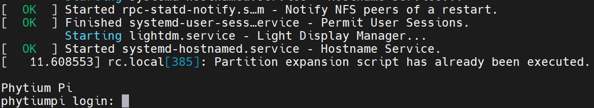
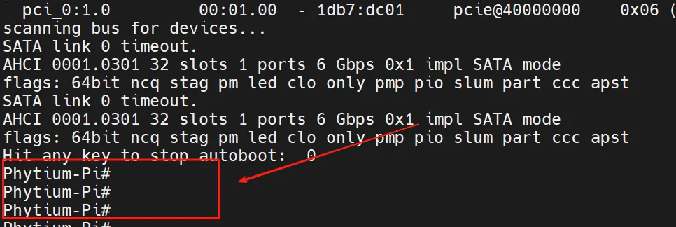
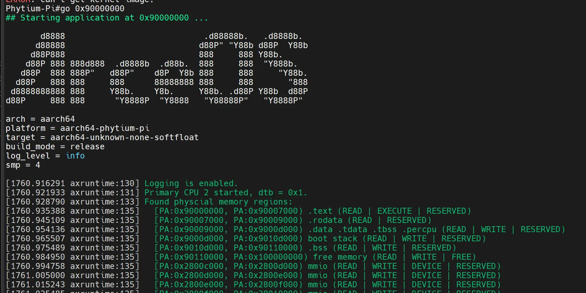

前言
本教材仍在撰写和调整中
第零章：环境配置与预备知识
0.1 硬件平台介绍
飞腾派开发板硬件平台详解
飞腾派是由萤火工场研发的国产自主可控开源硬件平台，定位于工业控制、嵌入式开发及教育领域，兼具高性能与丰富外设接口，适配多种操作系统生态。
1. 处理器与架构
- 核心配置：搭载飞腾定制四核处理器，采用ARM v8指令集，包含：
- 2×FTC664核（主频1.8GHz）
- 2×FTC310核（主频1.5GHz）
- 架构特性：
- 支持大小核协同调度
- 集成硬件虚拟化支持
- 适用于实时操作系统（RTOS）及边缘计算任务
2. 内存与存储
- 内存：
- 板载64位DDR4内存
- 提供2GB/4GB双版本
- 注：4GB版本采用鑫存储颗粒，2GB版本采用兆易创新颗粒
- 存储：
- 支持MicroSD卡或eMMC模块启动
- 默认从SD卡加载系统
- 推荐使用≥16GB容量的存储介质
3. 网络与无线连接
- 有线网络：
- 双路千兆以太网接口（RJ45）
- 支持DHCP自动分配IP或静态配置
- 无线通信：
- 板载WiFi 6（2.4G/5G双频）
- 蓝牙4.2/BLE4.2
- 集成陶瓷天线
- 移动网络扩展：
- 通过Mini-PCIe接口可扩展4G/5G通信模组
4. 扩展接口与多媒体能力
高速接口
- Mini-PCIe×1：支持AI加速卡（如NPU模块）、4G/5G模组等扩展
- USB接口：
- USB 3.0 Host×1
- USB 2.0 Host×3
工业接口
- CAN FD×2：用于工业总线通信
- UART调试口×2
- MIO（多功能IO）×2：可配置为UART/I2C模式
- GPIO×29：支持自定义外设驱动开发
音视频输出
- HDMI：
- 最高支持1080P@60fps视频输出
- 兼容H.264/H.265硬解码
- 3.5mm音频接口：支持音频播放与录制
5. 物理规格与供电
- 尺寸：119mm × 93mm（紧凑型设计）
- 供电：
- 12V/3A直流电源
- 工作温度范围：0~50℃
- 散热：需外接风扇（注意出风方向与电源极性）
6. 操作系统支持与开源生态
- 目前兼容系统：
- Debian 11（Phytium Pi OS）
- Ubuntu
- OpenKylin
- RT-Thread
- 开发工具链：
- Python、Qt、OpenCV等
- 适配机器视觉（如Halcon）及AI框架
- 社区资源：
- 开源硬件设计文档
- 萤火工场社区软件仓库
为何选择飞腾派进行ARCEOS驱动开发？
- 国产化适配：全国产处理器架构，符合信创场景需求
- 外设驱动全覆盖：丰富接口（CAN、I2C、SPI等）为驱动开发提供完整硬件基础
- 实时性扩展：支持Xenomai/Linux-RT，便于验证实时任务调度性能
硬件资源参考：
萤火工场官方文档
0.2 开发环境准备
0.2.1 运行环境
编译环境
编译依赖ubuntu操作系统，使用的winodws操作系统的同学可以通过安装WSL（linux 子系统）或者VMwork虚拟机来安装ubuntu。 安装好ubuntu 后需要安装必要的一些组件可直接执行如下指令
# 安装git 拉取代码
sudo apt install git
# 输入自己github的邮箱用户名
git config --global user.name "runoob"
git config --global user.email test@runoob.com
# 生成ssh密钥
ssh-keygen -t rsa -b 4096 -C "your.email@example.com"
# 安装编译qemu所需的依赖包
sudo apt install autoconf automake autotools-dev curl libmpc-dev libmpfr-dev libgmp-dev \
gawk build-essential bison flex texinfo gperf libtool patchutils bc \
zlib1g-dev libexpat-dev pkg-config libglib2.0-dev libpixman-1-dev libsdl2-dev \
git tmux python3 python3-pip ninja-build
vscode使用
由于是使用的wsl（inux子系统）作为基础编译环境，默认提供的是命令行搭配vim的方式来编辑文件。这可能并不是大部分人喜欢的开发环境，所以推荐使用vscode搭配remote-ssh插件来进行开发，并且该插件对于wsl是有很好的兼容性的，安装插件后直接选择连接wsl即可使用。

qemu 补充
在第一节的指导手册上使用的qemu版本是7.0.2，而很多模拟的外设是在后续版本才加到qemu中的。所以推荐从官网安装最新版或指定版本qemu官网
以10.0.2 版本为例子，使用如下命令即可完成qemu的安装。
wget https://download.qemu.org/qemu-10.0.2.tar.xz
tar xvJf qemu-10.0.2.tar.xz
cd qemu-10.0.2
make
make install
0.2.2 飞腾派上运行Arceos
首先运行Arceos需要依赖其他系统来提供uboot,所以运行Arceos第一步是先烧录提供的飞腾派OS。
烧录飞腾派OS
飞腾派资料包(提取码：dzdv)
注释： 5-系统镜像/1-PhytiumPIOS（基于Debian）/phytiumpiosv2.1资料包/4G内存-optee版/sdcard.img.7z，解压缩。
下载解压后使用烧录工具将系统镜像烧录到TF卡，之后将TF插到飞腾派的卡槽中，最后连接电源线上电。
烧录工具推荐使用balenaEtcher也可以使用win32 disk image
注释： 常用的手机以及派上的小卡正式名叫做TF或者说microSD 大的是SD卡当然统称为sd卡也是可以的 具体区别可查看 TF卡与SD卡
注意引导方式选择从sd卡启动！！！

注释： 如果使用的是带emmc的版本可以直接从emmc启动，是当前版本的麒麟os启动会禁用风扇请注意，过热可能会损坏飞腾派。
启动后连接串口，可以看到如下打印即说明系统成功启动，  账号:root 密码:root
编译及运行
首先快速验证请参考这个链接，可以通过ostool来快速验证当前开发环境是完整可用的，避免后面在进行了较多code后因为难以验证而放弃。
下载Arceos
git clone https://github.com/rcore-os/arceos.git
编译Arceos
make A=examples/helloworld ARCH=aarch64 PLATFORM=aarch64-phytium-pi FEARURES="irq" SMP=4 LOG=info
之后会在example/helloword 文件夹内生成对应的可执行文件helloworld_aarch64-phytium-pi.bin 将该文件拷贝到u盘中后将u盘插入飞腾派，之后重启飞腾派并在重启过程中在串口工具中输入enter以进入cmd模式，成功进入后串口打印如下图所示。 
执行如下指令即可将本地编译的Arceos部署到飞腾派上运行
usb start
fatload usb 0 0x90000000 helloworld_aarch64-phytium-pi.bin
go 0x90000000

0.3 前置知识引导
本章节主要针对在飞腾派上对arceos开发驱动所需的一些前置知识进行简单的介绍
What is Arceos?
Arceos是基于组件化思想构造、以 Rust 为主要开发语言、Unikernel 形态的操作系统。与传统操作系统的构建方式不同，组件是构成 ArceOS 的基本元素。
What is Rust？
Rust 最早是 Mozilla 雇员 Graydon Hoare 的个人项目。从 2009 年开始，得到了 Mozilla 研究院的资助，2010 年项目对外公布，2010 ～ 2011 年间实现自举。自此以后，Rust 在部分重构 -> 崩溃的边缘反复横跳（历程极其艰辛），终于，在 2015 年 5 月 15 日发布 1.0 版。
-
相比 Go 语言，Rust 语言表达能力更强，性能更高。同时线程安全方面 Rust 也更强，不容易写出错误的代码。包管理 Rust 也更好，Go 虽然在 1.10 版本后提供了包管理，但是目前还比不上 Rust 。
-
相比 C++ 语言，Rust 与 C++ 的性能旗鼓相当，但是在安全性方面 Rust 会更优，特别是使用第三方库时，Rust 的严格要求会让三方库的质量明显高很多。
-
相比 Java 语言，除了极少数纯粹的数字计算性能，Rust 的性能全面领先于 Java 。同时 Rust 占用内存小的多，因此实现同等规模的服务，Rust 所需的硬件成本会显著降低。
这里是部分 Rust 学习相关资料的链接：
- Rust程序设计语言中文版（https://www.rustwiki.org.cn/zh-CN/book/ch01-02-hello-world.html）
- Rust语言圣经（https://course.rs/into-rust.html）
- Rustling（编程题库，可以在实践中对照学习具体用法，具体练习方法在仓库文档中）（https://github.com/LearningOS/rustling-25S-template）
What is Unikernel？
Unikernel 是操作系统内核设计的一种架构（或称形态），从下图对比可以看出它与其它内核架构的显著区别：
.png) Unikernel 相对其它内核架构有三个特点：
Unikernel 相对其它内核架构有三个特点：
单特权级：应用与内核都处于同一特权级 - 即内核态，这使得应用在访问内核时，不需要特权级的切换。 单地址空间：应用没有单独的地址空间，而是共享内核的地址空间，所以在运行中，也不存在应用与内核地址空间切换的问题。 单应用：整个操作系统有且仅有一个应用，所以没有多应用之间隔离、共享及切换的问题。 所以相对于其它内核架构，Unikernel 设计实现的复杂度更低，运行效率相对较高，但在安全隔离方面，它的能力最弱。Unikernel 有它适合的特定的应用领域和场景。
ArceOS 选择 Unikernel 作为起步，希望为将来支持其它的内核架构建立基础。本实验指导正是对应这一阶段，从零开始一步一步的构建 Unikernel 形态的操作系统。Unikernel 本身这种简化的设计，可以让我们暂时忽略那些复杂的方面，把精力集中到最核心的问题上。

上图就是 ArceOS 的整体架构，由apps、crates、modules组成
- apps: 应用程序。它的运行需要依赖于modules组件库。
- modules: ArceOS的组件库。
- crates: 通用的基础库。为modules实现提供支持。
本开发手册主要针对 ArceOS 在 Phytium-Pi上开发驱动进行辅助说明，因此对于apps部分不作过多说明，主要对于目前已实现的crates和modules进行说明以辅助开发人员查询
Crates
- allocator: 内存分配算法，包括：bitmap、buddy、slab、tlsf。
- arm_gic: ARM通用中断控制器 (GICv2) 。
- arm_pl011: ARM串行通信接口，用于处理器和外部设备之间的串行通信 。
- axerrno: ArceOS的错误码定义。
- axfs_devfs: ArceOS的设备（Device）文件系统，是axfs_vfs一种实现。
- axfs_ramfs: ArceOS的内存（RAM）文件系统，是axfs_vfs一种实现。
- axfs_vfs: ArceOS的虚拟文件系统接口。
- axio: no_std环境下的I/O traits 。
- capability: Capability-based security 通过设置访问权限控制对系统资源的访问。
- crate_interface: 提供一种在 crate 中定义接口（特征）的方法，其目的是解决循环依赖。
- driver_block: 通用的块存储（磁盘）驱动程序的接口定义。
- driver_common: ArceOS的通用设备驱动接口定义，包括：disk、serial port、 ethernet card、GPU。
- driver_display: 通用的图形设备驱动程序接口定义。
- driver_net: 通用的网络设备 (NIC) 驱动程序定义。
- driver_pci: 定义对PCI总线操作。
- driver_virtio: 实现在driver_common定义的驱动。
- flatten_objects: 为每个存储对象分配一个唯一的ID。
- handler_table: 无锁的事件处理程序表。
- kernel_guard: 利用RAII创建具有本地IRQ或禁用抢占的临界区，用于在内核中实现自旋锁。
- lazy_init: 延迟初始化。
- linked_list: 链表。
- memory_addr: 提供理物理和虚拟地址操作的辅助函数。
- page_table: 页表。
- page_table_entry: 页表项。
- percpu: per-CPU的数据结构。
- percpu_macros: per-CPU的数据结构的宏实现。
- ratio: 比率相关计算。
- scheduler: 统一的调度算法接口，包括：cfs、fifo、round_robin。
- slab_allocator: no_std 环境下的 Slab 分配器（一种内存管理算法）。
- spinlock: no_std 环境下的自旋锁实现。
- timer_list: 定时器，在计时器到期时触发。
- tuple_for_each: 提供遍历tuple字段的宏和方法。
crates可以在 https://crates.io/ 进行具体查询
Modules
- axalloc: ArceOS 的全局内存分配器.
- axconfig: ArceOS 特定平台编译的常量和参数配置。
- axdisplay: ArceOS 的图形化模块。
- axdma: ArceOS 中为需要直接内存访问的设备驱动提供DMA支持。
- axdriver: ArceOS 的设备驱动模块。
- axfs: ArceOS 的文件系统模块。
- axhal: ArceOS硬件抽象层，为特定平台的操作提供统一的API。
- axlog: ArceOS 多个级别日志记录宏，包括：error、warn、info、debug、trace。
- axmm: ArceOS 的内存管理模块，提供虚拟内存地址空间抽象，支持线性映射和按需分配映射
- axnet: ArceOS 的网络模块，包括：IpAddr、TcpSocket、UdpSocket、DnsSocket等。
- axns: ArceOS 中用于命名空间管理功能的模块
- axruntime: ArceOS 的运行时库，负责系统启动和初始化序列，协调其他模块的初始化过程,是应用程序运行的基础环境。
- axsync: ArceOS 提供的同步操作模块，包括：Mutex、spin。
- axtask: ArceOS 的任务调度管理模块，包括：任务创建、调度、休眠、销毁等。
值得注意的是，并非所有模块都是必需的，其中axruntime、axhal、axconfig、axlog在所有构建中都会被启用并编译，而其他模块则会根据启动的功能特性进行选择性的编译，使得ArceOS可以根据不同的需求进行定制化构建
ArceOS最新主线仓库（https://github.com/arceos-org/arceos）
Phytium-Pi
- 顶层接口视图与说明

- 底层接口视图与说明
.png.png)
第一章：硬件控制类驱动
1.1 GPIO驱动开发
1. 硬件工作原理
1.1 模块概述
- 功能描述
GPIO 是 General Purpose Input Output（通用输入/输出） 的缩写，也就意味着这种类型的外设可以配置为多种输入/输出类型。单根GPIO的模型可以简单理解为一根导线。 导线的一端留给硬件工程师，他们可以将这一端任意的连接到他们想要的地方，然后告诉驱动工程师，他们想要 ”这根线“ 起到什么作用；导线的一端连接到cpu核心，驱动工程师通过cpu配置这个模块为指定的功能。
一般来说，GPIO可以用于获取某个的高低电平，作为cpu中断触发源等等。
-
应用场景
- 外部中断源输出。连接到特定的开关上去，当这个开关被按下时，电压发生跳变，由此执行相应逻辑。
- 检测外部输入，用于检查系统关键位置是否满足要求。
- 输出恒定电压，用于点亮LED等。
-
核心特性
- 开漏输出：可以实现电平转换，输出电平取决于上拉电阻电源；可以实现io的线与逻辑。
- 推挽输出：通过控制两个晶体管的开关来控制电平状态，优点是驱动能力较强，输出IO口驱动电流最大可到20ma。
- 浮空输入：浮空输入是指将输入引脚未连接到任何外部信号源或电路，使其处于未定义的状态。
- 下拉输入：芯片输入引脚通过电阻接到电源电压。
- 上拉输入：芯片输入引脚通过电阻借到参考0电平。
1.2 硬件接口介绍
- 扩展头：飞腾派（Phytium Pi）开发板提供 40-pin GPIO 扩展头（双排引脚，间距 2.54mm），位于板边，兼容类树莓派布局。引脚涵盖通用 GPIO、电源、GND 和专用信号（如 I2C、UART）。
- 引脚数量：最多暴露 29 个通用 GPIO（来自 6 个控制器，总 96 个信号，受板上限制）。其他引脚支持多路复用（MUX）为 I2C、SPI、UART、CAN 等。
- 电平标准：3.3V TTL 逻辑电平（高电平 >2V，低电平 <0.8V）。每个引脚最大电流约 16mA，总电流限制 50-100mA（依版本）。
- 颜色区分：
- 电源：红（3.3V/5V，Pin 1/2 等）。
- GND：黑（Pin 6/9 等）。
- GPIO：橙（e.g., Pin 7: GPIO2_10）。
- 专用信号：绿（e.g., Pin 3/5: I2C1_SDA/SCL）。
示例引脚（部分）：
- Pin 7: GPIO2_10（MUX 为 UART2_TXD、DP1_HPD 等）。
- Pin 11: GPIO3_1（MUX 为 UART2_CTS_N、SPIM2_CSN2）。
- Pin 3/5: I2C1_SDA/SCL（MUX 为 CAN1_RX/TX）。
1.3 时序图
飞腾派（Phytium Pi）GPIO 设备支持异步数字输入/输出和中断触发，无固定时钟信号。以下为 GPIO 的典型时序图，展示输出控制（如 LED 点亮/熄灭）和中断触发（如按钮按下检测）。时序图基于 3.3V 电平，切换时间 <10ns，支持上升/下降沿中断。
GPIO 输出时序（LED 控制示例）
描述：驱动程序通过寄存器（如 GPIO 输出寄存器）设置引脚电平（高/低），控制外部 LED。假设使用 Pin 7（GPIO2_10）点亮/熄灭 LED。
sequenceDiagram
participant D as 驱动
participant G as GPIO控制器
participant L as LED
D->>G: 写寄存器（0x28034000，设高电平）
G->>L: 输出 3.3V（点亮）
Note over G,L: 切换时间 <10ns
D->>G: 写寄存器（设低电平）
G->>L: 输出 0V（熄灭）
GPIO 中断时序（按钮触发示例）
描述：配置 GPIO 为输入模式，启用中断（上升沿触发），检测按钮按下。假设使用 Pin 11（GPIO3_1）连接按钮。
sequenceDiagram
participant B as 按钮
participant G as GPIO控制器
participant D as 驱动
B->>G: 按钮按下（电平 0V->3.3V）
G->>D: 触发中断（GIC_SPI，上升沿）
Note over G,D: 响应时间 <10ns
D->>G: 读取状态寄存器，处理事件
D->>G: 清除中断（IC_CLR_INTR）
说明
- 输出时序：GPIO 无固定时钟，驱动通过寄存器直接控制电平。LED 响应为瞬时（<10ns），需串联 330Ω 电阻防止过流。
- 中断时序：中断通过 GIC（Generic Interrupt Controller）处理，需配置 PAD 寄存器（0x32B30000）启用上下拉和中断模式。
- 异常情况：电平不稳定可能导致中断误触发，建议检查上下拉配置（x_reg0 寄存器）。
2.接口表
pl061 接口表
- 表格格式：
| API函数 | 描述 | 参数 | 返回值 |
|---|---|---|---|
| Pl0611::new | 创建gpio实例 | base_addr: Gpio控制器的基地址 | 初始化的gpio控制器 |
| Pl0611::set_func | 设置gpio引脚功能 | self,ch:通道号,func: Gpio功能 | Result<(),IoError>,成功Ok(()), 失败：无效的通道号 |
| Pl0611::int_when | 设置gpio中断条件 | self, ch:通道号,cond:什么时候触发中断，必须先配置为中断模式 | Result<(),IoError> 成功Ok(()), 失败：无效的通道号 |
| Pl0611::set_output | 设置gpio输出值 | self, ch:通道号, val:引脚值 | Result<(),IoError> 成功Ok(()), 失败：无效的通道号(没有配置为输出) |
| Pl0611::get_input | 设置gpio输出值 | self, ch:通道号, | Result<bool,IoError> 成功Ok(value), 失败：无效的通道号 |
飞腾派 GPIO1 接口表
- 表格格式：
| API函数 | 描述 | 参数 | 返回值 |
|---|---|---|---|
| PhytiumGpio::new | 创建gpio实例 | base_addr: Gpio控制器的基地址 | 初始化的gpio控制器 |
| PhytiumGpio::set_func | 设置gpio引脚功能 | self,ch:通道号,func: Gpio功能 | Result<(),IoError>,成功Ok(()), 失败：无效的通道号 |
| PhytiumGpio::set_output | 设置gpio输出值 | self, ch:通道号, val:引脚值 | Result<(),IoError> 成功Ok(()), 失败：无效的通道号(没有配置为输出) |
| PhytiumGpio::get_input | 设置gpio输出值 | self, ch:通道号, | Result<bool,IoError> 成功Ok(value), 失败：无效的通道号 |
-
调用顺序
- 中断模式
- 初始化
- 配置中断模式
- 配置中断条件
- 定义自己的中断函数并注册
- 输入/输出模式
- 初始化
- 配置输入/输出功能
- 输入/输出值
- 中断模式
-
错误处理 IoError::InvChn 不合法的通道
3. 寄存器结构
pl061模块
-
基地址 对于嵌入式平台，device tree是一种常用的方法。这次实现也需要通过设备树的方法获取基地址。不幸的是 qemu 没有直接提供他的设备树，但是启动的时候确实会传递一个默认的设备树。我们通过导出qemu设备树的方法来获取设备树。获得了dts之后，我们在这个dts中搜索 "pl061",可以看到这个：
pl061@9030000说明基地址为 0x9030000。
-
寄存器表
| 寄存器名称 | 偏移 | 寄存器定义 |
|---|---|---|
| GPIODIR | 0x400 | 设置GPIO引脚的输入输出功能，1代表该引脚为输出模式，0代表该引脚为输入模式。 |
| GPIOIS | 0x404 | 中断的触发方式p1，0代表检测电压，1代表检测边缘 |
| GPIOIBE | 0x408 | 中断的触发方式p2，0代表中断通过GPIOIEV来控制，1代表上升沿和下降沿都能触发中断 |
| GPIOIEV | 0x40c | 中断的触发方式设置p3，如果中断设置为边沿触发，0代表设置为下降沿触发，1代表上升沿触发；如果中断设置为电平触发， 0代表低电平，1代表高电平 |
| GPIOIE | 0x410 | 1是使能中断，0是去使能中断 |
飞腾派GPIO1模块
-
基地址 通过数据手册可以查出，GPIO1模块的基地址为0x000_2803_5000。
-
寄存器表
| 寄存器名称 | 偏移 | 寄存器定义 |
|---|---|---|
| GPIO_SWPORT_DR | 0x00 | 每一bit定义了对应引脚的输出值(当配置为输出模式时)。如果该引脚被配置为输出模式，写入这个寄存器的值将会被输出。1对应高电平，0对应低电平。 |
| GPIO_SWPORT_DDR | 0x04 | 每一bit定义了对应引脚的in/out属性。1代表该引脚为输出模式，0代表该引脚为输入模式。 |
| GPIO_EXT_PORT | 0x08 | 每一bit定义了对应引脚的引脚值。1代表对应引脚输出为高，0代表输出为低。 |
4 具体实现讲解
qemu平台关机实验
对于一些简单的设备，qemu能够很好的进行模拟。因此，对于部分没有开发板而想尝试进行驱动开发学习的同学，我们提供了基于qemu的部分实验。
-
在arceos代码仓库下，使用example为helloworld，先尝试运行得到以下结果。
运行结果
arceos git:(main)✗ make A=examples/helloworld PLATFORM=aarch64-qemu-virt ARCH=aarch64 LOG=debug FEATURES="driver-ramdisk,irq" run ACCEL=n GRAPHIC=n... # skip part build log axconfig-gen configs/defconfig.toml configs/platforms/aarch64-qemu-virt.toml -w smp=1 -w arch=aarch64 -w platform=aarch64-qemu-virt -o "/Users/jp/code/arceos/.axconfig.toml" -c "/Users/jp/code/arceos/.axconfig.toml" Building App: helloworld, Arch: aarch64, Platform: aarch64-qemu-virt, App type: rust cargo -C examples/helloworld build -Z unstable-options --target aarch64-unknown-none-softfloat --target-dir /Users/jp/code/arceos/target --release --features "axstd/log-level-debug axstd/driver-ramdisk axstd/irq" Finished `release` profile [optimized] target(s) in 0.08s rust-objcopy --binary-architecture=aarch64 examples/helloworld/helloworld_aarch64-qemu-virt.elf --strip-all -O binary examples/helloworld/helloworld_aarch64-qemu-virt.bin Running on qemu... qemu-system-aarch64 -m 128M -smp 1 -cpu cortex-a72 -machine virt -kernel examples/helloworld/helloworld_aarch64-qemu-virt.bin -nographic d8888 .d88888b. .d8888b. d88888 d88P" "Y88b d88P Y88b d88P888 888 888 Y88b. d88P 888 888d888 .d8888b .d88b. 888 888 "Y888b. d88P 888 888P" d88P" d8P Y8b 888 888 "Y88b. d88P 888 888 888 88888888 888 888 "888 d8888888888 888 Y88b. Y8b. Y88b. .d88P Y88b d88P d88P 888 888 "Y8888P "Y8888 "Y88888P" "Y8888P" arch = aarch64 platform = aarch64-qemu-virt target = aarch64-unknown-none-softfloat build_mode = release log_level = debug smp = 1 [ 0.001902 0 axruntime:130] Logging is enabled. [ 0.002488 0 axruntime:131] Primary CPU 0 started, dtb = 0x44000000. [ 0.002738 0 axruntime:133] Found physcial memory regions: [ 0.002968 0 axruntime:135] [PA:0x40200000, PA:0x40206000) .text (READ | EXECUTE | RESERVED) [ 0.003304 0 axruntime:135] [PA:0x40206000, PA:0x40209000) .rodata (READ | RESERVED) [ 0.003502 0 axruntime:135] [PA:0x40209000, PA:0x4020d000) .data .tdata .tbss .percpu (READ | WRITE | RESERVED) [ 0.003714 0 axruntime:135] [PA:0x4020d000, PA:0x4024d000) boot stack (READ | WRITE | RESERVED) [ 0.003892 0 axruntime:135] [PA:0x4024d000, PA:0x40250000) .bss (READ | WRITE | RESERVED) [ 0.004080 0 axruntime:135] [PA:0x40250000, PA:0x48000000) free memory (READ | WRITE | FREE) [ 0.004290 0 axruntime:135] [PA:0x9000000, PA:0x9001000) mmio (READ | WRITE | DEVICE | RESERVED) [ 0.004482 0 axruntime:135] [PA:0x9100000, PA:0x9101000) mmio (READ | WRITE | DEVICE | RESERVED) [ 0.004662 0 axruntime:135] [PA:0x8000000, PA:0x8020000) mmio (READ | WRITE | DEVICE | RESERVED) [ 0.004806 0 axruntime:135] [PA:0xa000000, PA:0xa004000) mmio (READ | WRITE | DEVICE | RESERVED) [ 0.004948 0 axruntime:135] [PA:0x10000000, PA:0x3eff0000) mmio (READ | WRITE | DEVICE | RESERVED) [ 0.005098 0 axruntime:135] [PA:0x4010000000, PA:0x4020000000) mmio (READ | WRITE | DEVICE | RESERVED) [ 0.005284 0 axruntime:150] Initialize platform devices... [ 0.005420 0 axhal::platform::aarch64_common::gic:51] Initialize GICv2... [ 0.006258 0 axruntime:176] Initialize interrupt handlers... [ 0.006466 0 axhal::irq:32] irq=30 enabled [ 0.006830 0 axruntime:188] Primary CPU 0 init OK. Hello, world! [ 0.007086 0 axruntime:201] main task exited: exit_code=0 [ 0.007248 0 axhal::platform::aarch64_common::psci:98] Shutting down... -
由于目前arceos是unikernel模式，特权级为el1，所以可以直接在 main.c 中操作设备地址（需要注意的是，这不是一种正确的做法。但对于初学者，为了不在一开始就去研究arecos的复杂代码框架，可以短暂的把实现代码写在这儿。），将pl061模块的三号引脚配置为irq模式。
#![allow(unused)] fn main() { // examples/helloworld/main.c ... /// 0x9030000 是 qemu模拟的aarch64-qemu-virt机器的 pl061模块的基地址(物理地址)。 /// irq number 39 从 aarch64-qemu-virt机器的设备树中找到，7 + 外部中断base(32) = 39 unsafe fn set_gpio_irq_enable() { // PHYS_VIRT_OFFSET 是 arceos 初始化时，将物理内存映射时进行的偏移。 let base_addr = (0x9030000 + PHYS_VIRT_OFFSET) as *mut u8; // pl061的3号引脚 let pin = 3; // 将interrupt设置为边缘触发 let gpio_is = base_addr.add(0x404); *gpio_is = *gpio_is & !(1 << pin); // 设置触发事件 let gpio_iev = base_addr.add(0x40c); *gpio_iev = *gpio_iev & !(1 << pin); // 设置中断使能 let gpio_ie = base_addr.add(0x410); *gpio_ie = 0; *gpio_ie = *gpio_ie | (1 << pin); fn shut_down() { println!("shutdown function called"); unsafe { let base_addr = (0x9030000 + PHYS_VIRT_OFFSET) as *mut u8; let pin = 3; // clear interrupt let gpio_ic = base_addr.add(0x41c); *gpio_ic = (1 << pin); // 关机命令 core::arch::asm!( "mov w0, #0x18; hlt #0xf000" ) } }; register_handler(39, shut_down); println!("set irq done"); } } -
并将中断号注册到 GIC(generic interrupt controller)中，中断号是39。
#![allow(unused)] fn main() { // examples/helloworld/main.c ... /// 0x9030000 是 qemu模拟的aarch64-qemu-virt机器的 pl061模块的基地址(物理地址)。 /// irq number 39 从 aarch64-qemu-virt机器的设备树中找到，7 + 外部中断base(32) = 39 unsafe fn set_gpio_irq_enable() { // PHYS_VIRT_OFFSET 是 arceos 初始化时，将物理内存映射时进行的偏移。 let base_addr = (0x9030000 + PHYS_VIRT_OFFSET) as *mut u8; // pl061的3号引脚 let pin = 3; // 将interrupt设置为边缘触发 let gpio_is = base_addr.add(0x404); *gpio_is = *gpio_is & !(1 << pin); // 设置触发事件 let gpio_iev = base_addr.add(0x40c); *gpio_iev = *gpio_iev & !(1 << pin); // 设置中断使能 let gpio_ie = base_addr.add(0x410); *gpio_ie = 0; *gpio_ie = *gpio_ie | (1 << pin); fn shut_down() { println!("shutdown function called"); unsafe { let base_addr = (0x9030000 + PHYS_VIRT_OFFSET) as *mut u8; let pin = 3; // clear interrupt let gpio_ic = base_addr.add(0x41c); *gpio_ic = (1 << pin); // 关机命令，可以用别的函数替代 core::arch::asm!( "mov w0, #0x18; hlt #0xf000" ) } }; // register handler 会同时将注册和在gic中使能中断完成。 register_handler(39, shut_down); println!("set irq done"); } } -
在main中死循环，等待gpio触发中断。
#[cfg_attr(feature = "axstd", unsafe(no_mangle))] fn main() { println!("Hello, world!"); unsafe { set_gpio_irq_enable(); } println!("loop started!"); loop { sleep(time::Duration::from_millis(10)); } } -
重新执行第一步命令，若无报错，输入
ctrl + a + c进入qemu的console模式，输入system_powerdown时，qemu会模拟一次中断。... [ 0.005842 0 axhal::platform::aarch64_common::gic:51] Initialize GICv2... [ 0.006358 0 axruntime:176] Initialize interrupt handlers... [ 0.006554 0 axhal::irq:32] irq=30 enabled [ 0.007232 0 axruntime:188] Primary CPU 0 init OK. Hello, world! GPIORIS=0x0 [ 0.007688 0 axhal::irq:32] irq=39 enabled set irq done loop started! QEMU 9.2.0 monitor - type 'help' for more information (qemu) syst system_powerdown system_reset system_wakeup (qemu) system_powerdown -
GIC 会将中断分发给 arm 某个核心（由于我们是单核，不存在分发）, cpu对我们注册的关机函数进行回调。
... (qemu) system_powerdown (qemu) shutdown function called [ 50.194414 0 axruntime::lang_items:5] panicked at /Users/jp/.cargo/registry/src/mirrors.ustc.edu.cn-38d0e5eb5da2abae/axcpu-0.1.0/src/aarch64/trap.rs:112:13: Unhandled synchronous exception @ 0xffff0000402010b0: ESR=0x2000000 (EC 0b000000, ISS 0x0) [ 50.195002 0 axhal::platform::aarch64_common::psci:98] Shutting down...
飞腾派点灯实验
基本思想是将GPIO配置为作为输出模式，对应的，这个GPIO可以输出为高电平或者低电平。我们都学过初中物理，知道当一个led灯两侧有足够的电压和电流的时候，它就会亮。不过一般的GPIO线输出电流能力都不强，不足以驱动一个led灯。所以一般会用以下两种方式来实现：
- led正极接电源，负极接gpio。gpio输出为低时，led点亮。
- led接 mos 管的gate。一般来说，GPIO为高电压时，会使得mos管闭合，led点亮；反之则熄灭。
参照飞腾派的硬件原理图，板子上有一个灯可以被我们控制，也就是led20，控制方法为第二种方法，控制GPIO线为GPIO1_8。


当然，如果你愿意，飞腾派开发板提供了很多GPIO的拓展线。你可以自己实现一套电路来点亮外接的led灯。
我们最终要实现led灯的"心跳"效果，即 亮1秒，暗1秒，如此往复循环。
- 编写驱动代码，实现 set_dir 和 set_data 操作，示例代码如下：
#![allow(unused)] fn main() { use bitflags::bitflags; use safe_mmio::fields::ReadWrite; use zerocopy::{FromBytes, Immutable, IntoBytes, KnownLayout}; #[derive(Clone, Eq, FromBytes, Immutable, IntoBytes, KnownLayout, PartialEq)] #[repr(C, align(4))] pub struct PhitiumGpio { data: ReadWrite<GpioPins>, resv: ReadWrite<u16>, dir: ReadWrite<GpioPins>, resv2: ReadWrite<u16>, } #[repr(transparent)] #[derive(Copy, Clone, Debug, Eq, FromBytes, Immutable, IntoBytes, KnownLayout, PartialEq)] pub struct GpioPins(u16); bitflags! { impl GpioPins: u16 { const p0 = 1<<0; const p1 = 1<<1; const p2 = 1<<2; const p3 = 1<<3; const p4 = 1<<4; const p5 = 1<<5; const p6 = 1<<6; const p7 = 1<<7; const p8 = 1<<8; const p9 = 1<<9; const p10 = 1<<10; const p11 = 1<<11; const p12 = 1<<12; const p13 = 1<<13; const p14 = 1<<14; const p15 = 1<<15; } } impl PhitiumGpio { pub fn new(base: usize) -> &'static mut Self { let b = base as *mut PhitiumGpio; unsafe { &mut (*b) } } pub fn set_pin_dir(&mut self, pin: GpioPins, dir: bool) { let mut status = self.dir.0.bits(); debug!("dir data = {status}"); let pb = pin.bits(); if dir == true { status |= pb; } else { status &= !pb; } debug!("dir data = {status}"); self.dir.0 = (GpioPins::from_bits_truncate(status)); } pub fn set_pin_data(&mut self, pin: GpioPins, data: bool) { let mut status = self.dir.0.bits(); debug!(" data = {status}"); let pb = pin.bits(); if data == true { status |= pb; } else { status &= !pb; } debug!(" data = {status}"); self.data.0 = (GpioPins::from_bits_truncate(status)); } } pub use crate::mem::phys_to_virt; pub use memory_addr::PhysAddr; pub const BASE1: PhysAddr = pa!(0x28035000); } - 由于我们目前暂时没有文件系统，无法通过读写文件的方式来控制GPIO。这里直接在main.rs中实例一个GPIO控制器进行相关初始化。
// examples/helloworld/src/main.rs #![cfg_attr(feature = "axstd", no_std)] #![cfg_attr(feature = "axstd", no_main)] use core::time; #[cfg(feature = "axstd")] use axstd::println; use axstd::thread::sleep; #[cfg_attr(feature = "axstd", unsafe(no_mangle))] fn main() { println!("Hello, world!"); let gpio0 = axhal::platform::gpio::PhitiumGpio::new( axhal::platform::gpio::phys_to_virt(axhal::platform::gpio::BASE1).into(), ); let p = axhal::platform::gpio::GpioPins::p8; gpio0.set_pin_dir(p, true); let mut data = false; loop { sleep(time::Duration::from_secs(1)); gpio0.set_pin_data(p, data); println!("current data: {data}"); data = !data; } } - 创建一个大loop，在这个loop中，我们不停的将pin 8的值进行反转，反转一次，sleep 1s，这样就实现了1s灭，1s亮的效果。
// examples/helloworld/src/main.rs #![cfg_attr(feature = "axstd", no_std)] #![cfg_attr(feature = "axstd", no_main)] use core::time; #[cfg(feature = "axstd")] use axstd::println; use axstd::thread::sleep; #[cfg_attr(feature = "axstd", unsafe(no_mangle))] fn main() { println!("Hello, world!"); let gpio0 = axhal::platform::gpio::PhitiumGpio::new( axhal::platform::gpio::phys_to_virt(axhal::platform::gpio::BASE1).into(), ); let p = axhal::platform::gpio::GpioPins::p8; gpio0.set_pin_dir(p, true); et mut data = false; loop { sleep(time::Duration::from_secs(1)); gpio0.set_pin_data(p, data); println!("current data: {data}"); data = !data; } }
- 通过
make A=examples/helloworld ARCH=aarch64 PLATFORM=aarch64-phytium-pi FEATURES=irq LOG=debug进行编译，并烧入飞腾派运行。下面是运行日志以及实拍。
运行结果
Starting kernel ...
d8888 .d88888b. .d8888b.
d88888 d88P" "Y88b d88P Y88b
d88P888 888 888 Y88b.
d88P 888 888d888 .d8888b .d88b. 888 888 "Y888b.
d88P 888 888P" d88P" d8P Y8b 888 888 "Y88b.
d88P 888 888 888 88888888 888 888 "888
d8888888888 888 Y88b. Y8b. Y88b. .d88P Y88b d88P
d88P 888 888 "Y8888P "Y8888 "Y88888P" "Y8888P"
arch = aarch64
platform = aarch64-phytium-pi
target = aarch64-unknown-none-softfloat
build_mode = release
log_level = trace
smp = 1
[ 13.461312 0 axruntime:130] Logging is enabled.
[ 13.467040 0 axruntime:131] Primary CPU 0 started, dtb = 0xf9c29000.
[ 13.474591 0 axruntime:133] Found physcial memory regions:
[ 13.481276 0 axruntime:135] [PA:0x90000000, PA:0x90007000) .text (READ | EXECUTE | RESERVED)
[ 13.491083 0 axruntime:135] [PA:0x90007000, PA:0x9000a000) .rodata (READ | RESERVED)
[ 13.500197 0 axruntime:135] [PA:0x9000a000, PA:0x9000e000) .data .tdata .tbss .percpu (READ | WRITE | RESERVED)
[ 13.511655 0 axruntime:135] [PA:0x9000e000, PA:0x9004e000) boot stack (READ | WRITE | RESERVED)
[ 13.521724 0 axruntime:135] [PA:0x9004e000, PA:0x90051000) .bss (READ | WRITE | RESERVED)
[ 13.531272 0 axruntime:135] [PA:0x90051000, PA:0x100000000) free memory (READ | WRITE | FREE)
[ 13.541167 0 axruntime:135] [PA:0x2800c000, PA:0x2800d000) mmio (READ | WRITE | DEVICE | RESERVED)
[ 13.551496 0 axruntime:135] [PA:0x2800d000, PA:0x2800e000) mmio (READ | WRITE | DEVICE | RESERVED)
[ 13.561825 0 axruntime:135] [PA:0x2800e000, PA:0x2800f000) mmio (READ | WRITE | DEVICE | RESERVED)
[ 13.572155 0 axruntime:135] [PA:0x2800f000, PA:0x28010000) mmio (READ | WRITE | DEVICE | RESERVED)
[ 13.582484 0 axruntime:135] [PA:0x30000000, PA:0x38000000) mmio (READ | WRITE | DEVICE | RESERVED)
[ 13.592813 0 axruntime:135] [PA:0x40000000, PA:0x50000000) mmio (READ | WRITE | DEVICE | RESERVED)
[ 13.603142 0 axruntime:135] [PA:0x58000000, PA:0x80000000) mmio (READ | WRITE | DEVICE | RESERVED)
[ 13.613471 0 axruntime:135] [PA:0x28014000, PA:0x28016000) mmio (READ | WRITE | DEVICE | RESERVED)
[ 13.623800 0 axruntime:135] [PA:0x28016000, PA:0x28018000) mmio (READ | WRITE | DEVICE | RESERVED)
[ 13.634130 0 axruntime:135] [PA:0x28018000, PA:0x2801a000) mmio (READ | WRITE | DEVICE | RESERVED)
[ 13.644459 0 axruntime:135] [PA:0x2801a000, PA:0x2801c000) mmio (READ | WRITE | DEVICE | RESERVED)
[ 13.654788 0 axruntime:135] [PA:0x2801c000, PA:0x2801e000) mmio (READ | WRITE | DEVICE | RESERVED)
[ 13.665117 0 axruntime:135] [PA:0x28034000, PA:0x28035000) mmio (READ | WRITE | DEVICE | RESERVED)
[ 13.675446 0 axruntime:135] [PA:0x28035000, PA:0x28036000) mmio (READ | WRITE | DEVICE | RESERVED)
[ 13.685776 0 axruntime:135] [PA:0x28036000, PA:0x28037000) mmio (READ | WRITE | DEVICE | RESERVED)
[ 13.696105 0 axruntime:135] [PA:0x28037000, PA:0x28038000) mmio (READ | WRITE | DEVICE | RESERVED)
[ 13.706434 0 axruntime:135] [PA:0x28038000, PA:0x28039000) mmio (READ | WRITE | DEVICE | RESERVED)
[ 13.716763 0 axruntime:135] [PA:0x28039000, PA:0x2803a000) mmio (READ | WRITE | DEVICE | RESERVED)
[ 13.727093 0 axruntime:150] Initialize platform devices...
[ 13.733776 0 axhal::platform::aarch64_common::gic:51] Initialize GICv2...
[ 13.741897 0 axhal::platform::aarch64_common::gic:27] GICD set enable: 30 true
[ 13.750182 0 axhal::platform::aarch64_common::gic:27] GICD set enable: 116 true
[ 13.758688 0 axruntime:176] Initialize interrupt handlers...
[ 13.765545 0 axhal::platform::aarch64_common::gic:36] register handler irq 30
[ 13.773878 0 axhal::platform::aarch64_common::gic:27] GICD set enable: 30 true
[ 13.782298 0 axruntime:188] Primary CPU 0 init OK.
Hello, world!
[ 13.789589 0 axhal::platform::aarch64_phytium_pi::gpio:46] dir data = 0
[ 13.797401 0 axhal::platform::aarch64_phytium_pi::gpio:53] dir data = 256
[ 14.805386 0 axhal::platform::aarch64_phytium_pi::gpio:58] data = 256
[ 14.810239 0 axhal::platform::aarch64_phytium_pi::gpio:65] data = 0
current data: false
[ 15.819614 0 axhal::platform::aarch64_phytium_pi::gpio:58] data = 256
[ 15.824467 0 axhal::platform::aarch64_phytium_pi::gpio:65] data = 256
current data: true
[ 16.833928 0 axhal::platform::aarch64_phytium_pi::gpio:58] data = 256
[ 16.838781 0 axhal::platform::aarch64_phytium_pi::gpio:65] data = 0
current data: false
[ 17.848156 0 axhal::platform::aarch64_phytium_pi::gpio:58] data = 256
[ 17.853009 0 axhal::platform::aarch64_phytium_pi::gpio:65] data = 256
current data: true
[ 18.862470 0 axhal::platform::aarch64_phytium_pi::gpio:58] data = 256
[ 18.867323 0 axhal::platform::aarch64_phytium_pi::gpio:65] data = 0
current data: false
[ 19.876698 0 axhal::platform::aarch64_phytium_pi::gpio:58] data = 256
[ 19.881551 0 axhal::platform::aarch64_phytium_pi::gpio:65] data = 256
current data: true
[ 20.891012 0 axhal::platform::aarch64_phytium_pi::gpio:58] data = 256
[ 20.895865 0 axhal::platform::aarch64_phytium_pi::gpio:65] data = 0
current data: false
[ 21.905240 0 axhal::platform::aarch64_phytium_pi::gpio:58] data = 256
[ 21.910093 0 axhal::platform::aarch64_phytium_pi::gpio:65] data = 256
current data: true
[ 22.919554 0 axhal::platform::aarch64_phytium_pi::gpio:58] data = 256
[ 22.924407 0 axhal::platform::aarch64_phytium_pi::gpio:65] data = 0
current data: false
[ 23.933782 0 axhal::platform::aarch64_phytium_pi::gpio:58] data = 256
[ 23.938635 0 axhal::platform::aarch64_phytium_pi::gpio:65] data = 256
current data: true
[ 24.948097 0 axhal::platform::aarch64_phytium_pi::gpio:58] data = 256
[ 24.952950 0 axhal::platform::aarch64_phytium_pi::gpio:65] data = 0
current data: false
5. 开发注意
5.1 优化代码
- 目前驱动代码位于
examples/helloworld/main.c中，这不是一种正确的做法。参考modules/axhal/src/platform/aarch64_common/pl011.rs的实现，在同级目录下实现 pl061.rs。 rust 提供了如tock_registers这样的可以用来定义寄存器的crate，用起来！ - 关机函数实际上是触发了一个异常而导致的关机，当把上一步完成后，换成
axhal::misc::terminate来优雅的关机！ - 实验2的完整代码在https://github.com/arceos-org/arceos/commit/2e7837a786d13b0a77804d15a10f614ef715150d。
6. 参考资料
pl061_datasheet:
https://github.com/elliott10/dev-hw-driver/blob/main/docs/GPIO-controller-pl061-DDI0190.pdf
导出qemu设备树:
https://blog.51cto.com/u_15072780/3818667
飞腾派硬件原理图:
飞腾派软件开发手册
https://github.com/elliott10/dev-hw-driver/blob/main/phytiumpi/docs/飞腾派软件编程手册V1.0.pdf
1.2 PWM驱动开发
PWM介绍
PWM（Pulse Width Modulation） 是一种通过调节脉冲宽度（占空比）来模拟不同模拟量输出的数字控制技术。它利用数字信号（高/低电平）控制模拟电路，广泛应用于电机调速、电源转换、LED调光等领域。其核心是通过调整脉冲的“有效时间比例”实现连续可调的电压、功率或信号输出
PWM 最关键的两个参数：频率和占空比。
频率是指单位时间内脉冲信号的周期数。比如开关灯，开关一次算一次周期，在 1s 进行多少次开关（开关一次为一个周期）。
占空比是指一个周期内高电平时间和低电平时间的比例。也拿开关当作例子，总共 100s，开了 50s 灯（高电平），关了 50s 灯（低电平），这时候的占空比就为 50%（比例）。
PWM核心特性
1.占空比可变
- 占空比越大，等效输出电压越高（例：占空比50% ≈ 最大电压的50%）
2.数字模拟转换能力
- 微控制器通过输出高频方波（如10kHz），配合滤波电路，可生成平滑的模拟电压（如0-5V连续可调）
3.控制灵活性强
- 频率可调：适应不同负载需求（电机控制常用6-16kHz，LED调光>80Hz避频闪）
- 动态响应快：占空比可实时调整（如根据传感器反馈调节电机转速）
PWM控制原理和工作过程
关键参数
- 周期（T）：一个完整脉冲的时间（单位：秒）。
- 频率（f）：周期的倒数（f=1/T），决定信号切换速度。
- 脉宽时间（tW）：高电平持续时间，直接决定占空比
PWM波形生成过程
1.周期设定
- 通过定时器计数器设定周期值（PWM定时器的工作方式有点像一个精准的节拍器。它的核心是一个计数器，从0开始计数，数到某个设定值（称为模数）后清零，循环往复。这个模数决定了PWM信号的周期）
- 举例：假设模数设为9，计数器会从0数到9，总共10个状态，构成一个完整的周期。
- PWM定时器通常会有个预分频器，用来把主时钟频率降低，方便控制计数器的速度，这里我们假设主时钟频率24 MHz，预分频器可选1、2、4、8、16、32、64、128
- 预分频器的值决定了计数器的时钟频率，计数器的时钟频率 = 主时钟频率 / 预分频器的值
- 当预分频器设为8，计数器的时钟频率为24 MHz / 8 = 3 MHz
2.脉宽调制
- 设置“宽度寄存器”值W控制高电平时间，这里我们还是以上面的例子继续讲解：
- 我们需求电机静止脉宽：1.5毫秒，最大顺时针速度脉宽：1毫秒，最大逆时针速度脉宽：2毫秒
- 脉宽时间tW = W × 0.333微秒，W是宽度寄存器的值，由此
- 电机静止：1.5毫秒 ÷ 0.333微秒 ≈ 4500
- 最大顺时针速度：1毫秒 ÷ 0.333微秒 ≈ 3000
- 最大逆时针速度：2毫秒 ÷ 0.333微秒 ≈ 6000
飞腾派PWM硬件实现
飞腾派集成的 PWM 控制器支持典型的 PWM 功能，有 2 个完全独立的 compare 输出通道。使用 PWM 功能前，需要先配置相关 PAD 复用寄存器，将对应 PAD 配置到对应功能上，即可使用 PWM 功能。
飞腾派PWM硬件模块
| 模块 | 功能 |
|---|---|
| PWM控制器核心模块（处理器内置） | 支持compare输出模式，提供寄存器、FIFO双模式驱动，并支持中断控制：计数器溢出、比较匹配、FIFO空中断 |
| 死区生成器 | 防短路保护，并提供了Bypass（原始信号直通）、FallEdgeOnly（只添加下降沿延迟）、RiseEdgeOnly（只添加上升沿延迟）、FullDeadband（双边延迟）四种工作模式（由DBDLY和DBCTRL控制） |
飞腾派 PWM 设备时序图
飞腾派（Phytium Pi）V3.x 版本的 PWM（脉宽调制）设备通过 PWM 控制器（基址 0x2804_A000~0x2805_1000）生成可调频率和占空比的信号，支持 8 个控制器，每个控制器 2 个通道（PWM0 和 PWM1），输出通过 40-pin 扩展头（如 Pin 32，GPIO1_1）。以下为 PWM 设备的典型时序图，展示通道配置和输出过程，以及中断处理流程（如 FIFO 空中断）。时序图基于 pwm.rs 驱动实现（configure_channel 和 handle_interrupt），参考飞腾派软件编程手册 V1.0（5.24 节），使用 Mermaid 绘制。
PWM 通道配置与输出时序
描述：驱动通过寄存器（tim_ctrl, pwm_period, pwm_ctrl, pwm_ccr）配置 PWM 通道（例如通道 0，频率 1kHz，占空比 50%），启用输出（Pin 32）。过程包括设置分频、周期、占空比和比较模式（ClearOnMatch），最终生成 PWM 波形。
sequenceDiagram
participant D as 驱动
participant P as PWM控制器
participant O as 输出引脚(Pin 32)
D->>P: 写 tim_ctrl(DIV=50000, MODE=Modulo, ENABLE=0)
D->>P: 写 pwm_period(CCR=999) // 1kHz
D->>P: 写 pwm_ctrl(MODE=Compare, CMP=ClearOnMatch, IE=1)
D->>P: 写 pwm_ccr(CCR=500) // 50% 占空比
D->>P: 写 tim_ctrl(ENABLE=1)
P->>O: 输出 PWM 波形(1kHz, 50% 占空比)
Note over P,O: 周期 1ms, 高电平 0.5ms
说明：
- 时序：配置分频（DIV=50000，50MHz/50000=1kHz），周期（CCR=999，1ms），占空比（CCR=500，50%）。启用后（ENABLE=1），PWM 控制器在 10ns 内输出波形。
- 硬件关联：PWM 通道 0（基址 0x2804_A000，偏移 0x400~0x414），输出至 Pin 32（需 PAD 配置为 PWM，x_reg0=4）。
- 约束：频率切换需等待计数器归零（<1ms），确保外设空闲（如 UART 无传输）。
PWM 中断处理时序（FIFO 模式）
描述：驱动启用 FIFO 模式（DUTY_SEL=FIFO），配置通道 0（1kHz，50% 占空比），处理 FIFO 空中断（STATE::FIFO_EMPTY）。当计数器归零（tim_cnt=0），驱动重新填充占空比值，保持连续输出。
sequenceDiagram
participant D as 驱动
participant P as PWM控制器
participant G as GIC中断控制器
D->>P: 写 pwm_ctrl(FIFO_EMPTY_ENABLE=1, DUTY_SEL=FIFO)
D->>P: 填充 pwm_ccr(CCR=500, 4次) // 50% 占空比
P->>G: 触发 FIFO 空中断(STATE::FIFO_EMPTY=1)
G->>D: 中断信号(GIC SPI)
D->>P: 检查 tim_cnt(CNT=0)
D->>P: 填充 pwm_ccr(CCR=500)
D->>P: 清除 STATE::FIFO_EMPTY(写1)
Note over P,D: 中断响应 <10ns
说明：
- 时序：FIFO 空时触发中断（<10ns），驱动检查计数器（CNT=0），填充占空比（CCR=500），清除中断标志（RW1C）。中断周期与 PWM 频率一致（1ms for 1kHz）。
- 硬件关联：中断通过 GIC（基址 0xFF84_1000），需 pinctrl.rs 配置引脚（Pin 32）。状态寄存器（偏移 0x408/0x808）使用 RW1C 清除。
- 约束：FIFO 需预填充 4 个值，避免空中断频繁触发。
飞腾派PWM驱动API调用表
| API函数 | 描述 | 参数 | 返回值 |
|---|---|---|---|
| PwmDriver::new | 创建 PWM 驱动实例并映射硬件寄存器。 | base_addr: PWM 控制器的物理基地址 | 初始化的 PwmDriver 对象 |
| configure_channel | 配置 PWM 通道参数 | channel: PWM 通道号 (0-7)、config: PwmConfig 结构体，包含：frequency: PWM 频率 (Hz)、duty_cycle: 占空比 (0.0-1.0)、counting_mode: 计数模式 (Modulo/UpAndDown)、deadtime_ns: 死区时间 (纳秒)、use_fifo: 是否使用 FIFO 模式 | Option：成功：Ok(())；失败：错误信息（如无效通道、占空比越界等） |
| init_fifo_mode | 初始化 FIFO 模式 | channel: PWM 通道号、 initial_duty: 初始占空比值 | Option：成功：Ok(())；失败：错误信息 |
| push_fifo_data | 向 FIFO 推送占空比数据 | channel: PWM 通道号；duty_value: 16 位占空比值 | Option：成功：Ok(())；失败：错误信息 |
| enable_channel | 启用 PWM 通道输出 | channel: PWM 通道号 | 无 |
| safe_stop_channel | 安全停止 PWM 输出（防电源瞬变） | channel: PWM 通道号 | 无 |
| enable_multiple_channels | 同时启用多个 PWM 通道 | mask: 通道掩码（bit0=通道0, bit1=通道1, ...） | 无 |
| handle_interrupt | 处理 PWM 中断 | 无 | 无 |
| pwm_init | 初始化 PWM 控制器（高级封装） | base_addr: PWM 控制器物理基地址 | 初始化的 PwmDriver 对象 |
飞腾派 PWM 设备驱动寄存器信息
以下为飞腾派（Phytium Pi）V3.x 版本 PWM（脉宽调制）设备驱动涉及的寄存器信息，基于在 chenlongos/appd 仓库 phytium-pi 分支中实现的 modules/axhal/src/platform/aarch64_phytium_pi/pwm.rs 文件。驱动设计使用 Rust 和 tock_registers 宏，遵循 ArceOS 的 axhal 框架，适配飞腾派 E2000 处理器的 PWM 控制器（支持 8 个控制器，每个控制器 2 个通道）。寄存器信息参考飞腾派软件编程手册 V1.0（表 5-67 和 5.24），包括基地址、寄存器表和位域定义。
基地址
PWM 驱动涉及 8 个 PWM 控制器和全局使能寄存器，基址如下：
| 模块 | 基地址 | 描述 |
|---|---|---|
| PWM 控制器 0 | 0x2804_A000 | PWM0 控制器，2 个通道（PWM0_OUT/PWM1_OUT） |
| PWM 控制器 1 | 0x2804_B000 | PWM1 控制器 |
| PWM 控制器 2 | 0x2804_C000 | PWM2 控制器 |
| PWM 控制器 3 | 0x2804_D000 | PWM3 控制器 |
| PWM 控制器 4 | 0x2804_E000 | PWM4 控制器 |
| PWM 控制器 5 | 0x2804_F000 | PWM5 控制器 |
| PWM 控制器 6 | 0x2805_0000 | PWM6 控制器 |
| PWM 控制器 7 | 0x2805_1000 | PWM7 控制器 |
| 全局使能寄存器 | 0x2807E020 | 控制所有 PWM 控制器的使能（bit 0-7） |
寄存器表
每个 PWM 控制器包含死区控制寄存器（0x0000~0x03FF）和两个通道寄存器（通道 0: 0x0400~0x07FF，通道 1: 0x0800~0x0BFF）。以下为寄存器定义：
| 寄存器名称 | 偏移地址 | 描述 |
|---|---|---|
dbctrl | 0x0000 | 死区控制寄存器，配置死区模式和输出极性。 |
dbdly | 0x0004 | 死区延迟寄存器，设置上升/下降沿延迟周期。 |
ch0_tim_cnt | 0x0400 | 通道 0 当前计数值寄存器，记录定时器计数值。 |
ch0_tim_ctrl | 0x0404 | 通道 0 定时器控制寄存器，配置分频、计数模式和使能。 |
ch0_state | 0x0408 | 通道 0 状态寄存器，记录中断状态（FIFO 满/空、溢出、比较匹配）。 |
ch0_pwm_period | 0x040C | 通道 0 周期寄存器，设置 PWM 周期值。 |
ch0_pwm_ctrl | 0x0410 | 通道 0 PWM 控制寄存器，配置输出模式、FIFO 和中断。 |
ch0_pwm_ccr | 0x0414 | 通道 0 占空比寄存器，设置比较值（占空比）。 |
ch1_tim_cnt | 0x0800 | 通道 1 当前计数值寄存器，记录定时器计数值。 |
ch1_tim_ctrl | 0x0804 | 通道 1 定时器控制寄存器，配置分频、计数模式和使能。 |
ch1_state | 0x0808 | 通道 1 状态寄存器，记录中断状态。 |
ch1_pwm_period | 0x080C | 通道 1 周期寄存器，设置 PWM 周期值。 |
ch1_pwm_ctrl | 0x0810 | 通道 1 PWM 控制寄存器，配置输出模式、FIFO 和中断。 |
ch1_pwm_ccr | 0x0814 | 通道 1 占空比寄存器，设置比较值（占空比）。 |
寄存器位域设置
以下详细描述每个寄存器的位域，包括用途、有效值和默认状态。
dbctrl (偏移 0x0000, 读写)
- OUT_MODE (bit 4-5, 2 bits)
- 用途：配置死区输出模式。
- 有效值：
- 0b00 = Bypass（无死区）
- 0b01 = FallEdgeOnly（仅下降沿）
- 0b10 = RiseEdgeOnly（仅上升沿）
- 0b11 = FullDeadband（双边死区）
- 默认值：0b00
- 描述：控制 PWM0_OUT 和 PWM1_OUT 的死区行为（如电机驱动）。
- POLSEL (bit 2-3, 2 bits)
- 用途：配置输出极性。
- 有效值：
- 0b00 = AH（PWM0_OUT/PWM1_OUT 不翻转）
- 0b01 = ALC（PWM0_OUT 翻转）
- 0b10 = AHC（PWM1_OUT 翻转）
- 0b11 = AL（两者翻转）
- 默认值：0b00
- 描述：调整输出信号极性。
- IN_MODE (bit 1, 1 bit)
- 用途：选择死区输入源。
- 有效值：0 = PWM0，1 = PWM1
- 默认值：0
- 描述：选择 PWM 通道作为死区输入。
- DB_SW_RST (bit 0, 1 bit)
- 用途：软件复位死区控制。
- 有效值：0 = 正常，1 = 复位
- 默认值：0
- 描述：复位死区模块。
dbdly (偏移 0x0004, 读写)
- DBFED (bit 10-19, 10 bits)
- 用途：下降沿死区延迟周期（0~1023）。
- 默认值：0
- 描述：设置下降沿延迟（ns 级，基于 50MHz 时钟）。
- DBRED (bit 0-9, 10 bits)
- 用途：上升沿死区延迟周期（0~1023）。
- 默认值：0
- 描述：设置上升沿延迟。
ch0_tim_cnt / ch1_tim_cnt (偏移 0x0400/0x0800, 读写)
- CNT (bit 0-15, 16 bits)
- 用途：当前计数值。
- 默认值：0
- 描述：记录 PWM 计数器状态，用于中断或轮询。
ch0_tim_ctrl / ch1_tim_ctrl (偏移 0x0404/0x0804, 读写)
- DIV (bit 16-27, 12 bits)
- 用途：分频系数（1~4095）。
- 默认值：0
- 描述：基于 50MHz 系统时钟，计算频率（freq = 50MHz / DIV）。
- GIE (bit 5, 1 bit)
- 用途：全局中断使能。
- 有效值：0 = 禁用，1 = 启用
- 默认值：0
- 描述：控制所有中断输出。
- OVFIF_ENABLE (bit 4, 1 bit)
- 用途：溢出中断使能。
- 有效值：0 = 禁用，1 = 启用
- 默认值：0
- 描述：启用计数器溢出中断。
- MODE (bit 2, 1 bit)
- 用途：计数模式。
- 有效值：0 = Modulo（模计数），1 = UpAndDown（三角计数）
- 默认值：0
- 描述：控制计数行为。
- ENABLE (bit 1, 1 bit)
- 用途：通道使能。
- 有效值：0 = 禁用，1 = 启用
- 默认值：0
- 描述：启动 PWM 输出。
- SW_RST (bit 0, 1 bit)
- 用途：软件复位通道。
- 有效值：0 = 正常，1 = 复位
- 默认值：0
- 描述：复位计数器。
ch0_state / ch1_state (偏移 0x0408/0x0808, 读写)
- FIFO_FULL (bit 3, 1 bit, RW1C)
- 用途：FIFO 满中断标志，写 1 清除。
- 默认值：0
- 描述：指示 FIFO 满状态。
- FIFO_EMPTY (bit 2, 1 bit, RW1C)
- 用途：FIFO 空中断标志，写 1 清除。
- 默认值：0
- 描述：触发 FIFO 数据填充。
- OVFIF (bit 1, 1 bit, RW1C)
- 用途：计数器溢出中断标志，写 1 清除。
- 默认值：0
- 描述：指示周期完成。
- CHIF (bit 0, 1 bit, RW1C)
- 用途：比较匹配中断标志，写 1 清除。
- 默认值：0
- 描述：指示占空比匹配。
ch0_pwm_period / ch1_pwm_period (偏移 0x040C/0x080C, 读写)
- CCR (bit 0-15, 16 bits)
- 用途：周期值（实际周期 = CCR + 1）。
- 默认值：0
- 描述：设置 PWM 周期（如 999 for 1kHz）。
ch0_pwm_ctrl / ch1_pwm_ctrl (偏移 0x0410/0x0810, 读写)
- FIFO_EMPTY_ENABLE (bit 9, 1 bit)
- 用途：FIFO 空中断使能。
- 有效值：0 = 禁用，1 = 启用
- 默认值：0
- 描述：控制 FIFO 空中断。
- DUTY_SEL (bit 8, 1 bit)
- 用途：占空比模式。
- 有效值：0 = Register，1 = FIFO
- 默认值：0
- 描述：选择占空比数据源。
- ICOV (bit 7, 1 bit)
- 用途：初始输出值。
- 有效值：0 = 低，1 = 高
- 默认值：0
- 描述：设置 PWM 初始电平。
- CMP (bit 4-6, 3 bits)
- 用途：比较输出行为。
- 有效值：
- 0b000 = SetOnMatch
- 0b001 = ClearOnMatch
- 0b010 = ToggleOnMatch
- 0b011 = SetOnUpClearOnDown
- 0b100 = ClearOnUpSetOnDown
- 0b101 = ClearOnCCRSetOnPeriod
- 0b110 = SetOnCCRClearOnPeriod
- 0b111 = Initialize
- 默认值：0b000
- 描述：控制 PWM 输出动作。
- IE (bit 3, 1 bit)
- 用途：比较中断使能。
- 有效值：0 = 禁用，1 = 启用
- 默认值：0
- 描述：控制匹配中断。
- MODE (bit 2, 1 bit)
- 用途：PWM 模式。
- 有效值：0 = FreeRunning，1 = Compare
- 默认值：0
- 描述：选择运行或比较模式。
ch0_pwm_ccr / ch1_pwm_ccr (偏移 0x0414/0x0814, 读写)
- CCR (bit 0-15, 16 bits)
- 用途：占空比值。
- 默认值：0
- 描述：设置 PWM 占空比（如 500 for 50%）。
飞腾派 PWM 驱动实现讲解
寄存器定义部分
#![allow(unused)] fn main() { register_structs! { pub PwmRegisters { (0x0000 => dbctrl: ReadWrite<u32, DBCTRL::Register>), (0x0004 => dbdly: ReadWrite<u32, DBDLY::Register>), (0x0008 => _reserved_db: [u8; 0x3F8]), (0x0400 => ch0_tim_cnt: ReadWrite<u32, TIM_CNT::Register>), (0x0404 => ch0_tim_ctrl: ReadWrite<u32, TIM_CTRL::Register>), (0x0408 => ch0_state: ReadWrite<u32, STATE::Register>), (0x040C => ch0_pwm_period: ReadWrite<u32, PWM_PERIOD::Register>), (0x0410 => ch0_pwm_ctrl: ReadWrite<u32, PWM_CTRL::Register>), (0x0414 => ch0_pwm_ccr: ReadWrite<u32, PWM_CCR::Register>), (0x0418 => _reserved_ch0: [u8; 0x3E8]), (0x0800 => ch1_tim_cnt: ReadWrite<u32, TIM_CNT::Register>), (0x0804 => ch1_tim_ctrl: ReadWrite<u32, TIM_CTRL::Register>), (0x0808 => ch1_state: ReadWrite<u32, STATE::Register>), (0x080C => ch1_pwm_period: ReadWrite<u32, PWM_PERIOD::Register>), (0x0810 => ch1_pwm_ctrl: ReadWrite<u32, PWM_CTRL::Register>), (0x0814 => ch1_pwm_ccr: ReadWrite<u32, PWM_CCR::Register>), (0x0818 => @END), } } }
**讲解：**使用 tock_registers 宏定义 PWM 寄存器布局，每个控制器分为死区控制（0x0000~0x03FF）和通道寄存器（ch0: 0x0400~0x07FF, ch1: 0x0800~0x0BFF）。死区寄存器包括 dbctrl（死区模式/极性，0x0）和 dbdly（延迟周期，0x4）。每个通道有 tim_cnt（当前计数值，0x400/0x800）、tim_ctrl（分频/模式，0x404/0x804）、state（中断状态，0x408/0x808）、pwm_period（周期，0x40C/0x80C）、pwm_ctrl（输出行为，0x410/0x810）、pwm_ccr（占空比，0x414/0x814）。宏生成 ReadWrite 接口，确保类型安全。
位域定义部分
#![allow(unused)] fn main() { register_bitfields! { u32, DBCTRL [ OUT_MODE OFFSET(4) NUMBITS(2) [Bypass = 0b00, FallEdgeOnly = 0b01, RiseEdgeOnly = 0b10, FullDeadband = 0b11], POLSEL OFFSET(2) NUMBITS(2) [AH = 0b00, ALC = 0b01, AHC = 0b10, AL = 0b11], IN_MODE OFFSET(1) NUMBITS(1) [PWM0 = 0, PWM1 = 1], DB_SW_RST OFFSET(0) NUMBITS(1) [Normal = 0, ResetActive = 1] ], DBDLY [ DBFED OFFSET(10) NUMBITS(10) [], DBRED OFFSET(0) NUMBITS(10) [] ], TIM_CNT [CNT OFFSET(0) NUMBITS(16) []], TIM_CTRL [ DIV OFFSET(16) NUMBITS(12) [], GIE OFFSET(5) NUMBITS(1) [], OVFIF_ENABLE OFFSET(4) NUMBITS(1) [], MODE OFFSET(2) NUMBITS(1) [Modulo = 0, UpAndDown = 1], ENABLE OFFSET(1) NUMBITS(1) [Disabled = 0, Enabled = 1], SW_RST OFFSET(0) NUMBITS(1) [Normal = 0, ResetActive = 1] ], STATE [ FIFO_FULL OFFSET(3) NUMBITS(1) [], FIFO_EMPTY OFFSET(2) NUMBITS(1) [], OVFIF OFFSET(1) NUMBITS(1) [], CHIF OFFSET(0) NUMBITS(1) [] ], PWM_PERIOD [CCR OFFSET(0) NUMBITS(16) []], PWM_CTRL [ FIFO_EMPTY_ENABLE OFFSET(9) NUMBITS(1) [], DUTY_SEL OFFSET(8) NUMBITS(1) [Register = 0, FIFO = 1], ICOV OFFSET(7) NUMBITS(1) [], CMP OFFSET(4) NUMBITS(3) [SetOnMatch = 0b000, ClearOnMatch = 0b001, ToggleOnMatch = 0b010, SetOnUpClearOnDown = 0b011, ClearOnUpSetOnDown = 0b100, ClearOnCCRSetOnPeriod = 0b101, SetOnCCRClearOnPeriod = 0b110, Initialize = 0b111], IE OFFSET(3) NUMBITS(1) [], MODE OFFSET(2) NUMBITS(1) [FreeRunning = 0, Compare = 1] ], PWM_CCR [CCR OFFSET(0) NUMBITS(16) []] } }
**讲解：**PwmConfig 定义通道配置（频率、占空比、计数模式等）。PwmChannel 存储通道状态（config 和 enabled）。PwmController 管理 2 个通道（base 地址如 0x2804_A000）。PwmSystem 包含 8 个控制器（基址 0x2804_A000~0x2805_1000）。全局使能寄存器（0x2807E020）控制所有控制器。SYSTEM_CLK=50MHz 匹配 clock.rs，CHANNELS_PER_CONTROLLER=2 符合手册。
函数分析：PwmController 方法
#![allow(unused)] fn main() { impl PwmController { pub unsafe fn new(base_addr: usize) -> Self { Self { base: base_addr, channels: [ PwmChannel { config: None, enabled: false }, PwmChannel { config: None, enabled: false } ], } } fn registers(&self) -> &PwmRegisters { unsafe { &*(self.base as *const PwmRegisters) } } } }
讲解：
- new：初始化控制器，设置基址（e.g., 0x2804_A000），初始化 2 个通道（未配置，未启用）。unsafe 处理指针。
- registers：返回寄存器视图，unsafe 确保基址有效。
函数分析：configure_channel()
#![allow(unused)] fn main() { pub fn configure_channel(&mut self, channel: usize, config: PwmConfig) -> Result<(), &'static str> { if channel >= CHANNELS_PER_CONTROLLER { return Err("Invalid channel number"); } if config.duty_cycle > 1.0 || config.duty_cycle < 0.0 { return Err("Duty cycle must be between 0.0 and 1.0"); } self.disable_channel(channel); let div = (SYSTEM_CLK / config.frequency) as u16; let period_cycles = (SYSTEM_CLK as f32 / (div as f32 * config.frequency as f32)) as u32; let period_reg = period_cycles.checked_sub(1).ok_or("Period too small")?; if period_reg > 0xFFFF { return Err("Period value too large"); } let duty_cycles = (period_reg as f32 * config.duty_cycle) as u16; let regs = self.registers(); if let Some(deadtime) = config.deadtime_ns { let delay_cycles = (deadtime as f32 * SYSTEM_CLK as f32 / 1e9) as u16; let delay_cycles = delay_cycles.min((1 << 10) - 1); regs.dbdly.write(DBDLY::DBRED.val(delay_cycles) + DBDLY::DBFED.val(delay_cycles)); regs.dbctrl.modify(DBCTRL::OUT_MODE::FullDeadband + DBCTRL::IN_MODE::PWM0 + DBCTRL::POLSEL::AH); } let ch_reg = self.get_channel_reg(channel); ch_reg.tim_ctrl.write(TIM_CTRL::DIV.val(div.into()) + TIM_CTRL::MODE.val(config.counting_mode) + TIM_CTRL::ENABLE::Disabled); ch_reg.pwm_period.write(PWM_PERIOD::CCR.val(period_reg as u16)); ch_reg.pwm_ctrl.modify(PWM_CTRL::MODE::Compare + PWM_CTRL::DUTY_SEL.val(config.use_fifo as u32) + PWM_CTRL::ICOV.val(config.initial_value) + PWM_CTRL::CMP.val(config.output_behavior) + PWM_CTRL::IE::SET); if config.use_fifo { for _ in 0..4 { ch_reg.pwm_ccr.write(PWM_CCR::CCR.val(duty_cycles)); } ch_reg.pwm_ctrl.modify(PWM_CTRL::FIFO_EMPTY_ENABLE::SET); } else { ch_reg.pwm_ccr.write(PWM_CCR::CCR.val(duty_cycles)); } self.channels[channel].config = Some(config); Ok(()) } }
**讲解：**配置 PWM 通道（0 或 1）。检查通道号和占空比（0.0~1.0）。禁用通道，计算分频（div = SYSTEM_CLK / freq）和周期（period_cycles = SYSTEM_CLK / (div * freq)）。减 1 写入 pwm_period（手册 5.24.3.6）。计算占空比（duty_cycles = period_reg * duty_cycle）。配置死区（dbctrl/dbdly，100ns 级），设置 tim_ctrl（DIV、MODE）、pwm_ctrl（Compare、DUTY_SEL、ICOV、CMP、IE）、pwm_ccr（占空比）。FIFO 模式预填充 4 个值，启用空中断。保存配置，返回 Ok。
函数分析：enable_channel() / disable_channel() / safe_stop_channel()
#![allow(unused)] fn main() { pub fn enable_channel(&mut self, channel: usize) -> Result<(), &'static str> { if channel >= CHANNELS_PER_CONTROLLER { return Err("Invalid channel number"); } let ch_reg = self.get_channel_reg(channel); ch_reg.tim_ctrl.modify(TIM_CTRL::ENABLE::SET); self.channels[channel].enabled = true; Ok(()) } pub fn disable_channel(&mut self, channel: usize) { let ch_reg = self.get_channel_reg(channel); ch_reg.tim_ctrl.modify(TIM_CTRL::ENABLE::CLEAR); self.channels[channel].enabled = false; } pub fn safe_stop_channel(&mut self, channel: usize) -> Result<(), &'static str> { let ch_reg = self.get_channel_reg(channel); ch_reg.pwm_ccr.write(PWM_CCR::CCR.val(0)); while ch_reg.tim_cnt.read(TIM_CNT::CNT) != 0 { cortex_m::asm::nop(); } self.disable_channel(channel); Ok(()) } }
讲解：
- enable_channel：检查通道号，设置 tim_ctrl 的 ENABLE bit=1，标记通道启用。
- disable_channel：清除 ENABLE bit，标记禁用。
- safe_stop_channel：清零占空比（pwm_ccr=0），等待计数器归零（tim_cnt=0），禁用通道。使用 nop 轮询（需添加超时）。
函数分析：push_fifo_data() / handle_interrupt()
#![allow(unused)] fn main() { pub fn push_fifo_data(&mut self, channel: usize, duty_value: u16) -> Result<(), &'static str> { if channel >= CHANNELS_PER_CONTROLLER { return Err("Invalid channel number"); } let ch_reg = self.get_channel_reg(channel); if ch_reg.state.matches_all(STATE::FIFO_FULL::SET) { return Err("FIFO full"); } ch_reg.pwm_ccr.write(PWM_CCR::CCR.val(duty_value)); Ok(()) } pub fn handle_interrupt(&mut self) { for channel in 0..CHANNELS_PER_CONTROLLER { if let Err(e) = self.handle_channel_interrupt(channel) { // log::error!("PWM ch{} error: {}", channel, e); } } } fn handle_channel_interrupt(&mut self, channel: usize) -> Result<(), &'static str> { let ch_reg = self.get_channel_reg(channel); let state = ch_reg.state.get(); if state & STATE::FIFO_EMPTY.mask != 0 { if ch_reg.tim_cnt.read(TIM_CNT::CNT) == 0 { if let Some(config) = &self.channels[channel].config { let period = ch_reg.pwm_period.read(PWM_PERIOD::CCR) + 1; let duty_cycles = (period as f32 * config.duty_cycle) as u16; self.push_fifo_data(channel, duty_cycles)?; } } ch_reg.state.write(STATE::FIFO_EMPTY::SET); } if state & STATE::OVFIF.mask != 0 { ch_reg.state.write(STATE::OVFIF::SET); } if state & STATE::CHIF.mask != 0 { ch_reg.state.write(STATE::CHIF::SET); } Ok(()) } }
讲解：
- push_fifo_data：检查通道和 FIFO 状态（FIFO_FULL），写入占空比到 pwm_ccr。RW1C 清除中断标志。
- handle_interrupt：遍历 2 个通道，调用 handle_channel_interrupt。
- handle_channel_interrupt：检查 state（FIFO_EMPTY/OVFIF/CHIF），FIFO 空时重新填充占空比（计数器=0），清除中断标志（RW1C）。支持 FIFO 动态更新。
函数分析：PwmSystem 方法
#![allow(unused)] fn main() { impl PwmSystem { pub fn new() -> Self { const CONTROLLER_BASES: [usize; PWM_CONTROLLERS] = [ 0x2804_A000, 0x2804_B000, 0x2804_C000, 0x2804_D000, 0x2804_E000, 0x2804_F000, 0x2805_0000, 0x2805_1000, ]; let controllers = CONTROLLER_BASES.map(|base| unsafe { PwmController::new(base) }); Self { controllers } } pub fn global_enable(&self) { let mut enable_mask: u32 = 0; for (i, ctrl) in self.controllers.iter().enumerate() { if ctrl.channels.iter().any(|ch| ch.config.is_some()) { enable_mask |= 1 << i; } } unsafe { let reg_ptr = GLOBAL_ENABLE_REG_ADDR as *mut u32; reg_ptr.write_volatile(enable_mask); } } pub fn controller(&mut self, index: usize) -> Option<&mut PwmController> { if index < PWM_CONTROLLERS { Some(&mut self.controllers[index]) } else { None } } } }
讲解：
- new：初始化 8 个控制器，基址从 0x2804_A000 到 0x2805_1000（手册表 5-67）。unsafe 构造。
- global_enable：检查配置通道，生成使能掩码（bit 0-7），写入全局使能寄存器（0x2807E020，volatile 确保写入）。
- controller：返回指定控制器（index 0~7），支持动态访问。
1.3 复位与引脚复用驱动
硬件原理
复位
复位是嵌入式系统中将硬件模块或整个系统恢复到已知初始状态的过程，用于初始化硬件、清除错误状态或恢复系统运行。复位机制通常包括以下类型：
- 上电复位（Power-on Reset, POR）：系统上电时由硬件自动触发，初始化所有寄存器和模块到默认状态。
- 软件复位（Software Reset）：通过软件写入特定控制寄存器触发，针对系统或特定模块。
- 看门狗复位（Watchdog Reset）：由看门狗定时器在检测到系统超时或故障时触发，重启系统。
- 外部复位：通过外部引脚输入信号（如低电平脉冲）触发，通常用于调试或手动重置。
复位过程通常涉及以下步骤：
- 触发信号：硬件或软件生成复位信号（如寄存器写入或外部引脚电平变化）。
- 寄存器清零：相关寄存器（如计数器、状态寄存器）被设置为默认值（通常为0x0）。
- 模块初始化：硬件模块（如CPU、定时器、外设）恢复到初始状态，准备重新运行。
复位类型比较
| 复位类型 | 触发方式 | 作用范围 | 典型应用场景 |
|---|---|---|---|
| 上电复位 | 硬件上电自动触发 | 整个系统 | 系统启动初始化 |
| 软件复位 | 写入控制寄存器 | 系统或特定模块 | 模块错误恢复 |
| 看门狗复位 | 定时器超时 | 整个系统 | 系统故障恢复 |
| 外部复位 | 外部引脚信号 | 整个系统或模块 | 调试或手动重置 |
sequenceDiagram
participant S as 软件
participant R as 复位寄存器
participant M as 硬件模块
S->>R: 写入复位控制位（如write_load=1）
R->>M: 发送复位信号
M-->>M: 清零寄存器，重置状态
M->>R: 完成复位
R->>S: 返回复位完成状态
引脚复用
引脚复用（Pin Multiplexing）是嵌入式系统中优化引脚资源的技术，允许一个物理引脚支持多种功能（如GPIO、UART、SPI、I2C等）。由于SoC引脚数量有限，引脚复用通过配置寄存器动态选择引脚的功能和电气特性（如驱动强度、上下拉电阻、延迟）。
引脚复用机制的工作原理：
- 功能选择：通过控制寄存器（如功能选择寄存器）的位字段选择引脚功能。例如，3位字段可支持8种功能（如000=GPIO，001=UART）。
- 电气特性配置：调整驱动强度（mA）、上下拉电阻（上拉/下拉/无）以及输入/输出延迟，以适配不同外设的信号要求。
- 设备树映射：在嵌入式系统中，引脚复用通常通过设备树（Device Tree）定义，映射到具体寄存器配置。
引脚复用功能示例
| 功能选择位 | 功能 | 描述 |
|---|---|---|
| 000 | GPIO | 通用输入输出 |
| 001 | UART | 串口通信 |
| 010 | SPI | 串行外设接口 |
| 011 | I2C | 两线串行总线 |
sequenceDiagram
participant D as 设备驱动
participant P as 引脚控制器
participant R as PAD寄存器
D->>P: 请求引脚功能（如UART）
P->>R: 写入功能选择位（如001）
R-->>R: 配置驱动强度、上下拉
R->>P: 确认配置完成
P->>D: 返回配置成功
飞腾派复位与引脚复用系统
飞腾派开发板基于飞腾E2000处理器（ARMv8架构，2个FTC664核@1.8GHz和2个FTC310核@1.5GHz），其复位和引脚复用系统由Timer、RAS和PAD模块支持。以下详细介绍飞腾派的实现。
飞腾派复位系统
飞腾派的复位系统由Timer和RAS模块实现，支持系统级和模块级复位。
Timer模块
Timer模块用于定时功能，同时支持复位操作。其关键特性包括：
- 全局恢复位：通过控制寄存器（如ctrl_reg）的write_load位，重置计数器到默认值（通常0x0）。
- 重启/自由运行模式：复位后可选择重新计数或进入自由运行状态。
- 应用场景：初始化Timer模块或触发系统软复位。
Timer模块复位功能
| 功能 | 描述 | 触发方式 |
|---|---|---|
| 计数器复位 | 将计数器寄存器清零 | 写入ctrl_reg的write_load位 |
| 模块初始化 | 重置Timer模块到初始状态 | 软件控制或上电复位 |
RAS模块
RAS（可靠性、可用性和可服务性）模块通过错误重置寄存器管理错误状态恢复，增强系统可靠性。其关键特性包括：
- 错误重置：通过err_reset寄存器（偏移0x0D0，32位）清除错误状态或计数器。
- 安全属性配置：通过err_reset_set寄存器（偏移0x0B0，64位）设置安全状态（1为安全，0为非安全）。
- 错误注入：通过err_inject_num寄存器模拟错误状态，用于调试。
RAS模块复位功能
| 功能 | 描述 | 触发方式 |
|---|---|---|
| 错误状态清除 | 清除错误计数器或状态 | 写入err_reset |
| 安全属性配置 | 设置复位操作的安全性 | 写入err_reset_set |
| 错误注入 | 模拟错误触发复位 | 写入err_inject_num |
sequenceDiagram
participant S as 软件驱动
participant R as err_reset寄存器
participant M as RAS模块
S->>R: 写入err_reset（0x0D0，置1）
R->>M: 清除错误状态
M-->>M: 重置计数器，恢复运行
M->>R: 返回复位完成
R->>S: 通知驱动复位成功
看门狗支持
飞腾派支持看门狗定时器，通过 watchdog_ctrl 寄存器配置超时时间，触发系统级复位，适用于故障恢复场景。
飞腾派引脚复用系统
飞腾派的引脚复用由PAD模块管理，支持10个复用引脚，每个引脚通过两个寄存器（x_reg0和x_reg1）配置，基地址为0x32830000。每个引脚可动态切换功能（如GPIO、UART、SPI、I2C）和电气特性。
PAD模块功能
- 功能选择：x_reg0的位[2:0]选择引脚功能（如000=GPIO，001=UART）。
- 驱动强度：x_reg0的位[7:4]设置驱动电流（默认4mA）。
- 上下拉电阻：x_reg0的位[9:8]配置上拉、下拉或无电阻。
- 输入/输出延迟：x_reg1配置输入延迟（位[7:0]，粒度100ps）和输出延迟（位[15:8]，粒度366ps，最大3.7ns）。
飞腾派引脚复用配置
| 配置项 | 寄存器 | 位字段 | 功能描述 |
|---|---|---|---|
| 功能选择 | x_reg0 | [2:0] | 选择引脚功能（如GPIO、UART） |
| 驱动强度 | x_reg0 | [7:4] | 设置驱动电流（默认4mA） |
| 上下拉电阻 | x_reg0 | [9:8] | 配置上拉/下拉/无电阻 |
| 输入延迟 | x_reg1 | [7:0] | 启用延迟，粒度100ps |
| 输出延迟 | x_reg1 | [15:8] | 启用延迟，粒度366ps，最大3.7ns |
飞腾派引脚复用配置
sequenceDiagram
participant D as 设备驱动
participant P as PAD控制器
participant R as x_reg0/x_reg1
D->>P: 请求配置引脚AN59为UART
P->>R: 写入x_reg0[2:0]=001
P->>R: 写入x_reg0[7:4]=4mA
P->>R: 写入x_reg1[7:0]=延迟级别
R-->>R: 更新引脚配置
R->>P: 配置完成
P->>D: 返回成功
引脚复用示例
飞腾派40Pin接口支持多种功能（如GPIO、UART、I2C），通过设备树定义引脚组。例如，引脚AN59可配置为：
- GPIO：x_reg0[2:0]=000，用于通用输入输出。
- UART：x_reg0[2:0]=001，用于串口通信。
- I2C：x_reg0[2:0]=011，用于两线总线。
配置时需确保功能有效，并根据外设需求调整电气特性。
驱动 API 调用表
Reset 驱动 API 调用表
| API 函数 | 描述 | 参数 | 返回值 |
|---|---|---|---|
FResetInit | 初始化 CRU 控制器，设置基址和设备状态，为复位操作准备。 | instance_p: &mut FResetCtrl（CRU 控制器实例）config_p: &FResetConfig（基址 0x2800_0000 等） | bool: true（成功），false（参数错误或已初始化） |
FResetDeInit | 去初始化 CRU 控制器，清除状态，标记未就绪。 | instance_p: &mut FResetCtrl（CRU 控制器实例） | bool: true（成功） |
FResetLookupConfig | 根据设备 ID 查找 CRU 配置，返回基址等信息。 | instance_id: u32（设备 ID） | Option<FResetConfig>: 配置结构体或 None（ID 无效） |
FResetSystem | 触发系统全局复位，写入 CRU cru_rst_ok 寄存器（bit 0=1），重启 CPU 和外设。 | instance_p: &mut FResetCtrl（CRU 实例） | bool: true（成功），false（超时或寄存器错误） |
FResetPeripheral | 重置指定外设（如 GPIO0~5），写入 CRU cru_rst_ok（bit 1~5）。 | instance_p: &mut FResetCtrlperiph_id: u32（外设 ID，如 0=GPIO0） | bool: true（成功），false（外设 ID 无效或超时） |
说明
- 调用顺序：
- 调用
FResetInit和FResetLookupConfig初始化 CRU，设置基址（0x2800_0000）。 - 使用
FResetSystem或FResetPeripheral触发复位。 - 可选调用
FResetDeInit清理状态。
- 调用
- 硬件依赖：
- 基址：CRU 0x2800_0000。
- 寄存器：
cru_rst_ok(偏移 0x100)：bit 0=系统复位，bit 1~5=外设复位（如 GPIO0~5）。cru_rst_status(偏移 0x104)：bit 9=复位完成。
- 硬件接口：SW4 按钮（低电平，>10ms）或 Pin 33（GPIO2_8，CRU_RST_OK）。
Pinmux 驱动 API 调用表
| API 函数 | 描述 | 参数 | 返回值 |
|---|---|---|---|
FIOPadCfgInitialize | 初始化 PAD 控制器，设置基址和设备 ID，为引脚功能配置准备。 | instance_p: &mut FIOPadCtrl（PAD 控制器实例）input_config_p: &FIOPadConfig（基址 0x32B30000） | bool: true（成功），false（参数错误或已初始化） |
FIOPadDeInitialize | 去初始化 PAD 控制器，清除状态，标记未就绪。 | instance_p: &mut FIOPadCtrl（PAD 控制器实例） | bool: true（成功） |
FIOPadLookupConfig | 根据设备 ID 查找 PAD 配置，返回基址等信息。 | instance_id: u32（设备 ID） | Option<FIOPadConfig>: 配置结构体或 None（ID 无效） |
FIOPadSetFunc | 设置指定引脚功能，写入 PAD x_reg0（如 0x00D0，bit 0~3 值 5=I2C）。 | instance_p: &mut FIOPadCtrloffset: u32（偏移，如 0x00D0）func: u32（功能值，如 5=I2C） | bool: true（成功），false（偏移或功能值无效） |
FMioFuncInit | 初始化 MIO 控制器，设置功能（如 0b00=I2C），写入 creg_mio_func_sel。 | instance_p: &mut PhitiumMiofunc: u32（功能值，如 0=I2C） | bool: true（成功），false（功能值无效） |
FMioFuncGetAddress | 获取 MIO 控制器基址（如 0x2801_4000 for MIO0）。 | instance_p: &PhitiumMiofunc: u32（功能值） | u64: 基址或 0（失败） |
FMioFuncGetIrqNum | 获取 MIO 功能的中断编号（如 I2C/UART IRQ，假设 24）。 | instance_p: &PhitiumMiofunc: u32（功能值） | u32: 中断号（24）或 0（失败） |
说明
- 调用顺序：
- 调用
FIOPadCfgInitialize和FIOPadLookupConfig初始化 PAD（基址 0x32B30000）。 - 调用
FMioFuncInit设置 MIO 功能（如 MIO0 0x2801_4000 为 I2C，creg_mio_func_sel=0b00）。 - 调用
FIOPadSetFunc配置引脚功能（如 Pin 3/5 I2C1_SDA/SCL，x_reg0=5）。 - 可选调用
FIOPadDeInitialize清理。
- 调用
- 硬件依赖：
- PAD 基址：0x32B30000。
x_reg0（偏移 e.g., 0x00D0 for SCL）：bit 0~3=功能（0=GPIO，5=I2C，1=UART，2=CAN，3=SPI，4=PWM）；bit 4~6=驱动强度（2~12mA）；bit 7=上下拉（1=上拉）。x_reg1（偏移 e.g., 0x00DC）：bit 0~3=延迟（100ps/366ps）。
- MIO 基址：0x2801_4000~0x2803_2000（MIO0~15）。
creg_mio_func_sel（偏移 0x1000）：bit 0~1=功能（0=I2C，1=UART）。
- 引脚：40-pin 扩展头（如 Pin 7: GPIO2_10 MUX UART2_TXD，Pin 3: I2C1_SDA）。
- PAD 基址：0x32B30000。
寄存器信息
Reset 驱动寄存器信息
基地址
- CRU (Clock and Reset Unit)：0x2800_0000
寄存器表
| 寄存器名称 | 偏移地址 | 描述 |
|---|---|---|
cru_rst_ok | 0x100 | 复位控制寄存器，触发系统或外设复位。 |
cru_rst_status | 0x104 | 复位状态寄存器，检查复位完成状态。 |
寄存器位域设置
cru_rst_ok(偏移 0x100, 读写)- SYSTEM_RESET (bit 0, 1 bit)：系统复位，1=触发全局复位（CPU 和外设）。
- 默认值：0
- 描述：写入 1 触发系统复位，时序 >10ms。
- PERIPH_RESET (bit 1-5, 5 bits)：外设复位，值 0~5 对应 GPIO0~5 等外设。
- 默认值：0
- 描述：写入外设 ID 重置指定外设（如 0=GPIO0）。
- SYSTEM_RESET (bit 0, 1 bit)：系统复位，1=触发全局复位（CPU 和外设）。
cru_rst_status(偏移 0x104, 只读)- DONE (bit 9, 1 bit)：复位完成，1=复位完成，0=进行中。
- 默认值：0
- 描述：读取确认复位状态，需轮询。
- DONE (bit 9, 1 bit)：复位完成，1=复位完成，0=进行中。
Pinmux 驱动寄存器信息
基地址
- PAD：0x32B30000
- MIO：0x2801_4000 ~ 0x2803_2000（MIO0~15）。
寄存器表
PAD 寄存器
| 寄存器名称 | 偏移地址 | 描述 |
|---|---|---|
x_reg0_scl | 0x00D0 | SCL 引脚功能选择和电气特性配置（如 Pin 3，I2C1_SCL）。 |
x_reg0_sda | 0x00D4 | SDA 引脚功能选择和电气特性配置（如 Pin 5，I2C1_SDA）。 |
x_reg0_gpio | 0x00D8 | GPIO 引脚功能选择和电气特性配置（如 Pin 7，GPIO2_10）。 |
x_reg1_scl | 0x00DC | SCL 引脚延迟配置。 |
x_reg1_sda | 0x00E0 | SDA 引脚延迟配置。 |
x_reg1_gpio | 0x00E4 | GPIO 引脚延迟配置。 |
MIO 寄存器
| 寄存器名称 | 偏移地址 | 描述 |
|---|---|---|
creg_mio_func_sel | 0x1000 | MIO 功能选择寄存器，设置引脚功能（如 I2C/UART）。 |
func_sel_state | 0x1004 | MIO 功能状态寄存器，查询当前功能。 |
version | 0x1008 | MIO 版本信息。 |
寄存器位域设置
PAD 寄存器
x_reg0_scl,x_reg0_sda,x_reg0_gpio(偏移 0x00D0/0x00D4/0x00D8, 读写)- FUNC (bit 0-3, 4 bits)：功能选择。
- 值：
- 0 = GPIO
- 1 = UART
- 2 = CAN
- 3 = SPI
- 4 = PWM
- 5 = I2C
- 默认值：0
- 描述：设置引脚功能（如 Pin 3/5 为 I2C，值 5）。
- 值：
- DRIVE_STRENGTH (bit 4-6, 3 bits)：驱动强度，2~12mA。
- 默认值：0
- 描述：配置电流输出能力。
- PULL (bit 7, 1 bit)：上下拉，1=上拉，0=无。
- 默认值：0
- 描述：启用上拉电阻（如 I2C 需 4.7kΩ）。
- FUNC (bit 0-3, 4 bits)：功能选择。
x_reg1_scl,x_reg1_sda,x_reg1_gpio(偏移 0x00DC/0x00E0/0x00E4, 读写)- DELAY (bit 0-3, 4 bits)：输入/输出延迟，粒度 100ps/366ps。
- 默认值：0
- 描述：调整信号时序。
- DELAY (bit 0-3, 4 bits)：输入/输出延迟，粒度 100ps/366ps。
MIO 寄存器
creg_mio_func_sel(偏移 0x1000, 读写)- SEL_STATE (bit 0-1, 2 bits)：功能选择。
- 值：
- 0 = I2C
- 1 = UART
- 默认值：0
- 描述：设置 MIO 功能（如 MIO0 为 I2C，值 0）。
- 值：
- SEL_STATE (bit 0-1, 2 bits)：功能选择。
func_sel_state(偏移 0x1004, 只读)- SEL_STATE (bit 0-1, 2 bits)：查询当前功能（同上）。
- 默认值：0
- 描述：读取 MIO 配置状态。
- SEL_STATE (bit 0-1, 2 bits)：查询当前功能（同上）。
version(偏移 0x1008, 只读)- 默认值：未知
- 描述：MIO 硬件版本信息。
驱动实现解析
Reset 驱动实现讲解（cru.rs）
reset 驱动基于 CRU (Clock and Reset Unit) 控制器，实现系统和外设复位。代码定义寄存器、结构体和 API 函数，使用 SpinNoIrq 锁确保多核安全，依赖 phys_to_virt 进行地址转换。
寄存器定义部分
#![allow(unused)] fn main() { register_structs! { pub CruRegs { (0x00 => _reserved0), (0x100 => cru_rst_ok: ReadWrite<u32, RST_OK::Register>), (0x104 => cru_rst_status: ReadOnly<u32, RST_STATUS::Register>), (0x108 => @END), } } register_bitfields![u32, RST_OK [ SYSTEM_RESET OFFSET(0) NUMBITS(1) [], // 1=触发系统复位 PERIPH_RESET OFFSET(1) NUMBITS(5) [], // bit 1-5: GPIO0~5 等外设 ], RST_STATUS [ DONE OFFSET(9) NUMBITS(1) [], // 1=复位完成 ], ]; }
使用 tock_registers 宏定义 CRU 寄存器布局（基址 0x2800_0000）。cru_rst_ok (偏移 0x100) 是读写寄存器，用于触发复位（bit 0: 系统复位，bit 1-5: 外设复位，如 GPIO0~5）。cru_rst_status (偏移 0x104) 是只读寄存器，检查复位完成（bit 9: DONE=1 表示完成）。位域定义确保类型安全访问，避免手动掩码操作。
结构体和全局定义部分
#![allow(unused)] fn main() { pub struct CruCtrl { regs: NonNull<CruRegs>, } unsafe impl Send for CruCtrl {} impl CruCtrl { pub const fn new(base: *mut u8) -> Self { Self { regs: NonNull::new(base).unwrap().cast(), } } const fn regs(&self) -> &CruRegs { unsafe { self.regs.as_ref() } } const fn regs_mut(&mut self) -> &mut CruRegs { unsafe { self.regs.as_mut() } } } // API 结构体 #[derive(Debug, Clone, Copy, Default)] pub struct FResetConfig { pub instance_id: u32, pub base_address: usize, } pub struct FResetCtrl { pub config: FResetConfig, pub is_ready: u32, } static CRU_CONFIG: [FResetConfig; 1] = [FResetConfig { instance_id: 0, base_address: 0x2800_0000usize, }]; pub static CRU: SpinNoIrq<FResetCtrl> = SpinNoIrq::new(FResetCtrl { config: FResetConfig { instance_id: 0, base_address: 0, }, is_ready: 0, }); }
CruCtrl 封装寄存器指针，使用 NonNull 确保非空，regs/regs_mut 方法通过 unsafe 提供访问（const fn 允许常量上下文）。unsafe impl Send 允许跨线程传递。FResetConfig 和 FResetCtrl 是 API 结构体，存储配置和状态（is_ready=0x11111111 表示初始化）。全局 CRU 使用 SpinNoIrq 锁保护多核访问，静态配置表 CRU_CONFIG 定义基址 0x2800_0000。
API 函数部分
#![allow(unused)] fn main() { pub fn FResetInit(instance_p: &mut FResetCtrl, config_p: &FResetConfig) -> bool { assert!(Some(*instance_p).is_some() && Some(*config_p).is_some()); let mut ret = true; if instance_p.is_ready == 0x11111111u32 { info!("CRU already initialized."); return false; } FResetDeInit(instance_p); instance_p.config = *config_p; instance_p.is_ready = 0x11111111u32; ret } pub fn FResetDeInit(instance_p: &mut FResetCtrl) -> bool { if instance_p.is_ready == 0 { return true; } instance_p.is_ready = 0; unsafe { core::ptr::write_bytes(instance_p as *mut FResetCtrl, 0, core::mem::size_of::<FResetCtrl>()); } true } pub fn FResetLookupConfig(instance_id: u32) -> Option<FResetConfig> { if instance_id >= 1 { return None; } Some(CRU_CONFIG[instance_id as usize]) } pub fn FResetSystem(instance_p: &mut FResetCtrl) -> bool { let base = instance_p.config.base_address; let cru = CruCtrl::new(phys_to_virt(PhysAddr::from(base)).as_mut_ptr()); cru.regs().cru_rst_ok.modify(RST_OK::SYSTEM_RESET::SET); let mut timeout = 0; while cru.regs().cru_rst_status.read(RST_STATUS::DONE) != 1 && timeout < 500 { timeout += 1; crate::time::busy_wait(core::time::Duration::from_millis(1)); } timeout < 500 } pub fn FResetPeripheral(instance_p: &mut FResetCtrl, periph_id: u32) -> bool { if periph_id > 5 { return false; } let base = instance_p.config.base_address; let cru = CruCtrl::new(phys_to_virt(PhysAddr::from(base)).as_mut_ptr()); cru.regs().cru_rst_ok.modify(RST_OK::PERIPH_RESET.val(periph_id)); let mut timeout = 0; while cru.regs().cru_rst_status.read(RST_STATUS::DONE) != 1 && timeout < 500 { timeout += 1; crate::time::busy_wait(core::time::Duration::from_millis(1)); } timeout < 500 } }
- FResetInit：检查指针和状态（is_ready=0x11111111 表示已初始化），调用 FResetDeInit 清理，设置 config 和 is_ready。效果是准备 CRU 控制器。
- FResetDeInit：清除 is_ready 并零初始化结构体（unsafe write_bytes），释放状态。
- FResetLookupConfig：根据 ID 从静态表返回配置（基址 0x2800_0000），支持多实例扩展。
- FResetSystem：创建 CruCtrl 实例（phys_to_virt 转换虚拟地址），修改 cru_rst_ok 的 SYSTEM_RESET bit=1 触发复位。轮询 cru_rst_status 的 DONE bit（超时 500ms），返回成功。
- FResetPeripheral：类似系统复位，但设置 PERIPH_RESET bit=periph_id (0~5，如 GPIO0），轮询完成。ID >5 返回 false，限制外设范围。
硬件关联：CRU 基址 0x2800_0000，寄存器偏移 0x100/0x104（推测，手册定义）。SW4 按钮或 Pin 33（GPIO2_8）可触发外部复位，但代码未处理。
ArceOS 上下文：使用 SpinNoIrq 锁保护全局 CRU，busy_wait 来自 crate::time。兼容 axhal 的平台初始化（如 platform_init）。
Pinmux 驱动实现讲解（pinctrl.rs）
pinmux 驱动基于 PAD 和 MIO 控制器，实现引脚功能复用和配置。代码扩展 mio.rs 的 PhitiumMio，依赖 phys_to_virt 和 SpinNoIrq。
寄存器定义部分
#![allow(unused)] fn main() { // PAD 寄存器定义（基址 0x32B30000） register_structs! { pub PadRegs { (0x00 => _reserved0), (0x00D0 => x_reg0_scl: ReadWrite<u32, X_REG0::Register>), (0x00D4 => x_reg0_sda: ReadWrite<u32, X_REG0::Register>), (0x00D8 => x_reg0_gpio: ReadWrite<u32, X_REG0::Register>), (0x00DC => x_reg1_scl: ReadWrite<u32, X_REG1::Register>), (0x00E0 => x_reg1_sda: ReadWrite<u32, X_REG1::Register>), (0x00E4 => x_reg1_gpio: ReadWrite<u32, X_REG1::Register>), (0x1000 => @END), } } register_bitfields![u32, X_REG0 [ FUNC OFFSET(0) NUMBITS(4) [ GPIO = 0, I2C = 5, UART = 1, CAN = 2, SPI = 3, PWM = 4, ], DRIVE_STRENGTH OFFSET(4) NUMBITS(3) [], // 2~12mA PULL OFFSET(7) NUMBITS(1) [], // 1=上拉 ], X_REG1 [ DELAY OFFSET(0) NUMBITS(4) [], // 100ps/366ps 粒度 ], ]; }
使用 tock_registers 宏定义 PAD 寄存器布局（基址 0x32B30000）。x_reg0_* (偏移 0x00D0~0x00D8) 为读写寄存器，用于功能选择（如 SCL/SDA/GPIO）。x_reg1_* (偏移 0x00DC~0x00E4) 配置延迟。位域定义 FUNC (bit 0-3) 支持 GPIO/I2C/UART/CAN/SPI/PWM（值 0~5），DRIVE_STRENGTH (bit 4-6) 电流，PULL (bit 7) 上拉，DELAY (bit 0-3) 时序调整。
结构体和全局定义部分
#![allow(unused)] fn main() { // PAD 控制器结构体 pub struct PadCtrl { regs: NonNull<PadRegs>, } unsafe impl Send for PadCtrl {} impl PadCtrl { pub const fn new(base: *mut u8) -> Self { Self { regs: NonNull::new(base).unwrap().cast(), } } const fn regs(&self) -> &PadRegs { unsafe { self.regs.as_ref() } } const fn regs_mut(&mut self) -> &mut PadRegs { unsafe { self.regs.as_mut() } } } // API 结构体（复用 I2C 模式） use super::mio::{PhitiumMio, MIO0, MIO1}; #[derive(Debug, Clone, Copy, Default)] pub struct FIOPadConfig { pub instance_id: u32, pub base_address: usize, } pub struct FIOPadCtrl { pub config: FIOPadConfig, pub is_ready: u32, } static PAD_CONFIG: [FIOPadConfig; 1] = [FIOPadConfig { instance_id: 0, base_address: 0x32B30000usize, }]; pub static PAD: SpinNoIrq<FIOPadCtrl> = SpinNoIrq::new(FIOPadCtrl { config: FIOPadConfig { instance_id: 0, base_address: 0, }, is_ready: 0, }); }
PadCtrl 封装寄存器指针，使用 NonNull 确保非空，regs/regs_mut 方法通过 unsafe 提供访问。unsafe impl Send 允许跨线程。FIOPadConfig 和 FIOPadCtrl 是 API 结构体，存储配置和状态（is_ready=0x11111111 表示初始化）。全局 PAD 使用 SpinNoIrq 锁保护多核访问，静态配置表 PAD_CONFIG 定义基址 0x32B30000。复用 mio.rs 的 PhitiumMio 和 MIO0/MIO1，整合 MIO 配置。
API 函数部分
#![allow(unused)] fn main() { pub fn FIOPadCfgInitialize(instance_p: &mut FIOPadCtrl, input_config_p: &FIOPadConfig) -> bool { assert!(Some(*instance_p).is_some() && Some(*input_config_p).is_some()); let mut ret = true; if instance_p.is_ready == 0x11111111u32 { info!("PAD already initialized."); return false; } FIOPadDeInitialize(instance_p); instance_p.config = *input_config_p; instance_p.is_ready = 0x11111111u32; ret } pub fn FIOPadDeInitialize(instance_p: &mut FIOPadCtrl) -> bool { if instance_p.is_ready == 0 { return true; } instance_p.is_ready = 0; unsafe { core::ptr::write_bytes(instance_p as *mut FIOPadCtrl, 0, core::mem::size_of::<FIOPadCtrl>()); } true } pub fn FIOPadLookupConfig(instance_id: u32) -> Option<FIOPadConfig> { if instance_id >= 1 { return None; } Some(PAD_CONFIG[instance_id as usize]) } pub fn FIOPadSetFunc(instance_p: &mut FIOPadCtrl, offset: u32, func: u32) -> bool { if ![0x00D0, 0x00D4, 0x00D8].contains(&offset) { return false; } let base = instance_p.config.base_address; let pad = PadCtrl::new(phys_to_virt(PhysAddr::from(base)).as_mut_ptr()); match offset { 0x00D0 => pad.regs_mut().x_reg0_scl.modify(X_REG0::FUNC.val(func)), 0x00D4 => pad.regs_mut().x_reg0_sda.modify(X_REG0::FUNC.val(func)), 0x00D8 => pad.regs_mut().x_reg0_gpio.modify(X_REG0::FUNC.val(func)), _ => return false, } true } pub fn FMioFuncInit(instance_p: &mut PhitiumMio, func: u32) -> bool { match func { 0 => instance_p.set_i2c(), 1 => instance_p.set_uart(), _ => return false, } true } pub fn FMioFuncGetAddress(instance_p: &PhitiumMio, func: u32) -> u64 { let base = instance_p.regs().func_sel.get() as u64; match func { 0 | 1 => base, // I2C/UART 使用 MIO 基址 _ => 0, } } pub fn FMioFuncGetIrqNum(_instance_p: &PhitiumMio, _func: u32) -> u32 { 24 } }
讲解：
- FIOPadCfgInitialize：检查指针和状态（is_ready=0x11111111 表示已初始化），调用 FIOPadDeInitialize 清理，设置 config 和 is_ready。效果是准备 PAD 控制器。
- FIOPadDeInitialize：清除 is_ready 并零初始化结构体（unsafe write_bytes），释放状态。
- FIOPadLookupConfig：根据 ID 从静态表返回配置（基址 0x32B30000），支持多实例扩展。
- FIOPadSetFunc：检查偏移（如 0x00D0 SCL），创建 PadCtrl 实例（phys_to_virt 转换虚拟地址），匹配偏移修改 x_reg0_* 的 FUNC bit (val(func)，如 5=I2C)。返回成功或失败。
- FMioFuncInit：调用 PhitiumMio 的 set_i2c/set_uart（从 mio.rs），设置 creg_mio_func_sel bit 0-1 (0=I2C, 1=UART)。
- FMioFuncGetAddress：读取 func_sel 作为基址（u64），限制于 func 0/1（I2C/UART）。
- FMioFuncGetIrqNum：返回固定中断号
硬件关联：PAD 基址 0x32B30000，偏移 0x00D0~0x00E4（SCL/SDA/GPIO 示例）。MIO 基址 0x2801_4000~0x2803_2000，creg_mio_func_sel (0x1000) 配置 MUX。
ArceOS 上下文：使用 SpinNoIrq 锁保护全局 PAD，info! 来自 ArceOS 日志。兼容 axhal 的 pinctrl trait。
第二章：时钟管理类驱动
2.2 时钟设备驱动
时钟设备原理
嵌入式系统的时钟设备是协调处理器、内存和外设运行的核心，为系统提供统一的时间基准。飞腾派（Phytium Pi）的时钟设备包括时钟和复位单元（CRU）、ARMv8 通用定时器（Generic Timer）和可选的实时钟（RTC）。这些设备通过外部晶振（如 24MHz 或 32.768kHz）结合锁相环（PLL）生成高精度主时钟（如 50MHz），通过分频器调整为外设所需频率（如 PWM 的 25MHz）。CRU 作为时钟管理中心，通过寄存器（如 clk_con 和 clk_div）动态配置分频系数，控制外设时钟（如 UART、PWM），并集成复位功能，通过 cru_rst_ok 寄存器触发系统或外设复位，确保硬件初始化或异常恢复。复位信号需持续超过 10ms，时钟切换通常在 100ms 内稳定，满足实时性需求。ARMv8 通用定时器利用系统计数器（CNTPCT_EL0）提供纳秒级计时，通过比较值（CNTV_CVAL_EL0）和 GIC 中断支持内核调度和忙等待（如 Duration::from_millis），适用于高精度任务切换。RTC 依赖低频晶振（32.768kHz）运行，独立于主时钟，通过 I2C 接口与外部芯片（如 DS1339）通信，保持断电状态下的时间，适合时间同步和低功耗唤醒场景。这些模块通过寄存器操作和中断机制协同工作，确保系统时间管理和硬件协调。
时钟设备功能示意图
graph TD
A[外部晶振<br>24MHz/32.768kHz] --> B[PLL]
B --> C[CRU<br>50MHz 主时钟]
C --> D[分频器<br>clk_div]
D --> E[外设时钟<br>PWM/UART 25MHz]
C --> F[复位控制<br>cru_rst_ok]
F --> G[系统/外设复位]
H[ARMv8 定时器<br>CNTPCT_EL0] --> I[GIC 中断<br>调度/延时]
J[RTC<br>DS1339] --> K[I2C 接口<br>时间保持]
飞腾派时钟设备介绍
飞腾派开发板的时钟设备依托 E2000 处理器（ARMv8 架构，主频高达 1.8GHz），通过 CRU、ARMv8 通用定时器和外部 RTC 提供全面时间管理功能。CRU 是核心，位于基址 0x2800_0000（推测，需手册验证），通过 PLL 从外部晶振生成 50MHz 主时钟，分频后驱动外设（如 UART、PWM）。CRU 还管理复位功能，通过板上 SW4 按钮（靠近 J35 电源接口，低电平有效，持续 >10ms，3.3V 电平，电流 <1mA）或 40-pin 扩展头的 Pin 33（GPIO2_8，CRU_RST_OK，3.3V，需 4.7kΩ 上拉电阻）触发全局复位，重置 CPU 和外设状态。ARMv8 通用定时器内置于处理器，无专用物理接口，通过 GIC（基址 0xFF84_1000/0xFF84_2000）提供中断信号，驱动 ArceOS 的调度和延时（如 busy_wait），以纳秒级精度支持实时任务。RTC 通过 I2C1 接口（Pin 3/5，I2C1_SDA/SCL，3.3V，需 4.7kΩ 上拉电阻）连接外部芯片（如 DS1339），使用 32.768kHz 晶振保持时间，支持电池备份（SIM 卡座 J6，1.8V/3V）。物理接口需遵守约束：总线长度 <30cm 以防信号干扰，工作温度 0~50°C，使用 ESD 保护以避免静电损伤。飞腾派的时钟设备通过内部寄存器和扩展头引脚提供灵活配置，确保系统高效运行。
飞腾派时钟设备接口表
| 接口类型 | 物理接口 | 电平 | 描述与约束 |
|---|---|---|---|
| CRU 复位按钮 | SW4（近 J35） | 3.3V | 低电平有效，>10ms，电流 <1mA，ESD 保护 |
| CRU 外部复位 | Pin 33（GPIO2_8） | 3.3V | 下降沿触发，需 4.7kΩ 上拉，线长 <30cm |
| RTC 接口 | Pin 3/5（I2C1） | 3.3V | 4.7kΩ 上拉，100kbps，线长 <30cm |
| RTC 电池备份 | J6（mini-SIM） | 1.8V/3V | 支持低功耗，ESD 保护 |
CRU 时钟分频时序图
sequenceDiagram
participant D as 驱动
participant C as CRU控制器
D->>C: 写 clk_con（ENABLE=0）
C->>D: 确认关闭
D->>C: 写 clk_div（DIV=2）
D->>C: 写 clk_con（ENABLE=1）
C->>D: 轮询 clk_status（READY=1）
Note over C,D: 切换时间 <100ms
**说明：**CRU 配置分频（如 50MHz 至 25MHz），需轮询 READY 状态。RTC 通过 I2C 异步访问，保持独立时间。
飞腾派时钟设备驱动 API 调用表
以下为飞腾派（Phytium Pi）V3.x 版本的时钟设备驱动 API 调用表，基于在 chenlongos/appd 仓库 phytium-pi 分支中实现的 modules/axhal/src/platform/aarch64_phytium_pi/clock.rs 文件。该实现使用 Rust 和 tock_registers 宏，基于飞腾派软件编程手册 V1.0（提供 CRU 寄存器信息）和 aarch64_phytium_pi.toml（定义 MMIO 基址）。API 设计遵循 ArceOS 的 axhal 框架，适配 CRU 时钟控制器（基址 0x2800_0000），支持初始化、频率设置和查询。调用表包括函数描述、参数和返回值，适用于 ArceOS 或裸机环境。
时钟驱动 API 调用表
| API 函数 | 描述 | 参数 | 返回值 |
|---|---|---|---|
FClockInit | 初始化 CRU 时钟控制器，设置基址和设备状态，为频率配置准备。 | instance_p: &mut FClockCtrl（时钟控制器实例）config_p: &FClockConfig（基址 0x2800_0000 等） | bool: true（成功），false（参数错误或已初始化） |
FClockDeInit | 去初始化 CRU 时钟控制器，清除状态，标记未就绪。 | instance_p: &mut FClockCtrl（时钟控制器实例） | bool: true（成功） |
FClockLookupConfig | 根据设备 ID 查找 CRU 时钟配置，返回基址等信息。 | instance_id: u32（设备 ID） | Option<FClockConfig>: 配置结构体或 None（ID 无效） |
FClockSetFreq | 设置时钟频率，写入 clk_div 寄存器（分频系数），启用 clk_con（ENABLE=1）。 | instance_p: &mut FClockCtrlfreq: u32（目标频率，Hz） | bool: true（成功），false（超时或寄存器错误） |
FClockGetFreq | 查询当前时钟频率，读取 clk_div 寄存器，计算 sys_clk / DIV。 | instance_p: &mut FClockCtrl（时钟控制器实例） | u32: 当前频率（Hz） |
说明
- 调用顺序：
- 调用
FClockInit和FClockLookupConfig初始化 CRU 时钟控制器，设置基址（0x2800_0000）。 - 调用
FClockSetFreq配置目标频率（如 25MHz）。 - 可选调用
FClockGetFreq查询频率。 - 可选调用
FClockDeInit清理状态。
- 调用
- 硬件依赖：
- 基址：CRU 时钟控制器 0x2800_0000。
- 寄存器：
clk_con(偏移 0x0)：bit 0=ENABLE（使能时钟），bit 1-3=SOURCE（时钟源选择）。clk_div(偏移 0x4)：bit 0-7=DIV（分频系数）。clk_status(偏移 0x8)：bit 0=READY（1=时钟准备好）
飞腾派时钟设备驱动的寄存器信息
基地址
飞腾派时钟设备驱动主要基于 CRU 时钟控制器，基址为 0x2800_0000。该基址与复位模块重叠，反映 CRU 的时钟和复位双重功能。
| 模块 | 基地址 | 描述 |
|---|---|---|
| CRU | 0x2800_0000 | 时钟和复位单元，管理系统时钟分频和复位。 |
寄存器表
以下为时钟驱动涉及的寄存器，定义在 clock.rs 中，用于配置和监控时钟功能。
| 寄存器名称 | 偏移地址 | 描述 |
|---|---|---|
clk_con | 0x0 | 控制寄存器，配置时钟使能和源选择。 |
clk_div | 0x4 | 分频寄存器，设置分频系数以调整输出频率。 |
clk_status | 0x8 | 状态寄存器，检查时钟是否准备好。 |
寄存器位域设置
以下详细描述每个寄存器的位域，包括用途、有效值和默认状态。
clk_con (偏移 0x0, 读写)
- ENABLE (bit 0, 1 bit)
- 用途：控制时钟使能，1=开启时钟，0=关闭时钟。
- 有效值：0（关闭），1（开启）。
- 默认值：0
- 描述：启用或禁用 CRU 时钟输出，用于外设同步（如 PWM/Tacho）。
- SOURCE (bit 1-3, 3 bits)
- 用途：选择时钟源（例如 PLL 或外部晶振）。
- 有效值：0~7（推测，具体映射需手册验证）。
- 默认值：0
- 描述：支持多时钟源切换，当前未使用，保留扩展。
clk_div (偏移 0x4, 读写)
- DIV (bit 0-7, 8 bits)
- 用途：设置分频系数，输出频率 = 系统时钟（50MHz）/ DIV。
- 有效值：1~255（0 无效，需手册确认）。
- 默认值：0
- 描述：调整外设时钟频率，例如 DIV=2 时，50MHz 分频为 25MHz。
clk_status (偏移 0x8, 只读)
- READY (bit 0, 1 bit)
- 用途：指示时钟状态，1=时钟稳定，0=未准备好。
- 有效值：0（未准备），1（准备好）。
- 默认值：0
- 描述：轮询确保时钟切换完成（时序 <100ms）。
飞腾派时钟设备驱动实现讲解
驱动架构
驱动基于 ArceOS 的硬件抽象层（axhal），通过 tock_registers 宏定义 CRU 时钟寄存器（clk_con、clk_div、clk_status），使用 SpinNoIrq 锁确保多核安全访问。代码结构类似 cru.rs 和 pinctrl.rs，通过 NonNull 指针操作寄存器，依赖 phys_to_virt 转换虚拟地址。驱动实现无中断支持，采用轮询模式配置频率，适合嵌入式场景（如 PWM/Tacho 时钟）。设备树（phytium_pi.dts）可定义时钟节点，集成到 mod.rs 的 platform_init 中。
硬件关联
- 基址：CRU 时钟控制器位于 0x2800_0000。
- 时钟源：50MHz 主时钟（硬编码，典型 APB 总线频率），通过分频调整输出（如 25MHz）。
- 寄存器：clk_con (0x0) 控制使能/源，clk_div (0x4) 设置分频系数，clk_status (0x8) 检查状态。
- 时序：频率切换需 <100ms 稳定，轮询 READY bit 确保完成。
寄存器定义部分
#![allow(unused)] fn main() { register_structs! { pub ClockRegs { (0x0 => clk_con: ReadWrite<u32, CLK_CON::Register>), (0x4 => clk_div: ReadWrite<u32, CLK_DIV::Register>), (0x8 => clk_status: ReadOnly<u32, CLK_STATUS::Register>), (0x0c => @END), } } register_bitfields![u32, CLK_CON [ ENABLE OFFSET(0) NUMBITS(1) [], // 1=使能时钟 SOURCE OFFSET(1) NUMBITS(3) [], // 时钟源选择 ], CLK_DIV [ DIV OFFSET(0) NUMBITS(8) [], // 分频系数 ], CLK_STATUS [ READY OFFSET(0) NUMBITS(1) [], // 1=时钟准备好 ], ]; }
**讲解：**使用 tock_registers 宏定义 CRU 时钟寄存器布局，基址 0x2800_0000。clk_con (偏移 0x0) 控制时钟使能（bit 0=ENABLE）和源选择（bit 1-3=SOURCE），clk_div (偏移 0x4) 设置分频系数（bit 0-7=DIV，1~255），clk_status (偏移 0x8) 检查时钟状态（bit 0=READY，1 表示稳定）。宏生成 ReadWrite/ReadOnly 接口，确保类型安全访问，避免手动位操作。SOURCE bit 未使用，保留扩展（如 PLL 切换）。
结构体和全局定义部分
#![allow(unused)] fn main() { pub struct ClockCtrl { regs: NonNull<ClockRegs>, } unsafe impl Send for ClockCtrl {} impl ClockCtrl { pub const fn new(base: *mut u8) -> Self { Self { regs: NonNull::new(base).unwrap().cast(), } } const fn regs(&self) -> &ClockRegs { unsafe { self.regs.as_ref() } } const fn regs_mut(&mut self) -> &mut ClockRegs { unsafe { self.regs.as_mut() } } } #[derive(Debug, Clone, Copy, Default)] pub struct FClockConfig { pub instance_id: u32, pub base_address: usize, } pub struct FClockCtrl { pub config: FClockConfig, pub is_ready: u32, } static CLOCK_CONFIG: [FClockConfig; 1] = [FClockConfig { instance_id: 0, base_address: 0x2800_0000usize, }]; pub static CLOCK: SpinNoIrq<FClockCtrl> = SpinNoIrq::new(FClockCtrl { config: FClockConfig { instance_id: 0, base_address: 0, }, is_ready: 0, }); }
讲解：ClockCtrl 封装寄存器指针，使用 NonNull 确保非空，regs/regs_mut 方法通过 unsafe 提供访问（const fn 允许常量上下文）。unsafe impl Send 支持跨线程传递。FClockConfig 存储实例 ID 和基址（0x2800_0000），FClockCtrl 包含配置和状态（is_ready=0x11111111 表示初始化）。全局静态 CLOCK_CONFIG 定义单实例配置，CLOCK 使用 SpinNoIrq 锁保护多核访问，类似 cru.rs 和 pinctrl.rs 的设计。
API 函数部分
#![allow(unused)] fn main() { pub fn FClockInit(instance_p: &mut FClockCtrl, config_p: &FClockConfig) -> bool { assert!(Some(*instance_p).is_some() && Some(*config_p).is_some()); let mut ret = true; if instance_p.is_ready == 0x11111111u32 { info!("Clock already initialized."); return false; } FClockDeInit(instance_p); instance_p.config = *config_p; instance_p.is_ready = 0x11111111u32; ret } pub fn FClockDeInit(instance_p: &mut FClockCtrl) -> bool { if instance_p.is_ready == 0 { return true; } instance_p.is_ready = 0; unsafe { core::ptr::write_bytes(instance_p as *mut FClockCtrl, 0, core::mem::size_of::<FClockCtrl>()); } true } pub fn FClockLookupConfig(instance_id: u32) -> Option<FClockConfig> { if instance_id >= 1 { return None; } Some(CLOCK_CONFIG[instance_id as usize]) } pub fn FClockSetFreq(instance_p: &mut FClockCtrl, freq: u32) -> bool { let base = instance_p.config.base_address; let clock = ClockCtrl::new(phys_to_virt(PhysAddr::from(base)).as_mut_ptr()); let sys_clk = 50000000; // 50MHz 系统时钟，假设 let div = sys_clk / freq; clock.regs().clk_div.modify(CLK_DIV::DIV.val(div)); clock.regs().clk_con.modify(CLK_CON::ENABLE::SET); let mut timeout = 0; while clock.regs().clk_status.read(CLK_STATUS::READY) != 1 && timeout < 500 { timeout += 1; crate::time::busy_wait(core::time::Duration::from_millis(1)); } timeout < 500 } pub fn FClockGetFreq(instance_p: &mut FClockCtrl) -> u32 { let base = instance_p.config.base_address; let clock = ClockCtrl::new(phys_to_virt(PhysAddr::from(base)).as_mut_ptr()); let sys_clk = 50000000; // 50MHz 系统时钟 let div = clock.regs().clk_div.read(CLK_DIV::DIV); sys_clk / div } }
讲解：
- FClockInit：检查指针和状态（is_ready=0x11111111 表示已初始化），调用 FClockDeInit 清理，设置 config（基址 0x2800_0000）和 is_ready。效果是初始化 CRU 时钟控制器，准备频率配置。
- FClockDeInit：清除 is_ready 并零初始化结构体（unsafe write_bytes），释放状态，适合重置或错误恢复。
- FClockLookupConfig：从静态表 CLOCK_CONFIG 返回配置（ID=0，基址 0x2800_0000），支持多实例扩展（当前单实例）。
- FClockSetFreq：创建 ClockCtrl 实例（使用 phys_to_virt 转换虚拟地址），计算分频系数（div = sys_clk / freq，sys_clk=50MHz 硬编码），写入 clk_div 的 DIV bit（bit 0-7）。设置 clk_con 的 ENABLE bit=1（bit 0）启用时钟，轮询 clk_status 的 READY bit（bit 0，超时 500ms）确保稳定。返回 true（成功）或 false（超时）。效果是调整外设时钟（如 25MHz）。
- FClockGetFreq：类似创建实例，读取 clk_div 的 DIV bit，计算当前频率（sys_clk / div），返回 Hz 值。效果是查询实时频率。
硬件关联：CRU 时钟控制器（基址 0x2800_0000），50MHz 主时钟分频（如 DIV=2 得到 25MHz），支持 PWM/Tacho 等外设。
2.2 Timer 驱动
1. 硬件工作原理
1.1 noc模块概述
- 功能概述 noc 是 network on chip 的缩写。简单的来说，它是arm公司设计的一种总线。 总线按照根据不同拓扑来分，分为:
- NIC/CCI系列，交叉矩阵
- CCN系列，环状总线的(Ring)
- NoC系列，网状总线(Mesh)
noc的示意图可以如下:
每个节点都被视为是一种小型路由，他们之间通过发送异步的包进行通信，就好像是一个局域网。中间的noc总线，则可以视为是接入交换机。 这样，就不必维持路由和路由之间很大数量的连线，从而提高频率，也能支持更多的设备
- 应用场景
- NOC设计用于解决片上系统（SoC）内部不同组件之间的通信需求。
- 提供片上处理器核心、存储器、外设、专用加速单元（如GPU、AI加速器等）之间的高效数据传输通道。
- 使用网络路由技术（类似于计算机网络中使用的技术）在芯片内部形成一个网状或其他拓扑结构，以提高带宽和降低延迟。
- 多核处理器和复杂SoC中，以有效管理和调度大量的数据流。
- 高性能计算、移动设备、嵌入式系统、数据中心加速卡等。
- 取代传统总线架构，解决总线传输瓶颈，提高可扩展性和并发性能。
1.2 generic timer介绍
- 功能描述
generic timer arm公司提出的一种硬件上的设计框架。在早期单核时代，每个SOC vendor厂商购买arm core的IP，然后自己设计soc上的timers。这就导致了对于每一种soc，驱动代码都会不同。此外，linux对硬件timer也有一定的要求，有些硬件厂商设计的timer支持的不是很好。在进入多核时代之后，核与核之间有同步的需求，为单核设计timer的方案会变的更加复杂。由此，arm公司提供了timer的硬件设计，集成在了自己的多核结构中。也就是generic_timer.
- 核心特性
对于软件开发者来说，总体框架如下：
非虚拟化：

虚拟化：

每一个核有单独的timer，以及一个全局的system counter，它们通过system time bus相连。此外，对于虚拟化场景，还额外增加了CNTVOFF这个寄存器，主要作用是对于让虚拟机感受不到非调度时间的流逝。对于这个架构保证了对于所有的核来说，timer的clock都是一致的。产生的中断位于gic的ppi区，产生的中断会分发到对应的核上。
1.3 飞腾派外设timer介绍
- 核心特性
沸腾派共有38个外设timer，其中0-15支持基础的 timer, tacho_meter 以及单纯的 capture 功能， 16-37只有timer功能。由于已经有 generic timer 来为每个cpu提供可靠的timer中断，通常来说，飞腾派的这些外设timer会主要被用于提供tachometer功能。它们的时钟频率都是50MHz。
在飞腾派的设备树中可以找到对这些设备的定义。关键字：tacho。

-
核心特性
- timer功能
与generic timer类似，计数器当达到设定值之后，产生一个中断给cpu核。不过需要注意的是，generic timer产生的中断是每个cpu独立的，而外设timer产生的中断会通过gic，最终通知到某一个cpu上，具体通知策略得看gic的配置。
常见的配置方式如下(具体参照飞腾派软件开发手册的5.25.2.6章节)：
- 设置对应timer外设功能为 timer
- 使能相关中断
- 配置定时计数值，超过这个值并且配置了中断，系统将能收到中断
- 使能计数器，开始计数
- 支持 free_run 等配置
肯定的是，外设timer作为多核场景的调度源是不合适的，这种timer应当被用于对外设的计数等场景。
- tachometer 功能
翻译过来就是"转速表"或"转速计，通过与电机的协作来完成对电机的转速计数：每当电机转动一圈，则电机通过tacho线触发一次信号（通常通过光电编码器或者霍尔传感器）。 tachometer在一次周期里对这个信号的数量进行技术，就能够获取外部某个设备的转速，比如说风扇。
常常与pwm结合，通过pid等控制算法来控制电机转速。
基础工作原理如下(具体参照飞腾派软件开发手册的5.25.2.7章节)：
-
设置对应timer外设功能为 tachometer，并配置外部触发方式(边沿 or 高/低电平)
-
配置定时计数器值，这个值*50MHz 就是一次计数周期
-
配置高转数值和低转速值，转速过高或者过低会尝试触发一次中断
-
使能相关中断，比如过快中断，或者过慢中断
-
中断触发时软件进行可以读取转速值，并相应的调整pwm占空比来调整转速。
-
capture 功能
个人认为是 tachometer 的简化版本：对一段时间内发生的脉冲数量进行计数，当计数达到阈值之后，产生一次相应的中断。
基础工作原理如下(具体参照飞腾派软件开发手册的5.25.2.8章节)：
- 设置对应timer外设功能为 capture, 并配置外部触发方式(边沿 or 高/低电平)
- 配置cnt值，7bits
- 使能相关中断
- 当秒冲数量达到cnt值之后，会触发一次中断，然后重新计数。
2. 接口表
2.1 arm generic timer接口表
文档和代码可以在这儿看到 https://docs.rs/aarch64-cpu/10.0.0/aarch64_cpu/
| API函数 | 描述 | 参数 | 返回值 |
|---|---|---|---|
| CNTFRQ_EL0.get() | 获取el0的级别的频率 | none | generic timer的频率 |
| CNTP_TVAL_EL0.set() | 设置el0级别的比较值 | interval:u64 | none |
2.2 飞腾派接口表
代码在这儿: https://github.com/chenlongos/appd/commit/5502dcc3de5b5ffbe266718f001ae6213bd7b03b
| API函数 | 描述 | 参数 | 返回值 |
|---|---|---|---|
| Tacho::new() | 创建一个新的tacho控制器 | va： nonnull | Tacho 控制器实例 |
| Tacho::init() | 将外设timer初始化为 tacho-meter 模式,计数周期为1s | none | none |
| Tacho::get_result() | 获取一个可能的转速结果 | none | option |
3. 主要寄存器介绍
3.1 arm generic timer
| 寄存器名称 | 偏移 | 寄存器定义 |
|---|---|---|
| CNTFRQ_EL0 | none | EL1级别物理system counter时钟的频率，对于EL1及以上，这个寄存器是只读的。 |
| CNTP_CTL_EL0 | none | EL1级别物理timer的控制器，用于开启/关闭这个核的timer中断。 |
| CNTP_TVAL_EL0 | none | EL1级别物理timer的时钟值，当system counter值 >= 这个值，会产生一个可能的中断。 |
| CNTPCT_EL0 | none | EL1级别物理timer的比较值，当这个值被写时，会将 system_count + CNTPCT_EL0 写入 CNTP_TVAL_EL0 |
3.2 飞腾派 外设timer
| 寄存器名称 | 偏移 | 寄存器定义 |
|---|---|---|
| ctrl | 0x00 | 控制寄存器，可以配置tacho模式，计数模式等 |
| tach_result | 0x04 | tach 结果寄存器，如果高1位为1，说明结果有效 |
| tacho_cycle | 0x1c | 一次计数的cnt，比如说设置为50M，那么就是 50M * clock_hz 为一次计数周期 |
4 具体实现讲解
多核时钟驱动实验步骤
-
timer 初始化代码
- main core获取 system counter的 frequency
#![allow(unused)] fn main() { /// Early stage initialization: stores the timer frequency. pub(crate) fn init_early() { let freq = CNTFRQ_EL0.get(); unsafe { // crate::time::NANOS_PER_SEC = 1_000_000_000; CNTPCT_TO_NANOS_RATIO = Ratio::new(crate::time::NANOS_PER_SEC as u32, freq as u32); NANOS_TO_CNTPCT_RATIO = CNTPCT_TO_NANOS_RATIO.inverse(); } } } -
每个核都开启timer中断，注册timer回调
#![allow(unused)] fn main() { /// Set a one-shot timer. /// /// A timer interrupt will be triggered at the specified monotonic time deadline (in nanoseconds). #[cfg(feature = "irq")] pub fn set_oneshot_timer(deadline_ns: u64) { let cnptct = CNTPCT_EL0.get(); let cnptct_deadline = nanos_to_ticks(deadline_ns); if cnptct < cnptct_deadline { let interval = cnptct_deadline - cnptct; debug_assert!(interval <= u32::MAX as u64); CNTP_TVAL_EL0.set(interval); } else { CNTP_TVAL_EL0.set(0); } } #[cfg(feature = "irq")] fn init_interrupt() { use axhal::time::TIMER_IRQ_NUM; // Setup timer interrupt handler const PERIODIC_INTERVAL_NANOS: u64 = axhal::time::NANOS_PER_SEC / axconfig::TICKS_PER_SEC as u64; #[percpu::def_percpu] static NEXT_DEADLINE: u64 = 0; fn update_timer() { let now_ns = axhal::time::monotonic_time_nanos(); // Safety: we have disabled preemption in IRQ handler. let mut deadline = unsafe { NEXT_DEADLINE.read_current_raw() }; if now_ns >= deadline { deadline = now_ns + PERIODIC_INTERVAL_NANOS; } unsafe { NEXT_DEADLINE.write_current_raw(deadline + PERIODIC_INTERVAL_NANOS) }; axhal::time::set_oneshot_timer(deadline); } axhal::irq::register_handler(TIMER_IRQ_NUM, || { update_timer(); #[cfg(feature = "multitask")] axtask::on_timer_tick(); }); // Enable IRQs before starting app axhal::asm::enable_irqs(); } pub(crate) fn init_percpu() { #[cfg(feature = "irq")] { CNTP_CTL_EL0.write(CNTP_CTL_EL0::ENABLE::SET); // 设置为0,马上就会触发一次中断。 CNTP_TVAL_EL0.set(0); // gic 中断时能 crate::platform::irq::set_enable(crate::platform::irq::TIMER_IRQ_NUM, true); } } } -
通过这个命令
make A=examples/helloworld ARCH=aarch64 PLATFORM=aarch64-qemu-virt FEATURES=irq LOG=trace ACCEL=n SMP=4 run在qemu上运行得到下列结果运行结果
qemu-system-aarch64 -m 128M -smp 4 -cpu cortex-a72 -machine virt -kernel examples/helloworld/helloworld_aarch64-qemu-virt.bin -nographicd8888 .d88888b. .d8888b. d88888 d88P" "Y88b d88P Y88b d88P888 888 888 Y88b. d88P 888 888d888 .d8888b .d88b. 888 888 "Y888b. d88P 888 888P" d88P" d8P Y8b 888 888 "Y88b. d88P 888 888 888 88888888 888 888 "888 d8888888888 888 Y88b. Y8b. Y88b. .d88P Y88b d88P d88P 888 888 "Y8888P "Y8888 "Y88888P" "Y8888P" arch = aarch64 platform = aarch64-qemu-virt target = aarch64-unknown-none-softfloat build_mode = release log_level = trace smp = 4 [ 0.003638 axruntime:130] Logging is enabled. [ 0.004146 axruntime:131] Primary CPU 0 started, dtb = 0x44000000. [ 0.004338 axruntime:133] Found physcial memory regions: [ 0.004530 axruntime:135] [PA:0x40200000, PA:0x40207000) .text (READ | EXECUTE | RESERVED) [ 0.004790 axruntime:135] [PA:0x40207000, PA:0x4020a000) .rodata (READ | RESERVED) [ 0.004938 axruntime:135] [PA:0x4020a000, PA:0x4020e000) .data .tdata .tbss .percpu (READ | WRITE | RESERVED) [ 0.005096 axruntime:135] [PA:0x4020e000, PA:0x4030e000) boot stack (READ | WRITE | RESERVED) [ 0.005232 axruntime:135] [PA:0x4030e000, PA:0x40311000) .bss (READ | WRITE | RESERVED) [ 0.005372 axruntime:135] [PA:0x40311000, PA:0x48000000) free memory (READ | WRITE | FREE) [ 0.005530 axruntime:135] [PA:0x9000000, PA:0x9001000) mmio (READ | WRITE | DEVICE | RESERVED) [ 0.005672 axruntime:135] [PA:0x9100000, PA:0x9101000) mmio (READ | WRITE | DEVICE | RESERVED) [ 0.005808 axruntime:135] [PA:0x8000000, PA:0x8020000) mmio (READ | WRITE | DEVICE | RESERVED) [ 0.005944 axruntime:135] [PA:0xa000000, PA:0xa004000) mmio (READ | WRITE | DEVICE | RESERVED) [ 0.006080 axruntime:135] [PA:0x10000000, PA:0x3eff0000) mmio (READ | WRITE | DEVICE | RESERVED) [ 0.006216 axruntime:135] [PA:0x4010000000, PA:0x4020000000) mmio (READ | WRITE | DEVICE | RESERVED) [ 0.006386 axruntime:150] Initialize platform devices... [ 0.006506 axhal::platform::aarch64_common::gic:51] Initialize GICv2... [ 0.007098 axhal::platform::aarch64_common::gic:27] GICD set enable: 30 true [ 0.007574 axhal::platform::aarch64_common::gic:27] GICD set enable: 33 true [ 0.007854 axruntime::mp:20] starting CPU 1... [ 0.007976 axhal::platform::aarch64_common::psci:115] Starting CPU 1 ON ... [ 0.008234 axruntime::mp:37] Secondary CPU 1 started. [ 0.008236 axruntime::mp:20] starting CPU 2... [ 0.008672 axhal::platform::aarch64_common::gic:27] GICD set enable: 30 true [ 0.008768 axhal::platform::aarch64_common::psci:115] Starting CPU 2 ON ... [ 0.008974 axruntime::mp:47] Secondary CPU 1 init OK. [ 0.009110 axruntime::mp:37] Secondary CPU 2 started. [ 0.009300 axruntime::mp:20] starting CPU 3... [ 0.009550 axhal::platform::aarch64_common::gic:27] GICD set enable: 30 true [ 0.009712 axhal::platform::aarch64_common::psci:115] Starting CPU 3 ON ... [ 0.009934 axruntime::mp:47] Secondary CPU 2 init OK. [ 0.010186 axruntime::mp:37] Secondary CPU 3 started. [ 0.010218 axruntime:176] Initialize interrupt handlers... [ 0.010548 axhal::platform::aarch64_common::gic:27] GICD set enable: 30 true [ 0.010790 axruntime::mp:47] Secondary CPU 3 init OK. [ 0.010818 axhal::platform::aarch64_common::gic:36] register handler irq 30 [ 0.011058 axhal::platform::aarch64_common::gic:27] GICD set enable: 30 true [ 0.011578 axhal::irq:18] IRQ 30 [ 0.012612 axruntime:188] Primary CPU 0 init OK. Hello, world! [ 0.012760 3 axhal::irq:18] IRQ 30 [ 0.012750 1 axhal::irq:18] IRQ 30 [ 0.012944 2 axhal::irq:18] IRQ 30 [ 0.024292 0 axhal::irq:18] IRQ 30 [ 0.024338 2 axhal::irq:18] IRQ 30 [ 0.024350 3 axhal::irq:18] IRQ 30 [ 0.024344 1 axhal::irq:18] IRQ 30 [ 0.034532 2 axhal::irq:18] IRQ 30 [ 0.034566 1 axhal::irq:18] IRQ 30 [ 0.034568 0 axhal::irq:18] IRQ 30 [ 0.034564 3 axhal::irq:18] IRQ 30 [ 0.043722 2 axhal::irq:18] IRQ 30 [ 0.043730 0 axhal::irq:18] IRQ 30 [ 0.043724 1 axhal::irq:18] IRQ 30 [ 0.043730 3 axhal::irq:18] IRQ 30 [ 0.053962 2 axhal::irq:18] IRQ 30 [ 0.053986 0 axhal::irq:18] IRQ 30 -
可以看出，4个cpu的中断每10ms被触发一次，符合预期。
实验总结
验证了arm多核架构下的timer。
飞腾派 tacho 实验
本次选择的为tacho2，通过原理图可以得出。

- 先通过 new 方法将 tach2 的基地址传入，创建一个 tach2 控制器
#![allow(unused)] fn main() { let mut tacho = axhal::misc::Tacho::new( NonNull::new(axhal::misc::phys_to_virt(TACHO2).as_usize() as _) .expect("new tacho va failed"), ); }
- 初始化 tach2 控制器，将其配置为 tacho 模式，然后使能counter和tacho
#![allow(unused)] fn main() { tacho.init(); /// clock = 50M hz, pub fn init(&mut self) { self.regs_mut().ctrl.write(CTRL::SWR::SET); while self.regs().ctrl.any_matching_bits_set(CTRL::SWR::SET) {} self.regs_mut().ctrl.modify( CTRL::MODE::TACHO + CTRL::COUNTER_SERIES::SER32 + CTRL::TACH_MODE::DOWN_UP + CTRL::COUNTER_EN::SET + CTRL::TACHO_EN::SET, ); // clock is 50M hz let d = 0x2faf07f; // copy from linux info!("set tacho cyle = {d}"); self.regs_mut().tacho_cycle.set(d); } }
- 循环获取 tach2 结果
#![allow(unused)] fn main() { loop { if let Some(res) = tacho.get_result() { meter = res; println!("res = {res}"); break; } axstd::thread::sleep(time::Duration::from_millis(50)); } pub fn get_result(&self) -> Option<u32> { let res = self.regs().tach_result.get(); info!("res = {res}"); if res & TACH_RESULT::VALID::SET.value != 0 { Some(res & 0x7fff_ffff) } else { None } } }
- 日志如下
... # 前面部分略过
[ 14.219282 0 axhal::platform::aarch64_phytium_pi::tacho:89] set tacho cyle = 49999999
[ 14.228311 0 axhal::platform::aarch64_phytium_pi::tacho:94] res = 0
[ 14.285774 0 axhal::platform::aarch64_phytium_pi::tacho:94] res = 0
[ 14.340367 0 axhal::platform::aarch64_phytium_pi::tacho:94] res = 0
[ 14.394959 0 axhal::platform::aarch64_phytium_pi::tacho:94] res = 0
[ 14.449552 0 axhal::platform::aarch64_phytium_pi::tacho:94] res = 0
[ 14.504145 0 axhal::platform::aarch64_phytium_pi::tacho:94] res = 0
[ 14.558738 0 axhal::platform::aarch64_phytium_pi::tacho:94] res = 0
[ 14.613331 0 axhal::platform::aarch64_phytium_pi::tacho:94] res = 0
[ 14.667924 0 axhal::platform::aarch64_phytium_pi::tacho:94] res = 0
[ 14.722517 0 axhal::platform::aarch64_phytium_pi::tacho:94] res = 0
[ 14.777110 0 axhal::platform::aarch64_phytium_pi::tacho:94] res = 0
[ 14.831702 0 axhal::platform::aarch64_phytium_pi::tacho:94] res = 0
[ 14.886295 0 axhal::platform::aarch64_phytium_pi::tacho:94] res = 0
[ 14.940888 0 axhal::platform::aarch64_phytium_pi::tacho:94] res = 0
[ 14.995481 0 axhal::platform::aarch64_phytium_pi::tacho:94] res = 0
[ 15.050074 0 axhal::platform::aarch64_phytium_pi::tacho:94] res = 0
[ 15.104667 0 axhal::platform::aarch64_phytium_pi::tacho:94] res = 0
[ 15.159260 0 axhal::platform::aarch64_phytium_pi::tacho:94] res = 0
[ 15.213852 0 axhal::platform::aarch64_phytium_pi::tacho:94] res = 0
[ 15.268445 0 axhal::platform::aarch64_phytium_pi::tacho:94] res = 2147483648
res = 0
loop current duty 1, meter = 0
5. 参考资料
arm_generic_timer generic_timer_in_linux
2.3 看门狗驱动
看门狗工作原理
看门狗是为了保障系统在因为某些错误导致挂起时，用来恢复系统所设计的一个硬件．其内部有个定时器，如果在定时器超时时间内，没有周期性地去"喂"（通常以设置某个寄存器，或者拉升/低某个引脚的形式）看门狗，则会导致看门狗重启整个系统．所以，从用户使用的角度来看，用户通常是会设计一个周期性"喂"看门狗的程序，如果内核崩溃恐慌导致系统挂起，则该程序无法继续"喂"狗，看门狗超时导致系统重启．

飞腾派Linux源码中的看门狗操作接口实现
如上所述，一个看门狗驱动，至少需要提供让用户可以设置超时，启动/关闭看门狗，"喂＂狗等等的接口．因此，在飞腾派Linux内核源码的include/linux/watchdog.h文件中，我们可以看到这样的定义
/** struct watchdog_ops - The watchdog-devices operations
*
* @owner: The module owner.
* @start: The routine for starting the watchdog device.
* @stop: The routine for stopping the watchdog device.
* @ping: The routine that sends a keepalive ping to the watchdog device.
* @status: The routine that shows the status of the watchdog device.
* @set_timeout:The routine for setting the watchdog devices timeout value (in seconds).
* @set_pretimeout:The routine for setting the watchdog devices pretimeout.
* @get_timeleft:The routine that gets the time left before a reset (in seconds).
* @restart: The routine for restarting the machine.
* @ioctl: The routines that handles extra ioctl calls.
*
* The watchdog_ops structure contains a list of low-level operations
* that control a watchdog device. It also contains the module that owns
* these operations. The start function is mandatory, all other
* functions are optional.
*/
struct watchdog_ops {
struct module *owner;
/* mandatory operations */
int (*start)(struct watchdog_device *);
/* optional operations */
int (*stop)(struct watchdog_device *);
int (*ping)(struct watchdog_device *);
unsigned int (*status)(struct watchdog_device *);
int (*set_timeout)(struct watchdog_device *, unsigned int);
int (*set_pretimeout)(struct watchdog_device *, unsigned int);
unsigned int (*get_timeleft)(struct watchdog_device *);
int (*restart)(struct watchdog_device *, unsigned long, void *);
long (*ioctl)(struct watchdog_device *, unsigned int, unsigned long);
};
上面的结构体描述了，Linux下，一个看门狗设备需要提供的操作接口．而这些，由驱动实现．本节我们只会分析其中的start，set_timeout和ping接口，其它接口的说明，超出了本节范围，其中ping方法既是用来给用户提供一个"喂"狗的接口的，而另两个，顾名思义，分别是启动看门狗和设置看门狗超时的功能的．
接下来，我们会结合飞腾派的文档和Linux内核源码，分析如何在Arceos中实现对应的接口．要说明的是，飞腾派中的看门狗的设计遵照ARM-Sbsa规范，其驱动实现位于drivers/watchdog/sbsa-gwdt下．我们可以看到其中对应的方法实现，分别是
static const struct watchdog_ops sbsa_gwdt_ops = {
.owner = THIS_MODULE,
.start = sbsa_gwdt_start,
.stop = sbsa_gwdt_stop,
.ping = sbsa_gwdt_keepalive,
.set_timeout = sbsa_gwdt_set_timeout,
.get_timeleft = sbsa_gwdt_get_timeleft,
};
继续看下去，我们会发现sbsa_gwdt_start，sbsa_gwdt_set_timeout和sbsa_gwdt_keepalive三个函数的实现异常简单，没有太多"魔法"在里面．如下
static void sbsa_gwdt_reg_write(u64 val, struct sbsa_gwdt *gwdt)
{
if (gwdt->version == 0)
writel((u32)val, gwdt->control_base + SBSA_GWDT_WOR);
else
lo_hi_writeq(val, gwdt->control_base + SBSA_GWDT_WOR);
}
/*
* watchdog operation functions
*/
static int sbsa_gwdt_set_timeout(struct watchdog_device *wdd,
unsigned int timeout)
{
struct sbsa_gwdt *gwdt = watchdog_get_drvdata(wdd);
wdd->timeout = timeout;
timeout = clamp_t(unsigned int, timeout, 1, wdd->max_hw_heartbeat_ms / 1000);
if (action)
sbsa_gwdt_reg_write((u64)gwdt->clk * timeout, gwdt);
else
/*
* In the single stage mode, The first signal (WS0) is ignored,
* the timeout is (WOR * 2), so the WOR should be configured
* to half value of timeout.
*/
sbsa_gwdt_reg_write(((u64)gwdt->clk / 2) * timeout, gwdt);
return 0;
}
static int sbsa_gwdt_keepalive(struct watchdog_device *wdd)
{
struct sbsa_gwdt *gwdt = watchdog_get_drvdata(wdd);
/*
* Writing WRR for an explicit watchdog refresh.
* You can write anyting (like 0).
*/
writel(0, gwdt->refresh_base + SBSA_GWDT_WRR);
return 0;
}
static int sbsa_gwdt_start(struct watchdog_device *wdd)
{
struct sbsa_gwdt *gwdt = watchdog_get_drvdata(wdd);
/* writing WCS will cause an explicit watchdog refresh */
writel(SBSA_GWDT_WCS_EN, gwdt->control_base + SBSA_GWDT_WCS);
return 0;
}
本质上，是对SBSA_GWDT_WOR，SBSA_GWDT_WRR和SBSA_GWDT_WCS三个寄存器的操作．关于这些寄存器的描述，我们可以在飞腾派软件软件编程手册V1.0上找到．
WDT_WRR (0x0000)
| 域 | 位 | 读写 | 复位值 | 描述 |
|---|---|---|---|---|
| WDT_WRR | 31:0 | RW | 0x0 | Watchdog更新寄存器．写操作会重新开始看门狗计数，读返回0 |
WDT_WOR (0x1008)
| 域 | 位 | 读写 | 复位值 | 描述 |
|---|---|---|---|---|
| WDT_WOR | 31:0 | RO | 0x3000000 | Watchdog清除寄存器 |
WDT_WCS (0x1000)
| 域 | 位 | 读写 | 复位值 | 描述 |
|---|---|---|---|---|
| reserved | 31:3 | RO | 0x0 | 保留 |
| Ws1 | 2 | RO | 0x0 | 二次超时，读返回当前ws1的值 |
| Ws0 | 1 | RO | 0x0 | 一次超时，读返回当期ws0的值 |
| Wdt_en | 0 | RW | 0x0 | Watchdog使能信号，高有效，常规复位和热保护都会清0． |
对该三个寄存器的写入，会直接导致sys_cnt+WOR寄存器储存的值被更新到WCV寄存器中．而sys_cnt的计数值大于当前WCV寄存器存储的比较值则会导致看门狗超时．
看门狗驱动的Rust实现
为了让Arceos支持对这三个寄存器进行读取写入，我们需要将三个寄存器的地址空间映射到内核虚拟空间中，在configs/platforms/aarch64-phytium-pi.toml文件中，修改mmio-regions部分，添加上对看门狗的支持.
#
# Device specifications
#
[devices]
# MMIO regions with format (`base_paddr`, `size`).
mmio-regions = [
[0x2800_C000, 0x1000], # UART 0
[0x2800_D000, 0x1000], # UART 1
[0x2800_E000, 0x1000], # UART 2
[0x2800_F000, 0x1000], # UART 3
[0x3000_0000, 0x800_0000], # other devices
[0x4000_0000, 0x1000_0000], # Pcie ecam
[0x5800_0000, 0x2800_0000], # 32-bit MMIO space
[0x2801_4000, 0x2000], # MIO0 - I2C
[0x2801_6000, 0x2000], # MIO1 - I2C
[0x2801_8000, 0x2000], # MIO2 - I2C
[0x2801_A000, 0x2000], # MIO3 - I2C
[0x2801_C000, 0x2000], # MIO4 - I2C
[0x000_2803_4000, 0x1000], # GPIO0
[0x000_2803_5000, 0x1000], # GPIO1
[0x000_2803_6000, 0x1000], # GPIO2
[0x000_2803_7000, 0x1000], # GPIO3
[0x000_2803_8000, 0x1000], # GPIO4
[0x000_2803_9000, 0x1000], # GPIO5
[0x000_2804_0000, 0x2000], # WDT0
[0x000_2804_2000, 0x2000], # WDT1
]
# Watchdog Address
wdt0-paddr = 0x2804_0000 # uint
wdt1-paddr = 0x2804_2000 # uint
在axhal/src/platform/aarch64_common文件夹下创建sbsa_wdt.rs文件，之后我们就可以参照之前linux源码中的实现，来完成看门狗使能，设置超时和关闭看门狗的功能，因此，我们需要实现如下接口：
| 接口名称 | 参数 | 调用范例 | 简要功能说明 |
|---|---|---|---|
| start_watchdog | 无 | start_watchdog() | 启动看门狗 |
| set_watchdog_timeout | timeout | set_watchdog_timeout(6) | 设置看门狗超时，参数单位为秒 |
| stop_watchdog | 无 | stop_watchdog() | 停止看门狗 |
| ping_watchdog | 无 | ping_watchdog() | 喂看门狗，重置计数器 |
#![allow(unused)] fn main() { /// Start Watchdog pub fn start_watchdog() { axlog::debug!("starting watchdog"); let wdt = WDT.lock(); unsafe { // Enable Watchdog Timer core::ptr::write_volatile( (wdt.0 + SBSA_GWDT_WCS) as *mut u32, 0x1); } } pub fn set_watchdog_timeout(timeout: u32) { axlog::debug!("set watchdog timeout: {timeout}"); let clk = CNTFRQ_EL0.get(); let wdt = WDT.lock(); unsafe { core::ptr::write_volatile( (wdt.0 + SBSA_GWDT_WOR) as *mut u32, (clk * timeout as u64 / 2) as u32); } } pub fn stop_watchdog() { axlog::debug!("stopping watchdog"); let wdt = WDT.lock(); unsafe { // Disable Watchdog Timer core::ptr::write_volatile( (wdt.0 + SBSA_GWDT_WCS) as *mut u32, 0x0); } } pub fn ping_watchdog() { axlog::debug!("feeding watchdog"); let wdt = WDT.lock(); unsafe { // Write to Watchdog Timer Reset Register to reset the timer core::ptr::write_volatile( (wdt.0 + SBSA_GWDT_WRR) as *mut u32, 0); } } }
接下来，我们进行测试，我们可以选择在内核中启用看门狗，并设置超时时间为6秒，
#![allow(unused)] fn main() { super::aarch64_common::sbsa_wdt::set_watchdog_timeout(6); super::aarch64_common::sbsa_wdt::start_watchdog(); }
同时编写个测试应用
fn main() { println!("Hello, world!"); let mut count = 1usize; loop { println!("count {count}"); count += 1; axstd::thread::sleep(core::time::Duration::from_secs(1)); } }
可观察到如下现象，应用程序计时到第6秒时，设备重启了．
第三章：外设协议类驱动
3.1 UART串口驱动
UART 介绍
1.1 模块概述
uart: universal asynchronous receiver/transmitter，通用异步发送/接受器，是嵌入式设备中最常用全双工通信协议之一。关于它的详细介绍，可以参考 这篇文章。对于软件工程师来说，以下几个概念是必须要掌握的。
-
波特率
波特率就是一秒传递多少bit。由于uart里面并没有时钟线，这也就意味着通信双方需要预先约定好具体的通信速率是多少。使用过类似于xshell这样的串口工具的同学应该就知道，在配置串口的时候，这个值配置不对就会导致屏幕上出现乱码。常用的波特率有115200，9600等。
-
数据宽度
一次传输的数据宽度，可以是5-8的一个值，常见是8bit，因为这对软件开发者来说最友好。毕竟，你也不想把一个u8拆成5bits和3bits来发送吧～
-
停止位
一个特殊的bit，用来告诉对方这一次传输结束了。可以配置为1位或者2位。
-
奇偶校验
在数据传输时增加额外一个1bit，用来使得这一个bit+数据的每一位为1的总数为奇数或者偶数。发送端在发送时，计算出奇偶校验位应该为1或者为0，接收端在接受时，就可以根据这一位校验出数据传输是否出错。当然，这个校验非常不准确，一般不开。
-
8N1
这是一种缩写，意味着8个数据位，没有奇偶校验，1位停止位。这是最常见的串口配置。
-
调制/解调
一些高级的uart芯片集成了调制/解调的功能，这涉及到了通信原理的一些知识，其配置也对应的复杂更多。飞腾派上搭载9线串口就具有这个功能，不过幸运的是本次实验不涉及这块内容，所以在看寄存器定义时，也不需要对这部分有深入理解。
1.2 硬件接口介绍
- 3线串口连接图 一个典型的三线串口连接图如下：

1.3 时序图
notice: 这里的时钟不会体现在传输线上，展示设备内部接受/发送时序。
这个图展示了一帧数据的可能结构。

2. 接口表
完整代码在这儿: https://github.com/chenlongos/appd/commit/897c85c5952a123fa27f8612a4a5c86d37d679e3
- 接口表
| API函数 | 描述 | 参数 | 返回值 |
|---|---|---|---|
| PhytiumUart::new | 新的飞腾派uart实例 | base:uart控制器基地址 | uart控制器 |
| PhytiumUart::init_no_irq | 创建非irq模式的uart控制器 | self, clock_hz: uart时钟频率，baude_rate: uart波特率 | none |
| PhytiumUart::read_byte_poll | 轮询的方式读取一个字节 | self | u8，一个读取的字节 |
| PhytiumUart::put_byte_poll | 轮询的方式输出一个字节 | self, byte:输出的字节 | none |
- 调用顺序 首先进行 new -> init_no_irq, 之后可以按照需求进行读取或者写入字节。
3. 寄存器结构
我们主要关注下面几个寄存器，这些寄存器的定义可以在飞腾派软件开发手册里找到。
- UARTDR: 数据寄存器，用来传输/接受最大8位的数据
- UARTRSR/UARTECR: 接受状态寄存器，用来查看接收过程中是否产生了错误，写这个寄存器可以清除错误。
- UARTFR：标志寄存器，存了各种各样的标志，包括设备忙，发送队列是否为空等等。发送接收都需要查看这个寄存器。
- UARTIBRD：存储波特率经过算法转变后的整数部分
- UARTFBRD：存储波特率经过算法转变后的小数部分
- UARTLCR_H：线控寄存器，控制uart的一些行为。
- UARTLCR：控制寄存器，控制uart的一些行为。
- UARTIMSC：控制是否打开中断。
| 寄存器名称 | 偏移 | 寄存器定义 |
|---|---|---|
| UARTDR | 0x000 | 数据寄存器 |
| UARTRSR/UARTECR | 0x004 | 接收状态寄存器/错误清除寄存器 |
| UARTFR | 0x018 | 标志寄存器 |
| UARTILPR | 0x020 | 低功耗计数寄存器 |
| UARTIBRD | 0x024 | 波特率整数值配置寄存器 |
| UARTFBRD | 0x028 | 波特率小数值配置寄存器 |
| UARTLCR_H | 0x02C | 线控寄存器 |
| UARTCR | 0x030 | 控制寄存器 |
| UARTIFLS | 0x034 | FIFO 阈值选择寄存器 |
| UARTIMSC | 0x038 | 中断屏蔽选择/清除寄存器 |
| UARTRIS | 0x03C | 中断状态寄存器 |
| UARTMIS | 0x040 | 中断屏蔽状态寄存器 |
| UARTICR | 0x044 | 中断清除寄存器 |
| UARTDMACR | 0x048 | DMA 控制寄存器 |
uart初始化步骤
参考 飞腾派软件开发手册 的 5.22.1.1章节。
发送数据操作流程
参考 飞腾派软件开发手册 的 5.22.1.2章节。
接收数据操作流程
参考 飞腾派软件开发手册 的 5.22.1.3章节。
4. 飞腾派 UART 串口驱动实验
4.1 实验目标
- 编写代码实现串口驱动
- 初始化为8N1模式，波特率为115200，非中断模式
- 没有tx/rx FIFO队列，单次接收/发送1一个byte。
- 验证串口通信的基本原理
4.2 实验原理
根据原理图，我们使用飞腾派的UART2串口，它被连线到J1端子板的8(tx),10(rx)口上。用杜邦线将8口与10口相连接，uart2 tx发出的数据会被uart rx口被收到。

4.3 实验步骤
- 根据数据手册，先使用tock-register库将寄存器定义好，将初始化函数实现。使用者通过传入一个 基地址 指向uart寄存器，返回一个不可并发的uart。
#![allow(unused)] fn main() { // modules/axhal/src/platform/aarch64_phytium_pi/uart.rs use core::ptr::NonNull; use tock_registers::{ interfaces::{Readable, Writeable}, register_bitfields, register_structs, registers::{ReadOnly, ReadWrite, WriteOnly}, }; register_structs! { PhytiumUartRegs { /// Data Register. (0x00 => dr: ReadWrite<u32, DATA::Register>), (0x04 => _reserved0), /// Flag Register. (0x18 => fr: ReadOnly<u32, FLAG::Register>), (0x1c => _reserved1), /// (0x24 => tibd: ReadWrite<u32>), /// (0x28 => tfbd: ReadWrite<u32>), /// Control register. (0x2c => cr_h: ReadWrite<u32, CONTROLH::Register>), (0x30 => cr_l: ReadWrite<u32,CONTROLL::Register>), /// Interrupt FIFO Level Select Register. (0x34 => ifls: ReadWrite<u32>), /// Interrupt Mask Set Clear Register. (0x38 => imsc: ReadWrite<u32>), /// Raw Interrupt Status Register. (0x3c => ris: ReadOnly<u32>), /// Masked Interrupt Status Register. (0x40 => mis: ReadOnly<u32>), /// Interrupt Clear Register. (0x44 => icr: WriteOnly<u32>), (0x48 => @END), } } register_bitfields![u32, DATA [ RAW OFFSET(0) NUMBITS(8), FE OFFSET(9) NUMBITS(1), PE OFFSET(10) NUMBITS(1), BE OFFSET(11) NUMBITS(1), OE OFFSET(12) NUMBITS(1), ], FLAG [ CTS OFFSET(0) NUMBITS(1), DSR OFFSET(1) NUMBITS(1), DCD OFFSET(2) NUMBITS(1), BUSY OFFSET(3) NUMBITS(1), RXFE OFFSET(4) NUMBITS(1), TXFF OFFSET(5) NUMBITS(1), RXFF OFFSET(6) NUMBITS(1), TXFE OFFSET(7) NUMBITS(1), ], CONTROLH [ BRK OFFSET(0) NUMBITS(1) [], PEN OFFSET(1) NUMBITS(1) [], EPS OFFSET(2) NUMBITS(1) [], STP2 OFFSET(3) NUMBITS(1) [], FEN OFFSET(4) NUMBITS(1) [], WLEN OFFSET(5) NUMBITS(2) [ len5 = 0, len6 = 1, len7 = 2, len8= 3 ], SPS OFFSET(7) NUMBITS(1) [], ], CONTROLL [ ENABLE OFFSET(0) NUMBITS(1) [], RSV OFFSET(1) NUMBITS(7) [], TXE OFFSET(8) NUMBITS(1) [], RXE OFFSET(9) NUMBITS(1) [], ], ]; pub struct PhytiumUart { base: NonNull<PhytiumUartRegs>, } unsafe impl Send for PhytiumUart {} impl PhytiumUart { pub const fn new(base: *mut u8) -> Self { Self { base: NonNull::new(base).unwrap().cast(), } } } }
- 根据数据手册，实现初始化函数。值的注意的是，计算波特率的小数部分的值有一个小trick：很多低端嵌入式设备可能不支持浮点运算，为了驱动的通用性，你需要实现一种不用浮点的方法来计算出小数部分的divider的方法
#![allow(unused)] fn main() { impl PhytiumUart { fn get_ti_tf(clock_hz: u32, baude_rate: u32) -> (u32, u32) { let baude_rate_16 = 16 * baude_rate; let ti = clock_hz / baude_rate_16; let tf = clock_hz % baude_rate_16; let tf = (tf * 64 + (baude_rate_16 >> 1)) / baude_rate_16; (ti, tf) } /// no irq, no fifo, 8bits data, 1 stop bit, no odd-even check pub fn init_no_irq(&mut self, clock_hz: u32, baude_rate: u32) { // disable reg let regs = self.regs(); regs.cr_l.write(CONTROLL::ENABLE::CLEAR); // set bd rate let (ti, tf) = Self::get_ti_tf(clock_hz, baude_rate); regs.tibd.set(ti); regs.tfbd.set(tf); // width 8 , no check, stop bit 1 regs.cr_h.write(CONTROLH::WLEN::len8); // no interrupt regs.imsc.set(0); // enable uart ,rx, tx regs.cr_l .write(CONTROLL::ENABLE::SET + CONTROLL::TXE::SET + CONTROLL::RXE::SET); } const fn regs(&self) -> &PhytiumUartRegs { unsafe { self.base.as_ref() } } } // 加一些简单的测试，会使得你的代码更加可靠。 #[cfg(test)] mod test { use super::*; #[test] fn test_get_ti_tf() { let clock = 100_000_000; let bd_rate = 115200; let b16 = bd_rate * 16; let di = clock / b16; let df = clock % b16; let res = clock as f32 / b16 as f32; println!( "res = {res}, di = {di}, df={df}, df/b16 = {} , clock & (b16 -1)={}", df as f32 / b16 as f32, clock & (b16 - 1) ); assert_eq!((54, 16), PhytiumUart::get_ti_tf(clock, bd_rate)); } } }
- 根据数据手册，实现通过轮询的方式发送/接收串口中的数据。发送时检查flag寄存器的 txfifo 是否为满，如果为满，那么cpu死等；接收时检查flag寄存器的 rxfifo 是否为空，如果为空，那么cpu死等。
#![allow(unused)] fn main() { impl PhytiumUart { pub fn read_byte_poll(&self) -> u8 { // 检查flag寄存器的 rxfifo 是否为空，如果为空，那么cpu死等 while self.regs().fr.read(FLAG::RXFE) != 0 {} (self.regs().dr.get() & 0xff) as u8 } pub fn put_byte_poll(&mut self, b: u8) { // 检查flag寄存器的txfifo是否为满，如果为满，那么cpu死等。 while self.regs().fr.read(FLAG::TXFF) == 1 {} self.regs().dr.set(b as u32); } } }
- 将飞腾派uart暴露给上层应用： 飞腾派的uart0是通过 println!() 来暴露给 examples 下面的应用的。也就是说它们默认的stdio被输出到uart0的tx口， 这也是为什么我们接入串口调试线，就能看到应用层调用println!输出的字符。我们这里为了方便，将UART2这个设备直接暴露在hal层的misc模块下，你也可以为uart2定义为stderr的接口。
#![allow(unused)] fn main() { // modules/axhal/src/platform/aarch64_phytium_pi/uart.rs use crate::mem::PhysAddr; use crate::mem::phys_to_virt; use kspin::SpinNoIrq; /// we can only control uart 2 const UART2_BASE: PhysAddr = pa!(0x000_2800_E000); pub static UART2: SpinNoIrq<PhytiumUart> = SpinNoIrq::new(PhytiumUart::new(phys_to_virt(UART2_BASE).as_mut_ptr())); }
#![allow(unused)] fn main() { // modules/axhal/src/platform/aarch64_phytium_pi/mod.rs ... pub mod misc { pub fn terminate() -> ! { info!("Shutting down..."); loop { axcpu::asm::halt(); } } pub use super::mio::*; pub use super::uart::*; } ... }
- 在应用层代码中使用 UART2，进行初始化，读取接收数据，并将结果通过*println!*进行输出。
// examples/helloworld/src/main.rs #![cfg_attr(feature = "axstd", no_std)] #![cfg_attr(feature = "axstd", no_main)] use core::time; #[cfg(feature = "axstd")] use axstd::println; use axhal::misc::UART2; #[cfg_attr(feature = "axstd", unsafe(no_mangle))] fn main() { println!("Hello, world!"); let mut uart = UART2.lock(); uart.init_no_irq(100_000_000, 115200); let mut data = 0; loop { uart.put_byte_poll(data); println!("send data {data}"); let read = uart.read_byte_poll(); println!("read data {read}"); println!("sleep 1s"); data = data.wrapping_add(1); axstd::thread::sleep(time::Duration::from_secs(1)); } }
- 烧入飞腾派开发板，运行得到如下日志。
运行结果
Starting kernel ... d8888 .d88888b. .d8888b.
d88888 d88P" "Y88b d88P Y88b
d88P888 888 888 Y88b.
d88P 888 888d888 .d8888b .d88b. 888 888 "Y888b.
d88P 888 888P" d88P" d8P Y8b 888 888 "Y88b.
d88P 888 888 888 88888888 888 888 "888
d8888888888 888 Y88b. Y8b. Y88b. .d88P Y88b d88P
d88P 888 888 "Y8888P "Y8888 "Y88888P" "Y8888P"
arch = aarch64
platform = aarch64-phytium-pi
target = aarch64-unknown-none-softfloat
build_mode = release
log_level = trace
smp = 1
[ 13.466610 0 axruntime:130] Logging is enabled.
[ 13.472338 0 axruntime:131] Primary CPU 0 started, dtb = 0xf9c29000.
[ 13.479890 0 axruntime:133] Found physcial memory regions:
[ 13.486574 0 axruntime:135] [PA:0x90000000, PA:0x90007000) .text (READ | EXECUTE | RESERVED)
[ 13.496382 0 axruntime:135] [PA:0x90007000, PA:0x9000a000) .rodata (READ | RESERVED)
[ 13.505496 0 axruntime:135] [PA:0x9000a000, PA:0x9000e000) .data .tdata .tbss .percpu (READ | WRITE | RESERVED)
[ 13.516953 0 axruntime:135] [PA:0x9000e000, PA:0x9004e000) boot stack (READ | WRITE | RESERVED)
[ 13.527022 0 axruntime:135] [PA:0x9004e000, PA:0x90051000) .bss (READ | WRITE | RESERVED)
[ 13.536570 0 axruntime:135] [PA:0x90051000, PA:0x100000000) free memory (READ | WRITE | FREE)
[ 13.546465 0 axruntime:135] [PA:0x2800c000, PA:0x2800d000) mmio (READ | WRITE | DEVICE | RESERVED)
[ 13.556794 0 axruntime:135] [PA:0x2800d000, PA:0x2800e000) mmio (READ | WRITE | DEVICE | RESERVED)
[ 13.567124 0 axruntime:135] [PA:0x2800e000, PA:0x2800f000) mmio (READ | WRITE | DEVICE | RESERVED)
[ 13.577453 0 axruntime:135] [PA:0x2800f000, PA:0x28010000) mmio (READ | WRITE | DEVICE | RESERVED)
[ 13.587782 0 axruntime:135] [PA:0x30000000, PA:0x38000000) mmio (READ | WRITE | DEVICE | RESERVED)
[ 13.598111 0 axruntime:135] [PA:0x40000000, PA:0x50000000) mmio (READ | WRITE | DEVICE | RESERVED)
[ 13.608440 0 axruntime:135] [PA:0x58000000, PA:0x80000000) mmio (READ | WRITE | DEVICE | RESERVED)
[ 13.618770 0 axruntime:135] [PA:0x28014000, PA:0x28016000) mmio (READ | WRITE | DEVICE | RESERVED)
[ 13.629099 0 axruntime:135] [PA:0x28016000, PA:0x28018000) mmio (READ | WRITE | DEVICE | RESERVED)
[ 13.639428 0 axruntime:135] [PA:0x28018000, PA:0x2801a000) mmio (READ | WRITE | DEVICE | RESERVED)
[ 13.649757 0 axruntime:135] [PA:0x2801a000, PA:0x2801c000) mmio (READ | WRITE | DEVICE | RESERVED)
[ 13.660087 0 axruntime:135] [PA:0x2801c000, PA:0x2801e000) mmio (READ | WRITE | DEVICE | RESERVED)
[ 13.670416 0 axruntime:135] [PA:0x28034000, PA:0x28035000) mmio (READ | WRITE | DEVICE | RESERVED)
[ 13.680745 0 axruntime:135] [PA:0x28035000, PA:0x28036000) mmio (READ | WRITE | DEVICE | RESERVED)
[ 13.691074 0 axruntime:135] [PA:0x28036000, PA:0x28037000) mmio (READ | WRITE | DEVICE | RESERVED)
[ 13.701403 0 axruntime:135] [PA:0x28037000, PA:0x28038000) mmio (READ | WRITE | DEVICE | RESERVED)
[ 13.711732 0 axruntime:135] [PA:0x28038000, PA:0x28039000) mmio (READ | WRITE | DEVICE | RESERVED)
[ 13.722062 0 axruntime:135] [PA:0x28039000, PA:0x2803a000) mmio (READ | WRITE | DEVICE | RESERVED)
[ 13.732391 0 axruntime:150] Initialize platform devices...
[ 13.739074 0 axhal::platform::aarch64_common::gic:51] Initialize GICv2...
[ 13.747199 0 axhal::platform::aarch64_common::gic:27] GICD set enable: 30 true
[ 13.755480 0 axhal::platform::aarch64_common::gic:27] GICD set enable: 116 true
[ 13.763986 0 axruntime:176] Initialize interrupt handlers...
[ 13.770843 0 axhal::platform::aarch64_common::gic:36] register handler irq 30
[ 13.779176 0 axhal::platform::aarch64_common::gic:27] GICD set enable: 30 true
[ 13.787596 0 axruntime:188] Primary CPU 0 init OK.
Hello, world!
send data 0
read data 0
sleep 1s
send data 1
read data 1
sleep 1s
send data 2
read data 2
sleep 1s
send data 3
read data 3
sleep 1s
send data 4
read data 4
sleep 1s
send data 5
read data 5
sleep 1s
send data 6
read data 6
sleep 1s
send data 7
read data 7
sleep 1s
send data 8
read data 8
sleep 1s
send data 9
read data 9
sleep 1s
send data 10
read data 10
sleep 1s
send data 11
read data 11
sleep 1s
send data 12
read data 12
sleep 1s
send data 13
read data 13
sleep 1s
send data 14
read data 14
sleep 1s
^C
4.4 实验结论
本实验验证了uart无中断，poll mode的通信模型，实现了相应的驱动代码。
4.5 实验代码
完整代码可以在这儿看到
5. qemu串口驱动实验
qemu模拟的qemu-virt机器使用串口为 pl011 模块，寄存器作用以及地址与飞腾派是一致的，并且默认已经被 arceos 的初始化（不然就看不到arceos的启动所打印的信息了）。具体实现代码可以看这个crate。这个crate默认采用了波特率为115200，8N1的通信格式。
6. 参考资料
pl011
https://developer.arm.com/documentation/ddi0183/g/programmers-model
uart协议
飞腾派软件开发手册
https://github.com/elliott10/dev-hw-driver/blob/main/phytiumpi/docs/飞腾派软件编程手册V1.0.pdf
飞腾派硬件原理图
3.2 I2C驱动开发
I2C介绍
I2C（Inter-Integrated Circuit）是一种两线制、低速串行通信协议，广泛用于嵌入式系统中微控制器与外设（如传感器、EEPROM）的通信，使用串行数据线（SDA）和串行时钟线（SCL）实现双向传输。
核心特性
- 两线制通信：SDA传输数据，SCL提供时钟同步。
- 多主机多从机：支持多个主设备发起通信，多个从设备通过唯一地址（7位或10位）响应。
- 传输模式：支持标准模式（100kbps）、快速模式（400kbps）、快速模式加（1Mbps）和高速模式（3.4Mbps）。
- 简单连接：仅需两根信号线，适合小型系统。
- 同步通信：数据传输由SCL时钟控制，确保可靠性。
数据传输过程
I2C通信包括以下步骤：
- 起始信号：SCL高电平时，SDA从高到低跳变。
- 地址和数据传输：主设备发送7位/10位从设备地址和读/写位，SCL低电平时SDA传输8位数据+1位ACK/NACK。
- 应答信号：从设备在第9个SCL脉冲返回ACK（SDA低）或NACK（SDA高）。
- 数据传输：继续传输数据字节，每字节后有ACK/NACK。
- 停止信号：SCL高电平时，SDA从低到高跳变。
I2C 数据传输过程
sequenceDiagram
participant M as 主设备
participant S as 从设备
M->>S: SCL高，SDA高->低（起始信号）
M->>S: 发送7位地址+读/写位
S->>M: ACK（SDA低）
M->>S: 发送/接收数据字节
S->>M: ACK
M->>S: SCL高，SDA低->高（停止信号）
I2C传输模式
| 模式 | 速率 | 应用场景 |
|---|---|---|
| 标准模式 | 100kbps | 低速传感器、EEPROM |
| 快速模式 | 400kbps | 中速外设通信 |
| 快速模式加 | 1Mbps | 较高性能需求 |
| 高速模式 | 3.4Mbps | 高性能嵌入式设备 |
飞腾派I2C硬件实现
飞腾派的I2C功能由MIO（多路输入输出）控制器实现，每个MIO可配置为I2C或UART，通过creg_mio_func_sel寄存器选择功能（00=I2C，01=UART）。I2C通信依赖PAD模块配置SCL和SDA引脚的电气特性。
MIO控制器
- 功能：支持I2C主模式通信，管理数据传输和中断。
- 基地址：MIO0（0x28014000）至MIO15（0x28032000）。
- 配置：creg_mio_func_sel设置功能，偏移地址需参考硬件手册。
- 中断：每个MIO提供中断编号，处理传输完成或错误事件。
PAD模块
- 功能：配置引脚功能（如I2C）和电气特性（驱动强度、上下拉、延迟）。
- 基地址：0x32B30000。
- 引脚：SCL（偏移0x00D0）和SDA（偏移0x00D4）配置为I2C功能（值5）。
飞腾派I2C硬件模块
| 模块 | 功能 | 基地址 |
|---|---|---|
| MIO | I2C/UART功能选择、数据传输 | 0x28014000–0x28032000 |
| PAD | 引脚功能和电气特性配置 | 0x32B30000 |
飞腾派I2C驱动API调用表
| API函数 | 描述 | 参数 | 返回值 |
|---|---|---|---|
| FIOPadCfgInitialize | 初始化PAD控制器，设置引脚基地址和设备ID，为SCL/SDA引脚配置做准备。 | instance_p: &mut FIOPadCtrl（PAD控制器实例） input_config_p: &FIOPadConfig（配置参数，包含基地址和ID） | bool：true（成功），false（已初始化或参数错误） |
| FIOPadDeInitialize | 去初始化PAD控制器，清除设备状态，标记未就绪。 | instance_p: &mut FIOPadCtrl（PAD控制器实例） | bool：true（成功） |
| FIOPadLookupConfig | 根据设备ID查找PAD配置，返回基地址等信息。 | instance_id: u32（设备ID） | Option |
| FI2cMioMasterInit | 初始化MIO和I2C控制器，配置MIO为I2C模式，设置SCL/SDA引脚、基地址、中断编号、时钟频率、从设备地址和速率。 | address: u32（从设备地址） speed_rate: u32（传输速率，如100kbps） | bool：true（成功），false（初始化失败） |
| FI2cCfgInitialize | 初始化I2C控制器，设置配置参数（如基地址、中断号），重置设备并标记就绪。 | instance_p: &mut FI2c（I2C实例） input_config_p: &FI2cConfig（配置参数） | bool：true（成功），false（已初始化或重置失败） |
| FI2cMasterWrite | 发送数据到从设备（如EEPROM），检查长度和偏移限制，执行轮询写操作。 | buf_p: &mut [u8]（数据缓冲区） buf_len: u32（数据长度） inchip_offset: u32（从设备内部偏移） | bool：true（成功），false（长度超限或写入失败） |
| FI2cMasterStartTrans | 启动I2C主设备传输，设置从设备地址，向IC_DATA_CMD写入数据，配置读/写和停止标志。 | instance_p: &mut FI2c（I2C实例） mem_addr: u32（从设备内存地址） mem_byte_len: u8（地址字节数） flag: u16（控制标志，如停止位） | bool：true（成功），false（总线忙或FIFO错误） |
| FI2cMasterRead | 从设备读取数据，初始化缓冲区，执行轮询读操作。 | buf_p: &mut [u8]（接收缓冲区） buf_len: u32（数据长度） inchip_offset: u32（从设备内部偏移） | bool：true（成功），false（长度无效或读取失败） |
| FI2cMasterStopTrans | 停止I2C传输，检查停止条件，清空接收FIFO。 | instance_p: &mut FI2c（I2C实例） | bool：true（成功），false（超时或总线忙） |
说明
- 调用顺序：
- 调用FIOPadCfgInitialize和FIOPadLookupConfig初始化PAD控制器，设置SCL/SDA引脚（偏移0x00D0/0x00D4，值5）。
- 调用FI2cMioMasterInit配置MIO为I2C模式，初始化I2C控制器。
- 调用FI2cCfgInitialize完成I2C配置，确保设备就绪。
- 使用FI2cMasterWrite或FI2cMasterRead进行数据传输。
- 调用FI2cMasterStopTrans结束传输。
- 硬件依赖：
- PAD基地址：0x32B30000。
- MIO基地址：0x28014000（MIO0）至0x28032000（MIO15）。
- I2C寄存器（如IC_DATA_CMD）用于数据和命令控制。
- 注意事项：
- 确保数据长度和偏移不超过从设备限制（如EEPROM的256字节）。
- 检查总线状态（FI2cWaitBusBusy）和FIFO状态（IC_TXFLR/IC_RXFLR）。
- 中断处理需开发者根据应用注册master_evt_handlers。
ArceOS 的 I2C 驱动实现
MIO是一个包含多种控制器功能的多路选择控制器,飞腾派的每个MIO均可单独当做UART/I2C。端口功能的选择，可以通过配置creg_mio_func_sel寄存器来实现，配置为00选择I2C，配置为01选择UART。
由MIO控制器来当作IIC来与设备通信，操作会比普通单片机中用GPIO口模拟iic时序要复杂
由MIO控制的I2C操作说明：
初始化
飞腾派 PAD 引脚初始化：
配置PAD控制器，设置SCL和SDA引脚为I2C功能，确保引脚电气特性适配外设。
#![allow(unused)] fn main() { // 定义PAD配置结构体 #[derive(Debug, Clone, Copy, Default)] pub struct FIOPadConfig { pub instance_id: u32, // 设备实例ID pub base_address: usize, // PAD基地址 } // 定义PAD控制器结构体 #[feature(const_trait_impl)] #[derive(Debug, Clone, Copy, Default)] pub struct FIOPadCtrl { pub config: FIOPadConfig, // 配置信息 pub is_ready: u32, // 设备就绪状态 } // 全局PAD控制器实例 pub static mut iopad_ctrl: FIOPadCtrl = FIOPadCtrl { config: FIOPadConfig { instance_id: 0, base_address: 0, }, is_ready: 0, }; // PAD配置表 static FIO_PAD_CONFIG_TBL: [FIOPadConfig; 1] = [FIOPadConfig { instance_id: 0, base_address: 0x32B30000usize, }]; // 初始化PAD控制器 pub fn FIOPadCfgInitialize(instance_p: &mut FIOPadCtrl, input_config_p: &FIOPadConfig) -> bool { assert!(Some(instance_p.clone()).is_some(), "instance_p should not be null"); assert!( Some(input_config_p.clone()).is_some(), "input_config_p should not be null" ); let mut ret: bool = true; if instance_p.is_ready == 0x11111111u32 { debug!("Device is already initialized."); } // 去初始化并设置配置 FIOPadDeInitialize(instance_p); instance_p.config = *input_config_p; instance_p.is_ready = 0x11111111u32; ret } // 去初始化PAD控制器 pub fn FIOPadDeInitialize(instance_p: &mut FIOPadCtrl) -> bool { if instance_p.is_ready == 0 { return true; } instance_p.is_ready = 0; unsafe { core::ptr::write_bytes(instance_p as *mut FIOPadCtrl, 0, size_of::<FIOPadCtrl>()); } true } // 查找PAD配置 pub fn FIOPadLookupConfig(instance_id: u32) -> Option<FIOPadConfig> { if instance_id as usize >= 1 { return None; } for config in FIO_PAD_CONFIG_TBL.iter() { if config.instance_id == instance_id { return Some(*config); } } None } }
说明：
- FIOPadCfgInitialize：设置PAD基地址（0x32B30000），标记设备就绪（is_ready=0x11111111）。
- FIOPadDeInitialize：清除设备状态，防止重复初始化。
- FIOPadLookupConfig：根据实例ID查找配置，确保正确映射硬件资源。
- SCL（偏移0x00D0）和SDA（偏移0x00D4）通过FIOPadSetFunc配置为I2C功能（值5）。
MIO和I2C控制器初始化
配置MIO为I2C模式，初始化I2C控制器，包括基地址、中断编号、时钟频率等。
#![allow(unused)] fn main() { // 初始化MIO和I2C控制器 pub unsafe fn FI2cMioMasterInit(address: u32, speed_rate: u32) -> bool { let mut input_cfg: FI2cConfig = FI2cConfig::default(); let mut config_p: FI2cConfig = FI2cConfig::default(); let mut status: bool = true; // 初始化MIO控制器 master_mio_ctrl.config = FMioLookupConfig(1).unwrap(); status = FMioFuncInit(&mut master_mio_ctrl, 0b00); // 设置为I2C模式 if status != true { debug!("MIO initialize error."); return false; } // 配置SCL和SDA引脚 FIOPadSetFunc(&iopad_ctrl, 0x00D0u32, 5); /* scl */ FIOPadSetFunc(&iopad_ctrl, 0x00D4u32, 5); /* sda */ unsafe { core::ptr::write_bytes(&mut master_i2c_instance as *mut FI2c, 0, size_of::<FI2c>()); } // 查找I2C默认配置 config_p = FI2cLookupConfig(1).unwrap(); if !Some(config_p).is_some() { debug!("Config of mio instance {} not found.", 1); return false; } // 设置I2C配置 input_cfg = config_p.clone(); input_cfg.instance_id = 1; input_cfg.base_addr = FMioFuncGetAddress(&master_mio_ctrl, 0b00); input_cfg.irq_num = FMioFuncGetIrqNum(&master_mio_ctrl, 0b00); input_cfg.ref_clk_hz = 50000000; input_cfg.slave_addr = address; input_cfg.speed_rate = speed_rate; // 初始化I2C控制器 status = FI2cCfgInitialize(&mut master_i2c_instance, &input_cfg); // 设置中断处理函数 master_i2c_instance.master_evt_handlers[0 as usize] = None; master_i2c_instance.master_evt_handlers[1 as usize] = None; master_i2c_instance.master_evt_handlers[2 as usize] = None; if status != true { debug!("Init mio master failed, ret: {:?}", status); return status; } debug!( "Set target slave_addr: 0x{:x} with mio-{}", input_cfg.slave_addr, 1 ); status } // 初始化I2C配置 pub fn FI2cCfgInitialize(instance_p: &mut FI2c, input_config_p: &FI2cConfig) -> bool { assert!(Some(instance_p.clone()).is_some() && Some(input_config_p).is_some()); let mut ret = true; if instance_p.is_ready == 0x11111111u32 { debug!("Device is already initialized!!!"); return false; } FI2cDeInitialize(instance_p); instance_p.config = *input_config_p; ret = FI2cReset(instance_p); if ret == true { instance_p.is_ready = 0x11111111u32; } ret } }
说明：
- FI2cMioMasterInit：设置MIO为I2C模式（creg_mio_func_sel=00），配置SCL/SDA引脚，初始化I2C控制器（基地址、中断号、50MHz时钟、从设备地址、速率）。
- FI2cCfgInitialize：检查设备状态，设置配置，重置I2C控制器，标记就绪。
- 中断处理函数初始化为空，开发者可根据需求注册。
收发数据
数据发送
发送数据到从设备（如EEPROM），确保数据长度和偏移地址符合限制。
#![allow(unused)] fn main() { pub unsafe fn FI2cMasterWrite(buf_p: &mut [u8], buf_len: u32, inchip_offset: u32) -> bool { let mut status: bool = true; if buf_len < 256 && inchip_offset < 256 { if (256 - inchip_offset) < buf_len { debug!("Write to eeprom failed, out of eeprom size."); return false; } } else { debug!("Write to eeprom failed, out of eeprom size."); return false; } status = FI2cMasterWritePoll(&mut master_i2c_instance, inchip_offset, 1, buf_p, buf_len); if status != true { debug!("Write to eeprom failed"); } status } pub fn FI2cMasterStartTrans( instance_p: &mut FI2c, mem_addr: u32, mem_byte_len: u8, flag: u16, ) -> bool { assert!(Some(instance_p.clone()).is_some()); let base_addr = instance_p.config.base_addr; let mut addr_len: u32 = mem_byte_len as u32; let mut ret = true; ret = FI2cWaitBusBusy(base_addr.try_into().unwrap()); if ret != true { return ret; } ret = FI2cSetTar(base_addr.try_into().unwrap(), instance_p.config.slave_addr); while addr_len > 0 { if FI2cWaitStatus(base_addr.try_into().unwrap(), (0x1 << 1)) != true { break; } if input_32(base_addr.try_into().unwrap(), 0x80) != 0 { return false; } if input_32(base_addr.try_into().unwrap(), 0x70) & (0x1 << 1) != 0 { addr_len -= 1; let value = (mem_addr >> (addr_len * 8)) & FI2C_DATA_MASK(); if addr_len != 0 { output_32(base_addr.try_into().unwrap(), 0x10, value); } else { output_32(base_addr.try_into().unwrap(), 0x10, value + flag as u32); } } } ret } }
说明：
- FI2cMasterWrite：检查数据长度和偏移（<256字节），调用FI2cMasterWritePoll执行轮询写操作。
- FI2cMasterStartTrans：检查总线空闲（FI2cWaitBusBusy），设置从设备地址（IC_TAR），向IC_DATA_CMD（偏移0x10）写入数据（bit[8]=0表示写，bit[9]=1表示停止）。
数据接收
#![allow(unused)] fn main() { pub unsafe fn FI2cMasterRead(buf_p: &mut [u8], buf_len: u32, inchip_offset: u32) -> bool { let mut instance_p: FI2c = master_i2c_instance; let mut status: bool = true; assert!(buf_len != 0); for i in 0..buf_len as usize { buf_p[i] = 0; } status = FI2cMasterReadPoll(&mut instance_p, inchip_offset, 1, buf_p, buf_len); status } pub fn FI2cMasterStopTrans(instance_p: &mut FI2c) -> bool { assert!(Some(instance_p.clone()).is_some()); let mut ret = true; let base_addr = instance_p.config.base_addr; let mut reg_val = 0; let mut timeout = 0; while true { if input_32(base_addr.try_into().unwrap(), 0x34) & (0x1 << 9) != 0 { reg_val = input_32(base_addr.try_into().unwrap(), 0x60); break; } else if 500 < timeout { break; } timeout += 1; busy_wait(Duration::from_millis(1)); } ret = FI2cWaitBusBusy(base_addr.try_into().unwrap()); if ret == true { ret = FI2cFlushRxFifo(base_addr.try_into().unwrap()); } ret } }
说明：
- FI2cMasterRead：初始化接收缓冲区，调用FI2cMasterReadPoll执行轮询读操作。
- FI2cMasterStopTrans：检查停止条件（IC_RAW_INTR_STAT的bit[9]），清空接收FIFO（FI2cFlushRxFifo），确保传输结束。
飞腾派I2C数据发送
sequenceDiagram
participant D as 驱动
participant I as I2C控制器
participant R as IC_DATA_CMD
D->>I: 检查总线空闲(FI2cWaitBusBusy)
I->>D: 空闲确认
D->>I: 设置从设备地址(IC_TAR)
D->>R: 写入数据，bit[8]=0，bit[9]=1(停止)
R->>I: 传输数据到从设备
I->>D: 返回传输状态
飞腾派 I2C 和 MIO 寄存器信息
I2C寄存器
| 寄存器 | 偏移 | 描述 |
|---|---|---|
| IC_CON | 0x00 | 控制寄存器，配置主/从模式、速率等 |
| IC_TAR | 0x04 | 主机目标地址，设置从设备地址 |
| IC_SAR | 0x08 | 从机地址寄存器，配置本设备地址 |
| IC_HS_MADDR | 0x0C | 高速模式地址编码 |
| IC_DATA_CMD | 0x10 | 数据和命令，bit[7:0]=数据，bit[8]=读/写，bit[9]=停止 |
| IC_SS_SCL_HCNT | 0x14 | 标准模式SCL高电平计数 |
| IC_SS_SCL_LCNT | 0x18 | 标准模式SCL低电平计数 |
| IC_FS_SCL_HCNT | 0x1C | 快速模式SCL高电平计数 |
| IC_FS_SCL_LCNT | 0x20 | 快速模式SCL低电平计数 |
| IC_INTR_STAT | 0x2C | 中断状态寄存器 |
| IC_INTR_MASK | 0x30 | 中断屏蔽寄存器 |
| IC_RAW_INTR_STAT | 0x34 | 原始中断状态，bit[9]=停止检测 |
| IC_CLR_INTR | 0x40 | 清除中断寄存器 |
| IC_STATUS | 0x70 | 状态寄存器，检查总线状态 |
| IC_TXFLR | 0x74 | 发送FIFO级别 |
| IC_RXFLR | 0x78 | 接收FIFO级别 |
| IC_TX_ABRT_SRC | 0x80 | 发送中止源，检查错误状态 |
MIO寄存器
| Name | Offset |
|---|---|
| MIO0 | 0x000_2801_4000 |
| MIO1 | 0x000_2801_6000 |
| MIO2 | 0x000_2801_8000 |
| MIO3 | 0x000_2801_A000 |
| MIO4 | 0x000_2801_C000 |
| MIO5 | 0x000_2801_E000 |
| MIO6 | 0x000_2802_0000 |
| MIO7 | 0x000_2802_2000 |
| MIO8 | 0x000_2802_4000 |
| MIO9 | 0x000_2802_6000 |
| MIO10 | 0x000_2802_8000 |
| MIO11 | 0x000_2802_A000 |
| MIO12 | 0x000_2802_C000 |
| MIO13 | 0x000_2802_E000 |
| MIO14 | 0x000_2803_0000 |
| MIO15 | 0x000_2803_2000 |
PAD寄存器
基地址：0x32B30000
| 寄存器 | 偏移 | 描述 |
|---|---|---|
| x_reg0 | 0x00D0 (SCL), 0x00D4 (SDA) | 功能选择（值5=I2C），驱动强度，上下拉 |
| x_reg1 | 0x00D0 (SCL), 0x00D4 (SDA) | 输入/输出延迟，粒度100ps/366ps |
3.3 SPI驱动开发
SPI 介绍
1.1 模块概述
SPI（Serial Peripheral Interface）串行外围设备接口是一种单主多从模式、高速、全双工同步串行总线，通常用在一些 flash、LCD 屏幕等设备的通信上。SPI总线相较于UART和IIC有以下两个显著的区别。
1. 传输方式：数据交换
SPI 工作在主从模式下，但在每个时钟周期（Clock）内，主从设备都会同时发送和接收 1 bit 数据，实现真正的全双工数据交换。无论是主设备还是从设备，每个时钟周期都会有数据交换。
主机进行写操作时，只需忽略接收到的字节；主机要读取从机的一个字节时，必须发送一个空字节来引发从机的传输。
2. 传输规范：无速率限制无格式要求
SPI 没有严格的速度限制，一般实现通常能达到甚至超过 100Mbps，适合高速数据传输场景。
SPI 没有指定的流控制，没有应答机制确认是否接收到数据。不像其他协议会有协议头、设备地址以及各种指令。只要四根信号线连接正确，SPI模式相同，将CS/SS信号线拉低，即可以直接通信。一次一个字节的传输，读写数据同时操作。
所以 SPI 设备更适合一些适用流数据的设备，比如 LCD 屏幕、AD 转换器等。
1.2 硬件接口介绍
- SPI连接图 1. 四线制：SPI通信需要四根线：
- MISO：主设备输入/从设备输出引脚。该引脚在从模式下发送数据，在主模式下接收数据。
- MOSI：主设备输出/从设备输入引脚。该引脚在主模式下发送数据，在从模式下接收数据。
- SCK：串行时钟信号，由主设备产生。
- CS/SS：从设备片选信号，由主设备控制。它的功能是用来作为“片选引脚”，也就是选择指定的从设备，让主设备可以单独地与特定从设备通讯，避免数据线上的冲突。


常见的连接方法有上面两种，还有一种额外电路所能实现的片选方案。众所周知三个引脚其实是存在8种状态，所以实际上可以利用译码器实现三个CS/SS控制8个SPI设备。
1.3 时序图
SPI 有四种模式简单理解就是上升沿下降沿采样和空闲时高电平与低电平，两两组合而出现的四种模式
- 模式0：CPOL= 0，CPHA=0。SCK串行时钟线空闲是为低电平，数据在SCK时钟的上升沿被采样
- 模式1：CPOL= 0，CPHA=1。SCK串行时钟线空闲是为低电平，数据在SCK时钟的下降沿被采样
- 模式2：CPOL= 1，CPHA=0。SCK串行时钟线空闲是为高电平，数据在SCK时钟的下降沿被采样
- 模式3：CPOL= 1，CPHA=1。SCK串行时钟线空闲是为高电平，数据在SCK时钟的上升沿被采样
以模式0为例子，下图为模式0下的SPI时序图

2. 接口表
- 接口表
| API函数 | 描述 | 参数 | 返回值 |
|---|---|---|---|
| PhytiumSPI::new | 新的飞腾派SPI实例 | base:uart控制器基地址 | SPI控制器 |
| PhytiumSPI::init | 创建非irq模式的uart控制器 | self, baude_rate: spi传输频率，test_mode: 1打开回路测试 0 正常模式 | none |
| PhytiumSPI::recv | 轮询的方式读取一个字节 | self | u8，一个读取的字节 |
| PhytiumSPI::send | 轮询的方式输出一个字节 | self, data:输出的字节 | none |
- 调用顺序 首先进行 new -> init, 之后可以按照需求进行读取或者写入字节。
- 硬件依赖：
- SPI寄存器基地址：0x2803A000
3. 寄存器结构
我们主要关注下面几个SPI寄存器，这些寄存器的定义可以在飞腾派软件开发手册里找到。
- SPICTRL0：控制寄存器0，配置数据位宽、帧格式、时钟极性/相位、主从模式、测试模式等。
- SPICTRL1：控制寄存器1，主要用于配置连续接收的数据量等。
- SPIEN：使能寄存器，控制SPI控制器的开启和关闭。
- SPIMWCR：Microwire控制寄存器，配置Microwire模式相关参数。
- SPISER：从机选择寄存器，选择与主机通信的从设备。
- SPIBAUDR：波特率寄存器，设置SPI时钟分频系数，决定通信速率。
- SPITXFTLR：发送FIFO阈值寄存器，设置发送FIFO的阈值。
- SPIRXFTLR：接收FIFO阈值寄存器，设置接收FIFO的阈值。
- SPITXFLR：发送FIFO等级寄存器，指示当前发送FIFO中的数据量。
- SPIRXFLR：接收FIFO等级寄存器，指示当前接收FIFO中的数据量。
- SPISR：状态寄存器，包含SPI忙、FIFO状态、错误等标志位。
- SPIIMR：中断屏蔽寄存器，控制各类中断的使能。
- SPIISR：中断状态寄存器，显示当前中断状态。
- SPIRISR：原始中断状态寄存器，显示未屏蔽的中断状态。
- SPIDMACR：DMA控制寄存器，配置DMA相关功能。
- SPIDR：数据寄存器，进行数据的收发操作。
- SPIRXSAMPLEDLY：接收采样延迟寄存器，调整接收数据的采样时序。
- SPICS：片选寄存器，控制片选信号。
| 寄存器名称 | 偏移 | 寄存器定义 |
|---|---|---|
| SPICTRL0 | 0x000 | 控制寄存器0 |
| SPICTRL1 | 0x004 | 控制寄存器1 |
| SPIEN | 0x008 | 使能寄存器 |
| SPIMWCR | 0x00C | Microwire控制寄存器 |
| SPISER | 0x010 | 从机选择寄存器 |
| SPIBAUDR | 0x014 | 波特率寄存器 |
| SPITXFTLR | 0x018 | 发送FIFO阈值寄存器 |
| SPIRXFTLR | 0x01C | 接收FIFO阈值寄存器 |
| SPITXFLR | 0x020 | 发送FIFO等级寄存器 |
| SPIRXFLR | 0x024 | 接收FIFO等级寄存器 |
| SPISR | 0x028 | 状态寄存器 |
| SPIIMR | 0x02C | 中断屏蔽寄存器 |
| SPIISR | 0x030 | 中断状态寄存器 |
| SPIRISR | 0x034 | 原始中断状态寄存器 |
| SPIICR | 0x048 | 中断清除寄存器 |
| SPIDMACR | 0x04C | DMA控制寄存器 |
| SPIDR | 0x060 | 数据寄存器 |
| SPIRXSAMPLEDLY | 0x0FC | 接收采样延迟寄存器 |
| SPICS | 0x100 | 片选寄存 |
4. 飞腾派 SPI 驱动实验
4.1 实验目标
- 编写代码实现SPI驱动
- 验证SPI通信的基本原理
4.2 实验原理
驱动支持测试模式，使能spi控制器的测试模式，这个模式下控制器内部会短接MISO和MOSI，无需额外连线。
4.3 实验步骤
- 根据数据手册，先使用tock-register库将寄存器定义好，将初始化函数实现。使用者通过传入一个 基地址 指向SPI寄存器。
- 飞腾派默认是打开SPI0 基地址为 0x2803_A000 如果未找到dts文件可以进入uboot后执行
bdinfo
#找到fdt_blob = 0x00000000f9c3ae70
fdt addr 0xf9c3ae70
fdt print
# 打印dts 可以直接保存后查看
#![allow(unused)] fn main() { // modules/axhal/src/platform/aarch64_phytium_pi/spi.rs use core::ptr::NonNull; use tock_registers::{ interfaces::{Readable, Writeable}, register_bitfields, register_structs, registers::{ReadOnly, ReadWrite, WriteOnly}, }; register_structs! { /// SPI registers mapping SPIRegs { (0x00 => ctrl_r0: ReadWrite<u32>), // 控制寄存器0 (0x04 => ctrl_r1: ReadWrite<u32>), // 控制寄存器1 (0x08 => ssienr: ReadWrite<u32>), // SPI使能 (0x0C => mwcr: ReadWrite<u32>), // Microwire控制 (0x10 => ser: ReadWrite<u32>), // 从机选择 (0x14 => baudr: ReadWrite<u32>), // 波特率 (0x18 => txftlr: ReadWrite<u32>), // 发送FIFO阈值 (0x1C => rxftlr: ReadWrite<u32>), // 接收FIFO阈值 (0x20 => txflr: ReadWrite<u32>), // 发送FIFO等级 (0x24 => rxflr: ReadWrite<u32>), // 接收FIFO等级 (0x28 => sr: ReadWrite<u32>), // 状态寄存器 (0x2C => imr: ReadWrite<u32>), // 中断屏蔽 (0x30 => isr: ReadWrite<u32>), // IRQ状态 (0x34 => risr: ReadWrite<u32>), // 原始中断状态 (0x38 => txoicr: ReadWrite<u32>), // TX FIFO溢出清除 (0x3C => rxoicr: ReadWrite<u32>), // RX FIFO溢出清除 (0x40 => rxuicr: ReadWrite<u32>), // TX FIFO下溢清除 (0x44 => msti_cr: ReadWrite<u32>), // 多从机中断清除 (0x48 => icr: ReadWrite<u32>), // 中断清除 (0x4C => dma_cr: ReadWrite<u32>), // DMA控制 (0x50 => dma_tdlr: ReadWrite<u32>), // DMA TX数据等级 (0x54 => dma_rdlr: ReadWrite<u32>), // DMA RX数据等级 (0x58 => idr: ReadWrite<u32>), // 识别寄存器 (0x5C => _reserved0), // 0x5C ~ 0x5F 保留 (0x60 => dr: ReadWrite<u32>), // 数据寄存器 (0x64 => _reserved1), // 0x64 ~ 0xFB 保留 (0xFC => rx_sample_dly: ReadWrite<u32>),// RX数据延迟 (0x100 => cs: ReadWrite<u32>), // 片选 (0x104 => @END), } } /// SPI驱动结构体 pub struct SPI { base: NonNull<SPIRegs>, } unsafe impl Send for SPI {} unsafe impl Sync for SPI {} impl SPI { /// 创建SPI实例 pub const fn new(base: *mut u8) -> Self { Self { base: NonNull::new(base).unwrap().cast(), } } } }
- 将飞腾派spi暴露给上层应用
#![allow(unused)] fn main() { // modules/axhal/src/platform/aarch64_phytium_pi/uart.rs use kspin::SpinNoIrq; use memory_addr::PhysAddr; use crate::mem::phys_to_virt; const SPI_BASE: PhysAddr = pa!(axconfig::devices::SPI0_PADDR); pub static SPI0: SpinNoIrq<SPI> = SpinNoIrq::new(SPI::new(phys_to_virt(SPI_BASE).as_mut_ptr())); pub fn spi_init(baude_rate:u32, test_mode:bool) { info!("SPI0 start initialized"); SPI0.lock().init(baude_rate, test_mode); info!("SPI0 initialized"); } /// 测试收发 pub fn spi_test() { let mut spi = SPI0.lock(); for data in [0x55, 0xAA, 0xFF, 0x00] { spi.send(data); let recv = spi.recv(); info!("SPI loopback: send={:#x}, recv={:#x}", data, recv); } } }
#![allow(unused)] fn main() { // modules/axhal/src/platform/aarch64_phytium_pi/mod.rs ... pub mod misc { pub fn terminate() -> ! { info!("Shutting down..."); loop { crate::arch::halt(); } } pub use crate::platform::spi::*; } ... }
- 在应用层代码中使用 SPI，进行初始化，读取接收数据，并将结果通过*println!*进行输出。由于默认的Cargo没有添加axhal为依赖需要额外添加。
// examples/helloworld/Cargo.toml [dependencies] axstd = { workspace = true, optional = true , features = ["irq"]} axhal = { path = "../../modules/axhal" } // examples/helloworld/src/main.rs #![cfg_attr(feature = "axstd", no_std)] #![cfg_attr(feature = "axstd", no_main)] use core::time; use axstd::time; use axhal::misc::*; #[cfg_attr(feature = "axstd", unsafe(no_mangle))] fn main() { println!("Hello, world!"); spi_init(16, true); loop { sleep(time::Duration::from_secs(1)); println!("in loop"); spi_test(); } }
- 烧入飞腾派开发板，运行结果如下图。

4.4 实验结论
本实验验证了spi无中断，poll mode的通信模型，实现了相应的驱动代码。
第四章：中断
4.1 gic驱动
GIC 的硬件原理
Generic Interrupt Controller (GIC) 是 ARM 架构用于管理中断的核心硬件模块，负责接收、优先级排序、屏蔽和分发中断请求（IRQ）到处理器核心，广泛应用于 ARMv7-A/R 和 ARMv8-A/R 的多核 SoC（如飞腾 E2000）。它通过高效的中断管理支持外设（如 UART、I2C）和软件触发的中断处理。
- 主要组件：
- 分发器（Distributor, GICD）：管理所有中断源，设置优先级、目标 CPU 和使能状态，包含寄存器如 GICD_CTLR（使能）、GICD_ISENABLER（中断使能）、GICD_IPRIORITYR（优先级）、GICD_ITARGETSR（目标 CPU）。
- CPU 接口（CPU Interface, GICC）：每个核心一个接口，接收中断并触发异常，包含寄存器如 GICC_CTLR（使能）、GICC_PMR（优先级屏蔽）、GICC_IAR（中断 ID 读取）、GICC_EOIR（中断结束）。
- 重分发器（Redistributor, GICR，GICv3 引入）：管理每个核心的私有中断（PPI）和局部中断（LPI），包含 GICR_CTLR（控制）和 GICR_TYPER（类型）。
GIC 支持多种中断类型：
- SGI（Software Generated Interrupt）：ID 0~15，用于核间通信。
- PPI（Private Peripheral Interrupt）：ID 16~31，如定时器。
- SPI（Shared Peripheral Interrupt）：ID 32~1019，如 UART、I2C。
- LPI（Locality-specific Peripheral Interrupt, GICv3）：ID 8192~16K，支持虚拟化。
工作流程包括中断触发、分发器优先级排序、路由到目标 CPU、CPU 接口触发异常、处理完成后标记结束。GICv3（飞腾派可能使用）支持多达 216 核和 2K 个 SPI，提供系统寄存器访问。
飞腾派的 GIC 设备
飞腾派（Phytium Pi）基于飞腾 E2000 处理器（ARMv8-A），其 GIC 设备遵循 GICv3 架构，管理多核环境下的中断。分发器（GICD）位于基址 0xFF84_1000，负责全局中断配置；重分发器（GICR）位于 0xFF84_2000，处理私有中断。
-
硬件特性：
-
基址：GICD 0xFF84_1000，GICR 0xFF84_2000。
-
中断支持：SGI（ID 0~15，核间通信）、PPI（ID 16~31，如定时器）、SPI（ID 32~1019，如 UART IRQ 24）。
-
核数：E2000 支持 2~4 核。
-
设备树（phytium_pi.dts）：
-
gic: interrupt-controller@ff841000 { compatible = "arm,gic-v3"; reg = <0x0 0xFF841000 0x0 0x1000>, <0x0 0xFF842000 0x0 0x20000>; interrupt-controller; #interrupt-cells = <3>; };
-
GIC 时序图
飞腾派 GIC 处理 UART 中断（SPI，IRQ 24，基址 0x2800_E000）的时序如下：
- 参与者：
- UART 外设（0x2800_E000）
- GIC 分发器（GICD，0xFF84_1000）
- GIC CPU 接口（GICC，CPU 0）
- E2000 CPU 核心（CPU 0）
UART 接收数据触发 IRQ 24，信号到达 GICD，检查使能（GICD_ISENABLER[0]）、优先级（GICD_IPRIORITYR[6]，如 0xA0）和目标（GICD_ITARGETSR[6]，CPU 0）。GICD 转发中断到 GICC，GICC 检查优先级屏蔽（GICC_PMR，如 0xF0），读取 GICC_IAR 返回 IRQ 24，触发 CPU 0 的异常处理（uart.rs）。CPU 0 完成后写 GICC_EOIR，GICC 通知 GICD 更新状态。总延迟约 20~50 ns（100 MHz 时钟）。
sequenceDiagram
participant UART as UART (0x2800_E000)
participant GICD as GIC Distributor (0xFF84_1000)
participant GICC as GIC CPU Interface (CPU 0)
participant CPU as E2000 CPU Core 0
UART->>GICD: IRQ 24 (SPI)
GICD->>GICD: Check GICD_ISENABLER[0] (IRQ 24 enabled)
GICD->>GICD: Read GICD_IPRIORITYR[6] (Priority 0xA0)
GICD->>GICD: Read GICD_ITARGETSR[6] (Target CPU 0)
GICD->>GICC: Forward IRQ 24
GICC->>GICC: Check GICC_PMR (0xF0)
GICC->>CPU: Deliver IRQ 24 (GICC_IAR)
CPU->>CPU: Handle UART interrupt (uart.rs)
CPU->>GICC: Write GICC_EOIR (IRQ 24 complete)
GICC->>GICD: Notify completion
GICD->>GICD: Update interrupt status
飞腾派 GIC 驱动 API 调用表
飞腾派 GIC 驱动（gic.rs）提供以下 API，用于初始化和处理中断，适配 GICv2 架构。表中列出函数、参数、返回值及功能描述：
| 函数名 | 参数 | 返回值 | 功能描述 |
|---|---|---|---|
set_enable | irq_num: usize, enabled: bool | 无 | 使能或禁用指定中断（IRQ），通过 GICD_ISENABLER 寄存器控制。 |
register_handler | irq_num: usize, handler: IrqHandler | bool | 注册中断处理程序，成功时使能中断并返回 true，失败返回 false。 |
dispatch_irq | _unused: usize | 无 | 分发中断，读取 GICC_IAR 获取 IRQ 号，调用注册的处理程序，完成后写 GICC_EOIR。 |
init_primary | 无 | 无 | 初始化主核的 GICD 和 GICC，设置分发器和 CPU 接口以启用中断处理。 |
init_secondary | 无 | 无 | 初始化从核的 GICC，仅在 SMP（多核）模式下调用，配置 CPU 接口。 |
GIC 设备寄存器信息
寄存器信息与基地址
飞腾派 GIC 设备的基地址和寄存器分布如下：
- 分发器（GICD）基地址：0xFF84_1000
- 管理所有中断（SGI、PPI、SPI）的使能、优先级和路由。
- 重分发器（GICR）基地址：0xFF84_2000
- 每个 CPU 核心一个重分发器，管理 PPI 和 SGI（GICv3 支持局部中断 LPI，但飞腾派可能不使用）。
- CPU 接口（GICC）基地址：0xFF85_1000（假设，位于 GICD+0x10000，需手册验证）。
- 每个核心一个接口，处理中断确认和结束。
关键寄存器及位域
以下为飞腾派 GIC 设备涉及的关键寄存器及其位域功能，基于 GICv3 规范和飞腾派硬件上下文。
分发器寄存器（GICD，基址 0xFF84_1000）
分发器管理所有中断的全局配置，支持 SGI（ID 0~15）、PPI（ID 16~31）和 SPI（ID 32~1019）。
- GICD_CTLR (0x0000, 读写)
- 功能：控制分发器使能和模式。
- 位域：
- [0] EnableGrp1NS：使能非安全组 1 中断（1=使能，0=禁用）。
- [1] EnableGrp1S：使能安全组 1 中断。
- [4] ARE_NS：非安全地址重定向使能（GICv3）。
- [5] ARE_S：安全地址重定向使能。
- 飞腾派应用：设置 EnableGrp1NS=1，使能 SPI（如 UART IRQ 24）。
- GICD_ISENABLERn (0x0100~0x017C, 读写)
- 功能：使能中断（每寄存器控制 32 个中断）。
- 位域：每位对应一个中断 ID（0=禁用，1=使能）。
- 飞腾派应用：GICD_ISENABLER[0] 的 bit 24 使能 UART IRQ 24。
- GICD_IPRIORITYRn (0x0400~0x07FC, 读写)
- 功能：设置中断优先级（每寄存器 4 个中断，8 位/中断）。
- 位域：每个中断优先级 0x00（最高）~0xFF（最低）。
- 飞腾派应用：UART IRQ 24 优先级设为 0xA0（GICD_IPRIORITYR[6]）。
- GICD_ITARGETSRn (0x0800~0x0BFC, 读写, GICv3 非系统寄存器模式)
- 功能：设置中断目标 CPU（每寄存器 4 个中断，8 位/CPU）。
- 位域：每 8 位表示目标 CPU 掩码（bit 0=CPU 0）。
- 飞腾派应用：IRQ 24 路由到 CPU 0（GICD_ITARGETSR[6] bit 0=1）。
CPU 接口寄存器（GICC，基址 0xFF85_1000）
CPU 接口处理核心接收的中断，触发异常并标记完成。
- GICC_CTLR (0x0000, 读写)
- 功能：控制 CPU 接口使能和模式。
- 位域：
- [0] EnableGrp1：使能组 1 中断（1=使能）。
- [1] FIQEn：使能 FIQ 模式（飞腾派通常禁用）。
- 飞腾派应用：设置 EnableGrp1=1 接收 SPI。
- GICC_PMR (0x0004, 读写)
- 功能：设置优先级屏蔽阈值，仅处理高于此值的中断。
- 位域：8 位优先级（0x00~0xFF）。
- 飞腾派应用：设为 0xF0，允许优先级 <0xF0 的中断（如 0xA0）。
- GICC_IAR (0x000C, 只读)
- 功能：读取当前中断 ID。
- 位域：10 位中断 ID（0~1019）。
- 飞腾派应用：读取 IRQ 24（UART 中断）。
- GICC_EOIR (0x0010, 只写)
- 功能：标记中断处理完成。
- 位域：写入中断 ID。
- 飞腾派应用：写入 IRQ 24 结束处理。
重分发器寄存器（GICR，基址 0xFF84_2000）
重分发器管理每个核心的 PPI 和 SGI（飞腾派不使用 LPI）。
- GICR_CTLR (0x0000, 读写)
- 功能：控制重分发器使能。
- 位域：
- [0] EnableLPIs：使能局部中断（飞腾派禁用）。
- 飞腾派应用：通常设为 0，仅处理 PPI/SGI。
- GICR_TYPER (0x0008, 只读)
- 功能：标识 CPU 核心和 GIC 特性。
- 位域：
- [0:7] ProcessorNumber：核心 ID。
- [32] Last：是否为最后一个重分发器。
- 飞腾派应用：标识 E2000 的 2~4 核。
GIC 驱动实现
飞腾派 GIC 驱动基于 GICv2 架构（arm_gicv2），通过 safe-mmio 访问寄存器（GICD 0xFF84_1000，GICC 0xFF85_1000），支持中断使能、注册、分发和初始化。以下从常量、数据结构到每个 API 的实现逐一讲解。
常量与数据结构
驱动定义了关键常量和数据结构，为中断管理提供基础支持。
- 常量：
- MAX_IRQ_COUNT: usize = 1024：最大中断数量（GICv2 支持 ID 0~1019）。
- TIMER_IRQ_NUM: usize：定时器 PPI（ID 14，translate_irq 转换为全局 ID）。
- UART_IRQ_NUM: usize：UART SPI（通过 axconfig::UART_IRQ，如 IRQ 24）。
- GICD_BASE: PhysAddr：分发器基址（0xFF84_1000，axconfig::GICD_PADDR）。
- GICC_BASE: PhysAddr：CPU 接口基址（0xFF85_1000，axconfig::GICC_PADDR）。
- 数据结构：
- GICD: SpinNoIrq
：静态分发器实例，使用 SpinNoIrq 确保多核安全，初始化为 GicDistributor::new(phys_to_virt(GICD_BASE))。 - GICC: GicCpuInterface：静态 CPU 接口实例，无锁（每个核心独占），初始化为 GicCpuInterface::new(phys_to_virt(GICC_BASE))。
- 依赖 arm_gicv2 的 GicDistributor 和 GicCpuInterface，提供寄存器操作（如 GICD_CTLR, GICC_IAR）。
- GICD: SpinNoIrq
API 实现讲解
set_enable(irq_num: usize, enabled: bool)
#![allow(unused)] fn main() { pub fn set_enable(irq_num: usize, enabled: bool) { trace!("GICD set enable: {} {}", irq_num, enabled); GICD.lock().set_enable(irq_num as _, enabled); } }
功能：使能或禁用指定中断（IRQ），通过 GICD_ISENABLER 寄存器设置。
实现：
- 使用 trace! 记录中断号和使能状态（如 IRQ 24，UART）。
- 调用 GICD.lock().set_enable，访问 GicDistributor 的 set_enable 方法，操作 GICD_ISENABLERn（每寄存器 32 位，bit 对应 IRQ）。
- 飞腾派应用：使能 UART IRQ 24（GICD_ISENABLER[0] 的 bit 24）。
register_handler(irq_num: usize, handler: IrqHandler) -> bool
#![allow(unused)] fn main() { pub fn register_handler(irq_num: usize, handler: IrqHandler) -> bool { trace!("register handler irq {}", irq_num); crate::irq::register_handler_common(irq_num, handler) } }
功能：为指定中断注册处理程序，成功时使能中断并返回 true。
实现：
- 使用 trace! 记录中断号（如 IRQ 24）。
- 调用 crate::irq::register_handler_common，将 handler（IrqHandler 类型）注册到中断表。
- 成功注册后，自动调用 set_enable(irq_num, true)（register_handler_common 内部实现）。
dispatch_irq(_unused: usize)
#![allow(unused)] fn main() { pub fn dispatch_irq(_unused: usize) { GICC.handle_irq(|irq_num| crate::irq::dispatch_irq_common(irq_num as _)); } }
功能：分发中断，读取中断 ID 并调用注册的处理程序。
实现：
- 调用 GICC.handle_irq，读取 GICC_IAR 获取中断 ID（如 IRQ 24）。
- 通过闭包调用 crate::irq::dispatch_irq_common，查找中断表，执行注册的处理程序。
- 完成后写 GICC_EOIR 标记中断结束。
init_primary()
#![allow(unused)] fn main() { pub(crate) fn init_primary() { info!("Initialize GICv2..."); GICD.lock().init(); GICC.init(); } }
功能：初始化主核的 GICD 和 GICC，启用中断处理。
实现：
- 使用 info! 记录初始化日志（通过 UART2 输出，基址 0x2800_E000）。
- 调用 GICD.lock().init()，配置分发器：
- 设置 GICD_CTLR（如 EnableGrp1NS=1）。
- 初始化 GICD_IPRIORITYR（默认优先级，如 0xA0）。
- 配置 GICD_ITARGETSR（目标 CPU）。
- 调用 GICC.init()，配置 CPU 接口：
- 设置 GICC_CTLR（EnableGrp1=1）。
- 配置 GICC_PMR（如 0xF0）。
init_secondary()
#![allow(unused)] fn main() { #[cfg(feature = "smp")] pub(crate) fn init_secondary() { GICC.init(); } }
功能：初始化从核的 GICC，仅在多核（SMP）模式下使用。
实现：
- 调用 GICC.init()，配置从核的 CPU 接口（GICC_CTLR, GICC_PMR）。
- 不涉及 GICD（由主核初始化）。
4.2 中断方式实现 i2c 驱动
I2C 驱动的中断实现原理
I2C 驱动的中断实现是嵌入式系统中处理数据传输事件的关键机制，在飞腾派（Phytium Pi）开发板上，通过 MIO（Multi-Function Input/Output）控制器和 I2C 寄存器协作完成。原理基于中断信号的触发和响应：当 I2C 传输发生特定事件（如完成或错误）时，控制器产生中断信号，通过 GIC（Generic Interrupt Controller）路由到 CPU 核心。驱动在初始化时设置中断号（通过 FMioFuncGetIrqNum 获取 MIO 的 IRQ），并使用 master_evt_handlers 数组注册处理函数（默认为 None，需开发者自定义）。中断事件主要包括传输完成（检测到停止条件）和错误（如 NACK），通过轮询或中断模式处理数据 FIFO。IC_RAW_INTR_STAT 寄存器的 bit[9] 用于检测停止信号，触发传输完成中断；IC_CLR_INTR 用于清除中断状态，确保后续传输。整个过程依赖 50MHz 时钟（ref_clk_hz），分频后生成 I2C 速率（如 100kbps），并在 FI2cMioMasterInit 中初始化中断处理数组。
飞腾派 I2C 驱动的中断设备
飞腾派 I2C 驱动的中断设备集成在 MIO 控制器中，每个 MIO（基址 0x2801_4000~0x2803_2000）提供独立中断号，支持 I2C 主/从模式的中断事件。设备通过 IC_INTR_STAT (偏移 0x2C) 检查中断状态，IC_INTR_MASK (0x30) 使能/屏蔽中断，IC_RAW_INTR_STAT (0x34) 读取原始状态（bit[9]=停止检测，用于传输完成），IC_CLR_INTR (0x40) 清除中断。MIO 配置 creg_mio_func_sel=00 选择 I2C 模式，中断号通过 FMioFuncGetIrqNum 获取（e.g., UART IRQ 24 类似）。驱动在 FI2cMioMasterInit 中初始化 master_evt_handlers[0~2] = None，开发者需注册自定义函数处理事件（如 ACK/NACK）。中断支持轮询模式，适用于低速传感器传输（如 Pin 3/5 I2C1_SDA/SCL），PAD (0x32B30000) 配置 x_reg0=5 启用 I2C 引脚。
飞腾派 I2C 驱动的中断时序图
飞腾派 I2C 中断处理时序以传输完成中断（IC_RAW_INTR_STAT bit[9]=1）为例，涉及 I2C 控制器（基址 0x2801_4000）、MIO（中断号获取）、GIC（路由 IRQ）和 CPU 核心。当 I2C 传输结束检测到停止条件，控制器触发中断信号，发送到 GIC 分发器。GIC 检查使能和优先级，路由到 CPU 0 的接口。CPU 接口读取中断 ID，触发异常处理程序，调用注册的 master_evt_handlers 函数处理数据。处理完成后，写 IC_CLR_INTR 清除中断，GIC 标记完成。总时序延迟约 20~50 ns（50MHz 时钟）。
sequenceDiagram
participant I2C as I2C 控制器 (0x2801_4000)
participant MIO as MIO (中断号)
participant GIC as GIC (0xFF84_1000)
participant CPU as E2000 CPU Core 0
I2C->>I2C: 检测停止条件 (IC_RAW_INTR_STAT bit[9]=1)
I2C->>MIO: 触发中断信号
MIO->>GIC: 发送 IRQ (e.g., 24)
GIC->>GIC: Check ISENABLER (IRQ enabled)
GIC->>GIC: Read IPRIORITYR (Priority 0xA0)
GIC->>GIC: Read ITARGETSR (Target CPU 0)
GIC->>CPU: Forward IRQ
CPU->>CPU: Handle interrupt (master_evt_handlers)
CPU->>I2C: Write IC_CLR_INTR (clear interrupt)
CPU->>GIC: Write EOIR (IRQ complete)
GIC->>GIC: Update status
4.3 中断方式实现 spi 驱动
SPI 驱动的中断实现原理
飞腾派（Phytium Pi）的 SPI 驱动中断实现基于 SPI 控制器（基址 0x2803A000），利用中断机制处理数据传输事件，优化高吞吐量场景下的性能。SPI 控制器支持主从模式、四种时序模式（CPOL/CPHA 组合）和中断模式，相较于轮询模式可减少 CPU 占用。中断事件包括发送 FIFO 阈值触发（SPITXFTLR）、接收 FIFO 阈值触发（SPIRXFTLR）、传输完成和错误（如溢出）。中断通过 SPIIMR（中断屏蔽寄存器，偏移 0x02C）使能，SPIISR（中断状态寄存器，偏移 0x030）反映状态，SPIDR（数据寄存器，偏移 0x060）用于数据读写。当发送或接收 FIFO 达到设定阈值，或传输完成时，控制器触发中断，信号通过 GIC（Generic Interrupt Controller）路由到 CPU。驱动在初始化时通过 FMioFuncGetIrqNum 获取 MIO 中断号，并注册中断处理程序（如 master_evt_handlers）。中断模式支持高效传输，适用于流数据设备（如 LCD 屏幕、AD 转换器），文档中提到测试模式（MISO/MOSI 短接）可用于验证。
飞腾派 SPI 驱动的中断设备
飞腾派的 SPI 控制器集成在 MIO（Multi-Function Input/Output）模块中，基址 0x2803A000，引脚通过 PAD（基址 0x32B30000）配置（如 MISO/MOSI/SCK/CS）。中断设备支持以下事件：
- 发送 FIFO 阈值中断（SPIIMR bit[2]=TXEI）：发送 FIFO 数据量低于 SPITXFTLR 阈值时触发。
- 接收 FIFO 阈值中断（SPIIMR bit[4]=RXFI）：接收 FIFO 数据量达到 SPIRXFTLR 阈值时触发。
- 传输错误中断（SPIIMR bit[3]=TXOI, bit[5]=RXOI）：发送或接收 FIFO 溢出/下溢。 中断号通过 FMioFuncGetIrqNum 获取（类似 UART IRQ 24），由 GIC（基址 0xFF84_1000）路由。SPICTRL0（偏移 0x000）配置模式和数据位宽，SPIEN（偏移 0x008）控制使能，SPIBAUDR（偏移 0x014）设置波特率（基于 100MHz 时钟）。中断处理程序在 master_evt_handlers 中注册，处理数据传输和错误恢复，SPIICR（偏移 0x048）用于清除中断状态。
飞腾派 SPI 驱动的中断时序图
SPI 中断处理时序以接收 FIFO 阈值中断（SPIISR bit[4]=1）为例，涉及 SPI 控制器（0x2803A000）、MIO（中断号）、GIC（0xFF84_1000）和 CPU 核心。当接收 FIFO 达到 SPIRXFTLR 阈值，控制器触发中断信号，发送到 MIO 和 GIC。GIC 检查使能（GICD_ISENABLER）、优先级（GICD_IPRIORITYR，如 0xA0）和目标（GICD_ITARGETSR，CPU 0），转发到 CPU 接口（GICC）。CPU 读取 GICC_IAR 获取中断 ID，调用注册的 master_evt_handlers 处理接收数据（从 SPIDR 读取），完成后写 SPIICR 清除中断，通知 GIC 结束（GICC_EOIR）。总延迟约 20~50 ns（100MHz 时钟）。
sequenceDiagram
participant SPI as SPI 控制器 (0x2803A000)
participant MIO as MIO (中断号)
participant GIC as GIC (0xFF84_1000)
participant CPU as E2000 CPU Core 0
SPI->>SPI: 接收 FIFO 达阈值 (SPIISR bit[4]=1)
SPI->>MIO: 触发中断信号
MIO->>GIC: 发送 IRQ
GIC->>GIC: Check GICD_ISENABLER (IRQ enabled)
GIC->>GIC: Read GICD_IPRIORITYR (Priority 0xA0)
GIC->>GIC: Read GICD_ITARGETSR (Target CPU 0)
GIC->>CPU: Forward IRQ (GICC_IAR)
CPU->>CPU: Handle interrupt (master_evt_handlers, read SPIDR)
CPU->>SPI: Write SPIICR (clear interrupt)
CPU->>GIC: Write GICC_EOIR (IRQ complete)
GIC->>GIC: Update status
第五章：高速传输类驱动
5.1 DMA驱动开发
DMA 原理
DMA（Direct Memory Access，直接内存访问）是计算机系统中一种高效数据传输机制，允许外设或内存之间直接交换数据，而无需 CPU 干预，从而减少 CPU 负载并提高系统性能。DMA 原理基于专用控制器（DMA Controller），它接管总线控制权，从 CPU 获得数据传输权限。工作流程包括：外设（如磁盘、网络卡）发出 DMA 请求信号，DMA 控制器响应并向 CPU 请求总线使用权，CPU 暂停当前任务释放总线，DMA 控制器配置传输参数（如源地址、目的地址、传输长度），然后执行批量数据移动（burst mode 或 cycle stealing mode）。传输完成后，DMA 控制器发出中断信号通知 CPU，CPU 恢复控制权。DMA 支持多种模式，包括单地址传输（fly-by DMA，用于内存-外设）和双地址传输（memory-to-memory DMA）。在 ARM 架构中（如飞腾 E2000），DMA 控制器（如 PL330）通过 AXI 总线实现，支持多通道、多优先级队列和散射-聚集传输（scatter-gather），适用于高吞吐量场景如网络数据包处理或磁盘 I/O。
飞腾派 DMA 设备
飞腾派（Phytium Pi）开发板的 DMA 设备集成在 E2000 处理器中，支持 ARM PL330 DMA 控制器架构，用于高效内存-外设数据传输。设备基址约为 0x2800_0000（与 CRU 时钟复位单元重叠），通过 MMIO 寄存器访问，支持 8 个通道，每个通道可独立配置传输模式（如内存到内存、外设到内存）。DMA 控制器包含寄存器如 DMAC_CFG (配置通道优先级和使能)、DMAC_CHEN (通道使能)、DMAC_CHx_CTL (通道控制，如源/目的地址增量)、DMAC_CHx_SAR (源地址)、DMAC_CHx_DAR (目的地址)、DMAC_CHx_BLOCK_TS (块传输大小)。飞腾派 DMA 支持 burst 传输（批量数据移动）和 cycle stealing（周期窃取模式），适用于 UART、I2C、SPI 等外设的中断优化传输。设备树（phytium_pi.dts）定义 DMA 节点，配置文件（aarch64-phytium-pi.toml）包含 MMIO 区域如 [0x2800_0000, 0x1000]。驱动在 ArceOS 中通过 axhal 实现，支持 init_primary 配置通道。
- 通道配置：8 个通道，优先级通过 DMAC_CFG bit 0-7 设置。
- 传输模式：支持内存-内存、内存-外设、外设-内存，散射-聚集列表（DMAC_CHx_LLP）。
- 中断支持：DMAC_INTSTATUS 寄存器（偏移 0x0030）检查通道中断，DMAC_CHx_INTSTATUS (偏移 0xA0 + x*0x58) 通道状态。
- 核间 DMA：E2000 多核支持，目标 CPU 通过 GIC 路由中断（如 IRQ 32~1019）。
飞腾派 DMA 设备时序图
飞腾派 DMA 设备时序以内存-外设传输为例，涉及 DMA 控制器（基址 0x2800_0000）、CPU 核心、外设（如 UART 0x2800_E000）和 AXI 总线。当外设请求 DMA，控制器向 CPU 发送请求，CPU 释放总线，DMA 配置通道参数（如源/目的地址），执行 burst 传输（批量数据），完成后发出中断通知 CPU。整个过程延迟约 50~100 ns（100 MHz 时钟），时序依赖 AXI 总线握手（ARVALID/ARREADY, AWVALID/AWREADY, WVALID/WREADY）。
sequenceDiagram
participant Outer as 外设 (e.g., UART 0x2800_E000)
participant DMA as DMA 控制器 (0x2800_0000)
participant CPU as E2000 CPU Core
participant AXI as AXI 总线
Outer->>DMA: DMA 请求 (IRQ 信号)
DMA->>CPU: 请求总线控制权
CPU->>DMA: 释放总线 (暂停任务)
DMA->>DMA: 配置通道 (DMAC_CHx_SAR/DAR/BLOCK_TS)
DMA->>AXI: 发起传输 (ARVALID/ARADDR, AWVALID/AWADDR)
AXI->>DMA: 响应握手 (ARREADY, AWREADY)
DMA->>AXI: 数据传输 (WVALID/WDATA, burst 模式)
AXI->>DMA: 传输完成 (BVALID/BRESP)
DMA->>CPU: 中断通知 (DMAC_INTSTATUS bit)
CPU->>DMA: 处理中断 (清 DMAC_CHx_INTSTATUS)
CPU->>CPU: 恢复任务
飞腾派 DMA 驱动 API 调用表
飞腾派 DMA 驱动（基于 Fxmac 以太网控制器）提供以下 API，用于缓冲区描述符（BD）环管理、DMA 初始化和数据传输。这些 API 支持 Tx/Rx 方向的数据处理，适用于 100 MHz 时钟的低速设备（如 UART/SPI）。表中列出函数名、参数、返回值和功能描述。
| 函数名 | 参数 | 返回值 | 功能描述 |
|---|---|---|---|
FXmacBdRingCreate | ring_ptr: &mut FXmacBdRing - BD 环指针。 phys_addr: u64 - 物理基址。 virt_addr: u64 - 虚拟基址。 alignment: u64 - 对齐（128 字节）。 bd_count: u32 - BD 数量（128）。 | u32 - 0（成功），非 0（失败）。 | 创建 BD 环形缓冲区，初始化指针和计数器，用于 Tx/Rx 描述符队列。 |
FXmacBdRingClone | ring_ptr: &mut FXmacBdRing - BD 环指针。 src_bd_ptr: & FXmacBd - 模板 BD。 direction: u32 - 方向（FXMAC_SEND 或 FXMAC_RECV）。 | u32 - 0（成功）。 | 将模板 BD 克隆到环中所有 BD，设置状态位（如 TXBUF_USED_MASK）。 |
FXmacBdRingAlloc | ring_ptr: &mut FXmacBdRing - BD 环指针。 num_bd: u32 - 分配数量。 bd_set_ptr: &mut(*mut FXmacBd) - 返回 BD 集指针。 | u32 - 0（成功），4（BD 不足）。 | 从环中分配 BD 集，更新 free_cnt 和 pre_cnt，绕环处理。 |
FXmacBdRingToHw | ring_ptr: &mut FXmacBdRing - BD 环指针。 num_bd: u32 - BD 数量。 bd_set_ptr: *mut FXmacBd - BD 集指针。 | u32 - 0（成功）。 | 将分配的 BD 集提交到硬件，更新 hw_tail 和 hw_cnt，绕环处理。 |
FXmacBdRingFromHwRx | ring_ptr: &mut FXmacBdRing - BD 环指针。 bd_limit: usize - 最大 BD 数量。 bd_set_ptr: &mut(*mut FXmacBd) - 返回 BD 集指针。 | u32 - 处理 BD 数量（0 表示无）。 | 从硬件检索已处理的 Rx BD，检查 RXBUF_NEW_MASK 和 RXBUF_EOF_MASK，更新 hw_head 和 post_cnt。 |
FXmacBdRingFromHwTx | ring_ptr: &mut FXmacBdRing - BD 环指针。 bd_limit: usize - 最大 BD 数量。 bd_set_ptr: &mut(*mut FXmacBd) - 返回 BD 集指针。 | u32 - 处理 BD 数量（0 表示无）。 | 从硬件检索已处理的 Tx BD，检查 TXBUF_USED_MASK 和 TXBUF_LAST_MASK，更新 hw_head 和 post_cnt。 |
FXmacBdRingFree | ring_ptr: &mut FXmacBdRing - BD 环指针。 num_bd: u32 - BD 数量。 | u32 - 0（成功）。 | 释放 BD 集，更新 free_cnt 和 post_cnt，绕环处理。 |
FXmacAllocDmaPbufs | instance_p: &mut FXmac - Fxmac 实例。 | u32 - 0（成功）。 | 分配 Rx/Tx DMA 缓冲区（128KB），设置 BD 环和 pbufs_storage，使用 dma_alloc_coherent。 |
FXmacInitDma | instance_p: &mut FXmac - Fxmac 实例。 | u32 - 0（成功）。 | 初始化 DMA 环，创建 Tx/Rx BD 环，克隆模板，设置队列指针（RXQBASE/TXQBASE）。 |
FXmacBdRingPtrReset | ring_ptr: &mut FXmacBdRing - BD 环指针。 virtaddrloc: *mut FXmacBd - 虚拟地址。 | 无 | 重置 BD 环指针，绕环设置 hw_head/tail 等为基址。 |
FXmacProcessSentBds | instance_p: &mut FXmac - Fxmac 实例。 | 无 | 处理已发送 Tx BD，检索 FromHwTx，释放缓冲区，清除 USED 位和 TXBUF_LAST_MASK。 |
FXmacRecvHandler | instance_p: &mut FXmac - Fxmac 实例。 | 无 | 处理 Rx 中断，检索 FromHwRx BD，复制数据到 Vec，释放 BD 并重新设置 Rx BD。 |
FXmacSgsend | instance_p: &mut FXmac - Fxmac 实例。 p: Vec<Vec<u8>> - 数据包向量。 | u32 - 发送长度（字节）。 | 分配 Tx BD，复制数据到缓冲区，设置 BD 地址/长度/状态，提交到硬件，启动传输。 |
代码实现讲解
飞腾派 DMA 驱动基于 Fxmac 以太网控制器架构（基址 0x3200_C000/0x3200_E000），支持 DMA 缓冲区描述符（BD）环管理，用于 Tx/Rx 数据传输。代码使用 alloc 动态分配、core::sync::atomic 原子操作、super::utils::DSB 数据同步屏障，以及 read_reg/write_reg MMIO 操作。以下从常量、结构到每个 API 的实现逐一讲解，结合 D2000 处理器（ARMv8-A）和 YT8521 PHY 上下文。
常量与结构设计
- 常量：
- FXMAX_RX_BDSPACE_LENGTH / FXMAX_TX_BDSPACE_LENGTH：BD 空间大小（128KB，128 BD * 64 字节）。
- FXMAX_RX_PBUFS_LENGTH / FXMAX_TX_PBUFS_LENGTH：数据包缓冲数量（128）。
- FXMAC_BD_ADDR_OFFSET / FXMAC_BD_STAT_OFFSET：BD 偏移（地址 0x0，状态 0x4）。
- FXMAC_RXBUF_NEW_MASK / FXMAC_RXBUF_WRAP_MASK：Rx BD 状态位（NEW bit 0, WRAP bit 1）。
- FXMAC_TXBUF_USED_MASK / FXMAC_TXBUF_WRAP_MASK：Tx BD 状态位（USED bit 31, WRAP bit 30）。
- ULONG64_HI_MASK / ULONG64_LO_MASK：64 位地址掩码，支持 aarch64。
- BD_ALIGNMENT：BD 对齐（64 字节）。
- FXMAC_SEND / FXMAC_RECV：传输方向（1=发送，2=接收）。
- 结构：
- macb_dma_desc：BD 描述符（addr: u32, ctrl: u32, addrh: u32, resvd: u32），支持 64 位地址。
- FXmacBdRing：BD 环结构（phys_base_addr, base_bd_addr, high_bd_addr, length, run_state, separation, free_head 等），支持绕环指针（hw_head/tail）。
- FXmacNetifBuffer：缓冲区（rx_bdspace/tx_bdspace: usize, rx_pbufs_storage/tx_pbufs_storage: [u64; 128]），使用 dma_alloc_coherent 分配。
- FXmacLwipPort：端口结构（buffer: FXmacNetifBuffer, feature: u32, hwaddr: [u8; 6], recv_flg: u32）。
- FXmac：主结构（config, link_status, options, mask, caps, lwipport, tx_bd_queue, rx_bd_queue 等），包含 BD 环和缓冲区。
这些结构支持 DMA BD 环管理，环绕处理确保高效传输，100 MHz 时钟下延迟 100ns~1µs。
API 实现讲解
FXmacBdRingCreate
#![allow(unused)] fn main() { pub fn FXmacBdRingCreate(ring_ptr: &mut FXmacBdRing, phys_addr: u64, virt_addr: u64, alignment: u64, bd_count: u32) -> u32 { assert!((virt_addr % alignment) == 0); assert!(bd_count > 0); ring_ptr.separation = size_of::<FXmacBd>() as u32; ring_ptr.base_bd_addr = virt_addr; ring_ptr.high_bd_addr = virt_addr + (bd_count as u64 * ring_ptr.separation as u64); ring_ptr.length = ring_ptr.high_bd_addr - ring_ptr.base_bd_addr + ring_ptr.separation as u64; ring_ptr.free_head = virt_addr as *mut FXmacBd; ring_ptr.pre_head = virt_addr as *mut FXmacBd; ring_ptr.free_cnt = bd_count; ring_ptr.all_cnt = bd_count; ring_ptr.run_state = FXMAC_DMA_SG_IS_STOPED as u32; ring_ptr.phys_base_addr = phys_addr; ring_ptr.hw_head = virt_addr as *mut FXmacBd; ring_ptr.hw_tail = virt_addr as *mut FXmacBd; ring_ptr.post_head = virt_addr as *mut FXmacBd; ring_ptr.bda_restart = phys_addr as *mut FXmacBd; 0 } }
功能：创建 BD 环形缓冲区，初始化指针和计数器，用于 Tx/Rx 描述符队列。
实现：
- 检查对齐和数量，设置 separation（BD 大小 16 字节）。
- 计算 high_bd_addr（最后一个 BD 地址）和 length（总长度）。
- 初始化 free_head/pre_head/hw_head 等指针为基址，设置 free_cnt/all_cnt 为 bd_count（128）。
- 设置 run_state 为 STOPED，phys_base_addr 为物理地址。
- 返回 0 表示成功。
飞腾派应用：为 Fxmac Rx/Tx 创建 BD 环（128 BD，128KB），支持 DMA 传输（基址 0x3200_C000）。
FXmacBdRingClone
#![allow(unused)] fn main() { pub fn FXmacBdRingClone(ring_ptr: &mut FXmacBdRing, src_bd_ptr: & FXmacBd, direction: u32) -> u32 { let mut cur_bd = ring_ptr.base_bd_addr; for i in 0..ring_ptr.all_cnt { let cur_bd_slice = unsafe { from_raw_parts_mut(cur_bd as *mut FXmacBd, 1) }; cur_bd_slice[0].copy_from_slice(src_bd_ptr); super::utils::DSB(); cur_bd += ring_ptr.separation as u64; } cur_bd -= ring_ptr.separation as u64; if direction == FXMAC_RECV { FXmacBdSetRxWrap(cur_bd); } else { FXmacBdSetTxWrap(cur_bd); } 0 } }
功能：将模板 BD 克隆到环中所有 BD，设置状态位（如 TXBUF_USED_MASK）。
实现：
- 循环复制 src_bd_ptr 到每个 BD（绕环），调用 DSB 同步。
- 对最后一个 BD 设置 WRAP 位（RXBUF_WRAP_MASK 或 TXBUF_WRAP_MASK）。
- 返回 0 表示成功。
飞腾派应用：初始化 Rx/Tx BD 环，设置 TXBUF_USED_MASK（bit 31）使能硬件处理。
FXmacBdRingAlloc
#![allow(unused)] fn main() { pub fn FXmacBdRingAlloc(ring_ptr: &mut FXmacBdRing, num_bd: u32, bd_set_ptr: &mut(*mut FXmacBd)) -> u32 { if ring_ptr.free_cnt < num_bd { error!("No Enough free BDs available for the request: {}", num_bd); 4 } else { *bd_set_ptr = ring_ptr.free_head; let free_head_t = ring_ptr.free_head; FXMAC_RING_SEEKAHEAD(ring_ptr, &mut ring_ptr.free_head, num_bd); ring_ptr.free_cnt -= num_bd; ring_ptr.pre_cnt += num_bd; 0 } } }
功能：从环中分配 BD 集，更新 free_cnt 和 pre_cnt，绕环处理。
实现：
- 检查 free_cnt 是否足够，返回 4（BD 不足）若不足。
- 设置 bd_set_ptr 为 free_head，调用 FXMAC_RING_SEEKAHEAD 移动 free_head（绕环）。
- 更新计数器，返回 0 表示成功。
飞腾派应用：分配 Tx BD（num_bd=1）用于发送数据包。
FXmacBdRingToHw
#![allow(unused)] fn main() { pub fn FXmacBdRingToHw(ring_ptr: &mut FXmacBdRing, num_bd: u32, bd_set_ptr: *mut FXmacBd) -> u32 { let mut cur_bd_ptr = bd_set_ptr; for i in 0..num_bd { cur_bd_ptr = FXMAC_BD_RING_NEXT(ring_ptr, cur_bd_ptr); } let pre_head_t = ring_ptr.pre_head; FXMAC_RING_SEEKAHEAD(ring_ptr, &mut ring_ptr.pre_head, num_bd); ring_ptr.pre_cnt -= num_bd; ring_ptr.hw_tail = cur_bd_ptr; ring_ptr.hw_cnt += num_bd; 0 } }
功能：将分配的 BD 集提交到硬件，更新 hw_tail 和 hw_cnt，绕环处理。
实现：
- 移动 cur_bd_ptr 到 BD 集末尾（FXMAC_BD_RING_NEXT 绕环）。
- 更新 pre_head/pre_cnt, hw_tail/hw_cnt。
- 返回 0 表示成功。
飞腾派应用：提交 Tx BD 到 Fxmac，启动传输（NWCTRL_STARTTX_MASK bit）。
FXmacBdRingFromHwRx
#![allow(unused)] fn main() { pub fn FXmacBdRingFromHwRx(ring_ptr: &mut FXmacBdRing, bd_limit: usize, bd_set_ptr: &mut(*mut FXmacBd)) -> u32 { let mut cur_bd_ptr = ring_ptr.hw_head; let mut bd_str = 0; let mut bd_count = 0; let mut bd_partial_count = 0; let mut bd_limit_loc = bd_limit as u32; if ring_ptr.hw_cnt == 0 { *bd_set_ptr = null_mut(); 0 } else { if bd_limit_loc > ring_ptr.hw_cnt { bd_limit_loc = ring_ptr.hw_cnt; } while bd_count < bd_limit_loc { bd_str = fxmac_bd_read(cur_bd_ptr as u64, FXMAC_BD_ADDR_OFFSET) & FXMAC_RXBUF_NEW_MASK; if bd_str == 0 { break; } bd_count += 1; if (bd_str & FXMAC_RXBUF_EOF_MASK) != 0 { bd_partial_count = 0; } else { bd_partial_count += 1; } cur_bd_ptr = FXMAC_BD_RING_NEXT(ring_ptr, cur_bd_ptr); } bd_count -= bd_partial_count; if bd_count > 0 { *bd_set_ptr = ring_ptr.hw_head; ring_ptr.hw_cnt -= bd_count; ring_ptr.post_cnt += bd_count; let hw_head_t = ring_ptr.hw_head; FXMAC_RING_SEEKAHEAD(ring_ptr, &mut ring_ptr.hw_head, bd_count); bd_count } else { *bd_set_ptr = null_mut(); 0 } } } }
功能：从硬件检索已处理的 Rx BD，检查 RXBUF_NEW_MASK 和 RXBUF_EOF_MASK，更新 hw_head 和 post_cnt。
实现：
- 若 hw_cnt=0，返回 0。
- 限制 bd_limit_loc 为 hw_cnt，循环检查 BD 地址的 NEW 位（bit 0=0 表示处理完成）。
- 处理部分包（EOF 位 bit 13=0），绕环移动 hw_head。
- 更新计数器，返回处理 BD 数量。
飞腾派应用：处理 Rx 中断，检索已接收 BD，复制数据到 Vec（FXmacRecvHandler）。
FXmacBdRingFromHwTx
#![allow(unused)] fn main() { pub fn FXmacBdRingFromHwTx(ring_ptr: &mut FXmacBdRing, bd_limit: usize, bd_set_ptr: &mut(*mut FXmacBd)) -> u32 { let mut bd_str = 0; let mut bd_count = 0; let mut bd_partial_count = 0; let mut bd_limit_loc = bd_limit as u32; if ring_ptr.hw_cnt == 0 { *bd_set_ptr = null_mut(); 0 } else { if bd_limit_loc > ring_ptr.hw_cnt { bd_limit_loc = ring_ptr.hw_cnt; } while bd_count < bd_limit_loc { bd_str = fxmac_bd_read(cur_bd_ptr as u64, FXMAC_BD_STAT_OFFSET); if (bd_str & FXMAC_TXBUF_USED_MASK) != 0 { bd_count += 1; bd_partial_count += 1; } if (bd_str & FXMAC_TXBUF_LAST_MASK) != 0 { bd_partial_count = 0; } cur_bd_ptr = FXMAC_BD_RING_NEXT(ring_ptr, cur_bd_ptr); } bd_count -= bd_partial_count; if bd_count > 0 { *bd_set_ptr = ring_ptr.hw_head; ring_ptr.hw_cnt -= bd_count; ring_ptr.post_cnt += bd_count; let hw_head_t = ring_ptr.hw_head; FXMAC_RING_SEEKAHEAD(ring_ptr, &mut ring_ptr.hw_head, bd_count); bd_count } else { *bd_set_ptr = null_mut(); 0 } } } }
功能：从硬件检索已处理的 Tx BD，检查 TXBUF_USED_MASK 和 TXBUF_LAST_MASK，更新 hw_head 和 post_cnt。
实现：
- 若 hw_cnt=0，返回 0。
- 循环检查 BD 状态的 USED 位（bit 31=1 表示处理完成）。
- 处理部分包（LAST 位 bit 30=0），绕环移动 hw_head。
- 更新计数器，返回处理 BD 数量。
飞腾派应用：处理 Tx 中断，检索已发送 BD，释放缓冲区（FXmacProcessSentBds）。
FXmacBdRingFree
#![allow(unused)] fn main() { pub fn FXmacBdRingFree(ring_ptr: &mut FXmacBdRing, num_bd: u32) -> u32 { if num_bd == 0 { 0 } else { ring_ptr.free_cnt += num_bd; ring_ptr.post_cnt -= num_bd; let post_head_t = ring_ptr.post_head; FXMAC_RING_SEEKAHEAD(ring_ptr, &mut ring_ptr.post_head, num_bd); 0 } } }
功能：释放 BD 集，更新 free_cnt 和 post_cnt，绕环处理。
实现：
- 若 num_bd=0，直接返回 0。
- 更新计数器，调用 FXMAC_RING_SEEKAHEAD 移动 post_head。
- 返回 0 表示成功。
飞腾派应用：释放 Rx/Tx BD 集，回收内存（FXmacRecvHandler, FXmacProcessSentBds）。
FXmacAllocDmaPbufs
#![allow(unused)] fn main() { pub fn FXmacAllocDmaPbufs(instance_p: &mut FXmac) -> u32 { let mut status: u32 = 0; let rxringptr: &mut FXmacBdRing = &mut instance_p.rx_bd_queue.bdring; let txringptr: &mut FXmacBdRing = &mut instance_p.tx_bd_queue.bdring; info!("Allocate RX descriptors, 1 RxBD at a time."); for i in 0..FXMAX_RX_PBUFS_LENGTH { let max_frame_size = if (instance_p.lwipport.feature & FXMAC_LWIP_PORT_CONFIG_JUMBO) != 0 { FXMAC_MAX_FRAME_SIZE_JUMBO } else { FXMAC_MAX_FRAME_SIZE }; let alloc_rx_buffer_pages = (max_frame_size as usize + (PAGE_SIZE - 1)) / PAGE_SIZE; let (mut rx_mbufs_vaddr, mut rx_mbufs_dma) = crate_interface::call_interface!(super::KernelFunc::dma_alloc_coherent(alloc_rx_buffer_pages)); let mut rxbd: *mut FXmacBd = null_mut(); status = FXmacBdRingAlloc(rxringptr, 1, &mut rxbd); assert!(!rxbd.is_null()); if status != 0 { error!("FXmacInitDma: Error allocating RxBD"); return status; } status = FXmacBdRingToHw(rxringptr, 1, rxbd); let bdindex = FXMAC_BD_TO_INDEX(rxringptr, rxbd as u64); let mut temp = rxbd as *mut u32; let mut v = 0; if bdindex == (FXMAX_RX_PBUFS_LENGTH - 1) as u32 { v |= FXMAC_RXBUF_WRAP_MASK; } unsafe { temp.add(1).write_volatile(0); temp.write_volatile(v); } super::utils::DSB(); fxmac_bd_set_address_rx(rxbd as u64, rx_mbufs_dma as u64); instance_p.lwipport.buffer.rx_pbufs_storage[bdindex as usize] = rx_mbufs_vaddr as u64; } for index in 0..FXMAX_TX_PBUFS_LENGTH { let max_fr_size = if (instance_p.lwipport.feature & FXMAC_LWIP_PORT_CONFIG_JUMBO) != 0 { FXMAC_MAX_FRAME_SIZE_JUMBO } else { FXMAC_MAX_FRAME_SIZE }; let alloc_pages = (max_fr_size as usize + (PAGE_SIZE - 1)) / PAGE_SIZE; let (mut tx_mbufs_vaddr, mut tx_mbufs_dma) = crate_interface::call_interface!(super::KernelFunc::dma_alloc_coherent(alloc_pages)); instance_p.lwipport.buffer.tx_pbufs_storage[index as usize] = tx_mbufs_vaddr as u64; let txbd = (txringptr.base_bd_addr + (index as u64 * txringptr.separation as u64)) as *mut FXmacBd; fxmac_bd_set_address_tx(txbd as u64, tx_mbufs_dma as u64); } 0 } }
功能：分配 Rx/Tx DMA 缓冲区，设置 BD 环和 pbufs_storage，使用 dma_alloc_coherent。
实现：
- 计算 max_frame_size（JUMBO 支持 9000 字节，默认 1500）。
- 为 Rx 分配 128 缓冲区（dma_alloc_coherent），分配 BD，设置 WRAP 位（bit 1），写入 BD 地址（fxmac_bd_set_address_rx）。
- 为 Tx 分配 128 缓冲区，直接设置 BD 地址（fxmac_bd_set_address_tx）。
- 返回 0 表示成功。
飞腾派应用：为 Fxmac 网卡分配 DMA 缓冲区（128KB），支持 SGMII 接口的 1Gbps 传输。
FXmacInitDma
#![allow(unused)] fn main() { pub fn FXmacInitDma(instance_p: &mut FXmac) -> u32 { let rxringptr = &mut instance_p.rx_bd_queue.bdring; let txringptr = &mut instance_p.tx_bd_queue.bdring; FXmacBdRingCreate(rxringptr, instance_p.lwipport.buffer.rx_bdspace as u64, instance_p.lwipport.buffer.rx_bdspace as u64, BD_ALIGNMENT, FXMAX_RX_PBUFS_LENGTH as u32); FXmacBdRingClone(rxringptr, &[0; FXMAC_BD_NUM_WORDS], FXMAC_RECV); FXmacBdRingCreate(txringptr, instance_p.lwipport.buffer.tx_bdspace as u64, instance_p.lwipport.buffer.tx_bdspace as u64, BD_ALIGNMENT, FXMAX_TX_PBUFS_LENGTH as u32); FXmacBdRingClone(txringptr, &[0; FXMAC_BD_NUM_WORDS], FXMAC_SEND); FXmacAllocDmaPbufs(instance_p); FXmacSetQueuePtr(instance_p.rx_bd_queue.bdring.phys_base_addr, 0, FXMAC_RECV); FXmacSetQueuePtr(instance_p.tx_bd_queue.bdring.phys_base_addr, 0, FXMAC_SEND); let FXMAC_TAIL_QUEUE = |queue: u64| 0x0e80 + (queue << 2); if (instance_p.config.caps & FXMAC_CAPS_TAILPTR) != 0 { write_reg((instance_p.config.base_address + FXMAC_TAIL_QUEUE(0)) as *mut u32, (1 << 31) | 0); } 0 } }
功能：初始化 DMA 环，创建 Tx/Rx BD 环，克隆模板，设置队列指针。
实现：
- 调用 FXmacBdRingCreate 创建 Rx/Tx BD 环（128 BD）。
- 调用 FXmacBdRingClone 克隆模板 BD（设置 TXBUF_USED_MASK）。
- 调用 FXmacAllocDmaPbufs 分配缓冲区。
- 设置 RXQBASE/TXQBASE 寄存器（偏移 0x018/0x01C），写入物理基址。
- 若支持 TAILPTR，设置尾指针寄存器（偏移 0x0E80）。
- 返回 0 表示成功。
飞腾派应用：初始化 Fxmac DMA，准备 Tx/Rx 队列，支持 1Gbps 网卡传输。
FXmacBdRingPtrReset
#![allow(unused)] fn main() { pub fn FXmacBdRingPtrReset(ring_ptr: &mut FXmacBdRing, virtaddrloc: *mut FXmacBd) { ring_ptr.free_head = virtaddrloc; ring_ptr.pre_head = virtaddrloc; ring_ptr.hw_head = virtaddrloc; ring_ptr.hw_tail = virtaddrloc; ring_ptr.post_head = virtaddrloc; } }
功能：重置 BD 环指针，绕环设置 hw_head/tail 等为基址。
实现：
- 将 free_head/pre_head/hw_head/hw_tail/post_head 设置为 virtaddrloc（虚拟基址）。
- 无返回值，用于 DMA 复位。
飞腾派应用：错误恢复时调用（如 ResetDma），重置 Tx/Rx 环。
FXmacProcessSentBds
#![allow(unused)] fn main() { pub fn FXmacProcessSentBds(instance_p: &mut FXmac) { let txring = &mut instance_p.tx_bd_queue.bdring; loop { let mut txbdset: *mut FXmacBd = null_mut(); let n_bds = FXmacBdRingFromHwTx(txring, FXMAX_TX_PBUFS_LENGTH, &mut txbdset); if n_bds == 0 { return; } let mut n_pbufs_freed = n_bds; let mut curbdpntr = txbdset; for _ in 0..n_pbufs_freed { let bdindex = FXMAC_BD_TO_INDEX(txring, curbdpntr as u64) as usize; let mut v = 0; if bdindex == (FXMAX_TX_PBUFS_LENGTH - 1) { v = FXMAC_TXBUF_WRAP_MASK | FXMAC_TXBUF_USED_MASK; } else { v = FXMAC_TXBUF_USED_MASK; } let mut temp = curbdpntr as *mut u32; unsafe { temp.add(1).write_volatile(v); } super::utils::DSB(); curbdpntr = FXMAC_BD_RING_NEXT(txring, curbdpntr); } FXmacBdRingFree(txring, n_bds); } } }
功能：处理已发送 Tx BD，检索 FromHwTx，释放缓冲区，清除 USED 位和 LAST_MASK。
实现：
- 循环调用 FXmacBdRingFromHwTx，检索已处理 BD（检查 USED 位 bit 31=1）。
- 清零 BD 状态（TXBUF_USED_MASK bit 31=0, WRAP bit 30），绕环处理。
- 调用 FXmacBdRingFree 释放 BD，返回缓冲区到 free_cnt。
- 无返回值，用于 Tx 中断处理（FXmacSendHandler）。
飞腾派应用：释放 Tx BD 内存，回收缓冲区，优化 1Gbps 网卡性能。
FXmacRecvHandler
#![allow(unused)] fn main() { pub fn FXmacRecvHandler(instance_p: &mut FXmac) -> Option<Vec<Vec<u8>>> { let mut recv_packets = Vec::new(); loop { let mut rxbdset: *mut FXmacBd = null_mut(); let bd_processed = FXmacBdRingFromHwRx(&mut instance_p.rx_bd_queue.bdring, FXMAX_RX_PBUFS_LENGTH, &mut rxbdset); if bd_processed == 0 { break; } assert!(!rxbdset.is_null()); let mut curbdptr = rxbdset; for k in 0..bd_processed { let rxring = &mut instance_p.rx_bd_queue.bdring; let rx_bytes = if (instance_p.lwipport.feature & FXMAC_LWIP_PORT_CONFIG_JUMBO) != 0 { fxmac_bd_read(curbdptr as u64, FXMAC_BD_STAT_OFFSET) & 0x00003FFF } else { fxmac_bd_read(curbdptr as u64, FXMAC_BD_STAT_OFFSET) & FXMAC_RXBUF_LEN_MASK }; let bdindex = FXMAC_BD_TO_INDEX(rxring, curbdptr as u64) as usize; let pbufs_virt = instance_p.lwipport.buffer.rx_pbufs_storage[bdindex as usize]; let mbuf = unsafe { from_raw_parts_mut(pbufs_virt as *mut u8, rx_bytes as usize) }; recv_packets.push(mbuf.to_vec()); curbdptr = FXMAC_BD_RING_NEXT(rxring, curbdptr); } FXmacBdRingFree(&mut instance_p.rx_bd_queue.bdring, bd_processed); SetupRxBds(instance_p); } if recv_packets.len() > 0 { Some(recv_packets) } else { None } } }
功能：处理 Rx 中断，检索 FromHwRx BD，复制数据到 Vec，释放 BD 并重新设置 Rx BD。
实现：
- 循环调用 FXmacBdRingFromHwRx，检索已处理 BD（检查 NEW 位 bit 0=0）。
- 计算 rx_bytes（JUMBO 支持 9000 字节），复制数据到 Vec（from_raw_parts_mut）。
- 调用 FXmacBdRingFree 释放 BD，调用 SetupRxBds 重新设置 Rx BD（清零状态，设置 WRAP 位）。
- 返回接收数据包向量，或 None（无数据）。
飞腾派应用：处理 Rx 中断，接收网络包，更新 recv_flg（FXmacRecvIsrHandler）。
FXmacSgsend
#![allow(unused)] fn main() { pub fn FXmacSgsend(instance_p: &mut FXmac, p: Vec<Vec<u8>>) -> u32 { let n_pbufs = p.len() as u32; let mut status = 0; let mut bdindex = 0; let mut max_fr_size = 0; let mut send_len = 0; let mut last_txbd = null_mut(); let mut txbdset = null_mut(); let txring = &mut instance_p.tx_bd_queue.bdring; status = FXmacBdRingAlloc(txring, n_pbufs, &mut txbdset); assert!(!txbdset.is_null()); let mut txbd = txbdset; for q in &p { bdindex = FXMAC_BD_TO_INDEX(txring, txbd as u64); max_fr_size = if (instance_p.lwipport.feature & FXMAC_LWIP_PORT_CONFIG_JUMBO) != 0 { FXMAC_MAX_FRAME_SIZE_JUMBO } else { FXMAC_MAX_FRAME_SIZE }; let pbufs_len = min(q.len(), max_fr_size as usize); let pbufs_virt = instance_p.lwipport.buffer.tx_pbufs_storage[bdindex as usize]; let pbuf = unsafe { from_raw_parts_mut(pbufs_virt as *mut u8, pbufs_len) }; pbuf.copy_from_slice(q); super::utils::FCacheDCacheFlushRange(pbufs_virt, pbufs_len as u64); send_len += pbufs_len as u32; if q.len() > max_fr_size as usize { fxmac_bd_write(txbd as u64, FXMAC_BD_STAT_OFFSET, (fxmac_bd_read(txbd as u64, FXMAC_BD_STAT_OFFSET) & !FXMAC_TXBUF_LEN_MASK) | (max_fr_size & 0x3FFF)); n_pbufs_freed -= 1; // 未完整发送 } else { fxmac_bd_write(txbd as u64, FXMAC_BD_STAT_OFFSET, (fxmac_bd_read(txbd as u64, FXMAC_BD_STAT_OFFSET) & !FXMAC_TXBUF_LEN_MASK) | (q.len() as u32 & 0x3FFF)); } fxmac_bd_write(txbd as u64, FXMAC_BD_STAT_OFFSET, fxmac_bd_read(txbd as u64, FXMAC_BD_STAT_OFFSET) & !FXMAC_TXBUF_LAST_MASK); txbd = FXMAC_BD_RING_NEXT(txring, txbd); } fxmac_bd_write(last_txbd as u64, FXMAC_BD_STAT_OFFSET, fxmac_bd_read(last_txbd as u64, FXMAC_BD_STAT_OFFSET) | FXMAC_TXBUF_LAST_MASK); if (instance_p.config.caps & FXMAC_CAPS_TAILPTR) != 0 { bdindex = FXMAC_BD_TO_INDEX(txring, txbd as u64); } let mut txbd = txbdset; for _ in 1..p.len() { txbd = FXMAC_BD_RING_NEXT(txring, txbd); FXMAC_BD_CLEAR_TX_USED(txbd as u64); super::utils::DSB(); } FXMAC_BD_CLEAR_TX_USED(txbdset as u64); super::utils::DSB(); status = FXmacBdRingToHw(txring, n_pbufs, txbdset); let value = read_reg((instance_p.config.base_address + FXMAC_NWCTRL_OFFSET) as *const u32) | FXMAC_NWCTRL_STARTTX_MASK; write_reg((instance_p.config.base_address + FXMAC_NWCTRL_OFFSET) as *mut u32, value); send_len } }
功能：发送数据包，使用 BD 集，配置长度和 LAST_MASK，提交到硬件，启动传输。
实现：
- 分配 n_pbufs BD（FXmacBdRingAlloc），循环复制数据到缓冲区（pbuf.copy_from_slice）。
- 刷新缓存（FCacheDCacheFlushRange），设置 BD 状态（长度 bit 0-13, LAST_MASK bit 30）。
- 清 USED 位（bit 31=0），提交 BD（FXmacBdRingToHw）。
- 设置尾指针（若支持 TAILPTR），启动传输（NWCTRL_STARTTX_MASK bit 1）。
- 返回发送长度。
飞腾派应用：发送网络包（Vec<Vec
ResetDma
#![allow(unused)] fn main() { pub fn ResetDma(instance_p: &mut FXmac) { let txringptr = &mut instance_p.tx_bd_queue.bdring; let rxringptr = &mut instance_p.rx_bd_queue.bdring; FXmacBdRingPtrReset(txringptr, instance_p.lwipport.buffer.tx_bdspace as *mut FXmacBd); FXmacBdRingPtrReset(rxringptr, instance_p.lwipport.buffer.rx_bdspace as *mut FXmacBd); FXmacSetQueuePtr(instance_p.tx_bd_queue.bdring.phys_base_addr, 0, FXMAC_SEND); FXmacSetQueuePtr(instance_p.rx_bd_queue.bdring.phys_base_addr, 0, FXMAC_RECV); } }
功能：重置 DMA 指针，绕环设置 Tx/Rx 环基址。
实现：
- 调用 FXmacBdRingPtrReset 重置 Tx/Rx 指针。
- 调用 FXmacSetQueuePtr 设置 TXQBASE/RXQBASE 寄存器（偏移 0x01C/0x018）。
- 无返回值，用于错误恢复。
飞腾派应用：DMA 错误时调用，重置队列。
FXmacHandleDmaTxError
#![allow(unused)] fn main() { pub fn FXmacHandleDmaTxError(instance_p: &mut FXmac) { panic!("Failed to handle DMA interrupt error"); } }
功能：处理 DMA 发送错误，重置 Tx 队列。
实现：
- 记录错误日志，调用 FreeTxRxPbufs, FXmacCfgInitialize, FXmacInitOnError, FXmacSetupIsr, FXmacInitDma, FXmacStart 重置驱动。
FXmacHandleTxErrors
#![allow(unused)] fn main() { pub fn FXmacHandleTxErrors(instance_p: &mut FXmac) { let mut netctrlreg = read_reg((instance_p.config.base_address + FXMAC_NWCTRL_OFFSET) as *const u32); netctrlreg &= !FXMAC_NWCTRL_TXEN_MASK; write_reg((instance_p.config.base_address + FXMAC_NWCTRL_OFFSET) as *mut u32, netctrlreg); FreeOnlyTxPbufs(instance_p); CleanDmaTxdescs(instance_p); netctrlreg = read_reg((instance_p.config.base_address + FXMAC_NWCTRL_OFFSET) as *const u32); netctrlreg |= FXMAC_NWCTRL_TXEN_MASK; write_reg((instance_p.config.base_address + FXMAC_NWCTRL_OFFSET) as *mut u32, netctrlreg); } }
功能：处理 Tx 错误，禁用 Tx，释放缓冲区，清除描述符，重新使能 Tx。
实现：
- 清除 NWCTRL_TXEN_MASK (bit 3) 禁用发送。
- 调用 FreeOnlyTxPbufs 释放 Tx 缓冲区（dma_free_coherent）。
- 调用 CleanDmaTxdescs 清零 Tx BD（设置 TXBUF_USED_MASK）。
- 重新设置 NWCTRL_TXEN_MASK 使能发送。
飞腾派应用：处理 TXSR_URUN_MASK 等错误，恢复传输。
CleanDmaTxdescs
#![allow(unused)] fn main() { fn CleanDmaTxdescs(instance_p: &mut FXmac) { let txringptr = &mut instance_p.tx_bd_queue.bdring; let mut bdtemplate: FXmacBd = [0; FXMAC_BD_NUM_WORDS]; fxmac_bd_write((&mut bdtemplate as *mut _ as u64), FXMAC_BD_STAT_OFFSET, FXMAC_TXBUF_USED_MASK); let tx_bdspace_ptr = instance_p.lwipport.buffer.tx_bdspace as u64; FXmacBdRingCreate(txringptr, tx_bdspace_ptr, tx_bdspace_ptr, BD_ALIGNMENT, FXMAX_TX_BDSPACE_LENGTH as u32); FXmacBdRingClone(txringptr, &bdtemplate, FXMAC_SEND); } }
功能：清零 Tx BD，克隆模板 BD 设置 USED_MASK。
实现：
- 设置模板 BD 状态为 TXBUF_USED_MASK (bit 31=1)。
- 调用 FXmacBdRingCreate 和 FXmacBdRingClone 重置环。
FreeOnlyTxPbufs
#![allow(unused)] fn main() { fn FreeOnlyTxPbufs(instance_p: &mut FXmac) { for index in 0..FXMAX_TX_PBUFS_LENGTH { if instance_p.lwipport.buffer.tx_pbufs_storage[index] != 0 { let pbuf = instance_p.lwipport.buffer.tx_pbufs_storage[index]; let pages = (FXMAC_MAX_FRAME_SIZE as usize + (PAGE_SIZE - 1)) / PAGE_SIZE; crate_interface::call_interface!(super::KernelFunc::dma_free_coherent(pbuf as usize, pages)); instance_p.lwipport.buffer.tx_pbufs_storage[index] = 0; } } } }
功能：释放 Tx 缓冲区，调用 dma_free_coherent。
实现：
- 循环检查 tx_pbufs_storage[index] != 0，计算 pages，释放内存。
- 设置 storage[index]=0。
FXmacLinkChange
#![allow(unused)] fn main() { pub fn FXmacLinkChange(instance: &mut FXmac) { if instance.config.interface == FXMAC_PHY_INTERFACE_MODE_SGMII { let mut link: u32 = 0; let mut link_status: u32 = 0; let ctrl: u32 = read_reg((instance.config.base_address + FXMAC_PCS_AN_LP_OFFSET) as *const u32); link = (ctrl & FXMAC_PCS_LINK_PARTNER_NEXT_PAGE_STATUS) >> FXMAC_PCS_LINK_PARTNER_NEXT_PAGE_OFFSET; match link { 0 => { info!("link status is down"); link_status = FXMAC_LINKDOWN; } 1 => { info!("link status is up"); link_status = FXMAC_LINKUP; } _ => { error!("link status is error {:#x}", link); } } } if link_status == FXMAC_LINKUP { if link_status != instance.link_status { instance.link_status = FXMAC_NEGOTIATING; info!("need NEGOTIATING"); } } else { instance.link_status = FXMAC_LINKDOWN; } } }
功能：检测链路状态变化，更新 link_status。
实现：
- 若接口为 SGMII，读取 PCS_AN_LP_OFFSET（偏移 0x20, PCS 链路状态），提取 LINK_PARTNER_NEXT_PAGE_STATUS (bit 0, OFFSET 16)。
- 设置 link_status 为 LINKUP(1)/LINKDOWN(0)，若变化设置 NEGOTIATING(2)。
PCIe基础知识
课程概述
本课程将介绍PCIe（Peripheral Component Interconnect Express）的基本知识，包括配置空间、地址空间、深度优先遍历等核心概念。
1. PCIe简介
1.1 什么是PCIe
- PCIe是一种高速串行总线标准
- 替代了传统的PCI总线
- 采用点对点连接，支持全双工通信
- 具有更高的带宽和更好的扩展性
1.2 PCIe整体框图
PCIe的架构主要由五个部分组成：Root Complex，PCIe Bus，Endpoint，Port and Bridge，Switch

BDF(Bus Number, Device Number, Function Number)
PCIe上所有的设备，无论是Type 0还是Type 1，在系统启动的时候，都会被分配一个唯一的地址，它有三个部分组成：
Bus Number：8 bits，也就是最多256条总线 Device Number：5 bits，也就是最多32个设备 Function Number：3 bits，也就是最多8个功能
lspci -t -v
-[0000:00]-+-00.0 Intel Corporation Device 9b43
+-01.0-[01]--+-00.0 NVIDIA Corporation GK208B [GeForce GT 730]
| \-00.1 NVIDIA Corporation GK208 HDMI/DP Audio Controller
+-02.0 Intel Corporation CometLake-S GT2 [UHD Graphics 630]
+-08.0 Intel Corporation Xeon E3-1200 v5/v6 / E3-1500 v5 / 6th/7th/8th Gen Core Processor Gaussian Mixture Model
+-14.0 Intel Corporation Comet Lake PCH-V USB Controller
+-14.2 Intel Corporation Comet Lake PCH-V Thermal Subsystem
+-16.0 Intel Corporation Comet Lake PCH-V HECI Controller
+-17.0 Intel Corporation 400 Series Chipset Family SATA AHCI Controller
+-1b.0-[02]----00.0 Yangtze Memory Technologies Co.,Ltd Device 0071
+-1c.0-[03]----00.0 Realtek Semiconductor Co., Ltd. RTL8111/8168/8411 PCI Express Gigabit Ethernet Controller
+-1d.0-[04-05]----00.0-[05]--
+-1f.0 Intel Corporation B460 Chipset LPC/eSPI Controller
+-1f.2 Intel Corporation Memory controller
+-1f.3 Intel Corporation Comet Lake PCH-V cAVS
\-1f.4 Intel Corporation Comet Lake PCH-V SMBus Host Controller
Intel Corporation Comet Lake PCH-V USB Controller 的 BDF 是：0000:14.0
2. PCIe配置空间
2.1 配置空间概述
PCIe配置空间是用于存储设备配置信息的内存区域，每个PCIe设备都有自己的配置空间。
2.2 配置空间结构
配置空间大小：4KB（4096字节）

标准配置头

2.4 配置空间访问方法
- 端口访问
- 内存映射访问
- ECAM（Enhanced Configuration Access Mechanism）

如果某个设备的BDF是46:00.1，ECAM基址是0xE0000000，那么其配置空间起始地址就是：0xE0000000 + (0x46 << 20) | (0x00 << 15) | (0x01 << 12) = 0xE46001000。
Type 0设备


Type 1设备

4. PCIe深度优先遍历
4.1 PCIe拓扑结构
4.2 总线编号机制
- Primary Bus Number（Pri）：这个Bridge所在的Bus Number，也就是它的上游连接的Bus Number
- Secondary Bus Number（Sec）：这个Bridge所连接的下一个Bridge的Bus Number
- Subordinate Bus Number（Sub）：这个Bridge所连接的下游所有的Bus的最大的Bus Number
4.3 深度优先遍历算法
4.4 遍历过程详解

4.4.1 遍历步骤
- 从根总线开始：通常从总线0开始
- 扫描设备：遍历每个可能的设备号（0-31）
- 检查功能：对每个设备检查所有功能（0-7）
- 识别桥设备：通过Header Type识别桥设备
- 递归遍历：对桥设备的下游总线进行递归遍历
4.4.2 设备识别流程
读取Vendor ID → 检查是否为0xFFFF → 存在则处理设备 → 检查Header Type → 如果是桥设备则递归遍历子总线
5.3 PCIe互联驱动
飞腾派 PCIe 设备
飞腾派（Phytium Pi）开发板基于飞腾 D2000 处理器（ARMv8 架构），其 PCIe 设备支持 PCIe 3.0 规范，提供 34 个 PCIe Lane，用于连接外部扩展卡（如网卡、存储控制器）。处理器内置 PCIe 控制器，基址约 0x4000_0000（ECAM 空间，TOML 配置），支持 x1, x4, x8, x16 配置，总带宽高达 31.5 GB/s (Gen3 x16)。飞腾派 PCIe 设备通过 Mini-PCIe 接口暴露，支持 NVMe SSD 或 WiFi 卡，但需适配器连接。设备树（phytium_pi.dts）定义 PCIe 节点：
pcie@40000000 {
compatible = "phytium,pcie";
reg = <0x0 0x40000000 0x0 0x10000000>;
#interrupt-cells = <1>;
};
配置文件（aarch64-phytium-pi.toml）包含 PCIe MMIO 区域 [0x4000_0000, 0x1000_0000] 和 pci-ranges [0x58000000, 0x7fffffff], [0x6_0000_0000, 0x6_3fff_ffff]。驱动在 ArceOS 中通过 axhal 实现，支持 init_primary 配置 ECAM 空间和中断路由（GIC SPI）。
- 支持模式：
- 根复合体（Root Complex）：处理器侧，支持外设发现和配置。
- 端点（Endpoint）：外部设备侧，支持 MSI/MSI-X 中断。
- Lane 配置：34 Lane，支持多设备（如 x16 GPU + x4 SSD）。
- 应用：扩展网卡（如 Ixgeb Intel 10GbE）、存储（如 NVMe M.2）和 GPU（如 AMD Radeon RX560D）。
飞腾派 PCIe 设备时序图
飞腾派 PCIe 设备时序以数据传输过程为例，涉及处理器（E2000 Root Complex）、PCIe 控制器（基址 0x4000_0000）和外部设备（如 NVMe SSD）。上电后，链路训练（LTSSM）协商宽度和速度，处理器发送配置请求（TLP），控制器处理链路握手（DL_UP），设备返回配置响应。数据传输通过 TLP 包（内存读写），控制器确认 ACK，完成中断通知（MSI）。总时序延迟约 100ns~1µs（Gen3 2.5 GT/s），依赖 Lane 数和链路状态。
sequenceDiagram
participant CPU as E2000 CPU
participant PCIe as PCIe 控制器 (0x4000_0000)
participant Device as 外部设备 (e.g., NVMe SSD)
CPU->>PCIe: 上电/复位
PCIe->>Device: LTSSM 链路训练 (协商 x4 Lane, Gen3)
Device->>PCIe: DL_UP (链路就绪)
PCIe->>CPU: 配置中断 (MSI)
CPU->>PCIe: 发送 TLP (内存写, 源/目的地址)
PCIe->>Device: 转发 TLP (WVALID/WDATA)
Device->>PCIe: 返回 ACK/BRESP
PCIe->>CPU: 传输完成中断
CPU->>CPU: 处理中断 (EOIR)
第六章：网络通信类驱动
IGB 网卡驱动
资料
硬件架构
CPU集成MAC:

网卡包含MAC和PHY:

IGB网卡架构:

MAC(Media Access Control)
PHY(Physical Layer)
MII(Media Independent Interface)

-
发送数据接口
-
接收数据接口
-
MDIO：配置PHY芯片状态、读取寄存器、获取LINK状态等操作
RMII、GMII、RGMII、SGMII等都是MII的变种，主要区别在于数据传输速率和引脚数量。
驱动分析
OSAL 操作系统抽象层
trait-ffi 使用trait生成和安全使用外部函数。
驱动初始化
PCIe 枚举
手册阅读、寄存器定义
MAC定义
PHY定义
PHY寄存器读写
Smoltcp
网络栈验证
Request/Response 模型
收发数据
Ring
-
Head
-
Tail
Descriptor
-
Read
-
Write-Back
-
Buffer
Reqeust 生命周期
IxGBE 驱动 HAL API 调用表
| 函数名 | 参数 | 返回值 | 功能描述 |
|---|---|---|---|
dma_alloc | size: usize - 分配内存大小（字节）。 | (IxgbePhysAddr, NonNull<u8>) - 物理地址（u64）和虚拟地址指针。失败返回 (0, dangling)。 | 使用 axdma::alloc_coherent 分配 8 字节对齐的 DMA 一致性内存，用于 Tx/Rx 环缓冲区。 |
dma_dealloc | paddr: IxgbePhysAddr - 物理地址。 vaddr: NonNull<u8> - 虚拟地址指针。 size: usize - 内存大小。 | i32 - 始终返回 0（成功）。 | 使用 axdma::dealloc_coherent 释放 DMA 内存，处理原始指针，标记为 unsafe。 |
mmio_phys_to_virt | paddr: IxgbePhysAddr - 物理地址。 size: usize - 大小（未使用）。 | NonNull<u8> - 虚拟地址指针。 | 使用 axhal::mem::phys_to_virt 将 MMIO 物理地址转换为虚拟地址，访问设备寄存器，标记为 unsafe。 |
mmio_virt_to_phys | vaddr: NonNull<u8> - 虚拟地址指针。 size: usize - 大小（未使用）。 | IxgbePhysAddr - 物理地址（u64）。 | 使用 axhal::mem::virt_to_phys 将 MMIO 虚拟地址转换为物理地址，设置 DMA 描述符，标记为 unsafe。 |
wait_until | duration: core::time::Duration - 等待时间。 | Result<(), &'static str> - 始终返回 Ok(())。 | 使用 axhal::time::busy_wait_until 执行忙等待，用于驱动操作中的超时处理。 |
代码实现讲解
ixgbe.rs IxGBE 驱动 HAL 实现，通过 IxgbeHalImpl 结构体实现 IxgbeHal trait，支持 DMA 内存管理、MMIO 地址转换和定时操作。代码运行在 ArceOS 的 no_std 环境中，依赖 axdma（DMA 分配）、axdriver_net::ixgbe（trait 定义）、axhal::mem（地址转换）和 core 模块（指针和时间操作）。以下从依赖、结构到每个 API 的实现逐一讲解，确保与飞腾派硬件上下文（Mini-PCIe 接口支持 10GbE 网卡）相关。
关键依赖与结构
- 依赖：
- axdma：提供 alloc_coherent 和 dealloc_coherent，用于 DMA 一致性内存分配。
- axdriver_net::ixgbe：定义 IxgbeHal trait 和类型（如 IxgbePhysAddr 为 u64，NonNull
为指针）。 - axhal::mem：提供 phys_to_virt 和 virt_to_phys 用于 MMIO 地址转换。
- core::alloc::Layout：定义内存布局，确保 8 字节对齐。
- 结构：
- IxgbeHalImpl：空结构体，仅作为 IxgbeHal trait 的实现载体。
- DMAInfo：axdma 提供的结构体，包含 cpu_addr（虚拟地址，NonNull
）和 bus_addr（物理地址，BusAddr）。
API 实现讲解
dma_alloc
#![allow(unused)] fn main() { fn dma_alloc(size: usize) -> (IxgbePhysAddr, NonNull<u8>) { let layout = Layout::from_size_align(size, 8).unwrap(); match unsafe { alloc_coherent(layout) } { Ok(dma_info) => (dma_info.bus_addr.as_u64() as usize, dma_info.cpu_addr), Err(_) => (0, NonNull::dangling()), } } }
功能：分配 8 字节对齐的 DMA 一致性内存，用于 IxGBE 的 Tx/Rx 环缓冲区（如描述符或数据包缓冲区）。
实现：
- 使用 Layout::from_size_align 创建内存布局，确保 8 字节对齐（匹配缓存线）。
- 调用 axdma::alloc_coherent（标记为 unsafe，处理原始内存），返回 DMAInfo（包含 bus_addr 和 cpu_addr）。
- 成功时返回物理地址（bus_addr 转为 usize）和虚拟地址指针（cpu_addr），失败返回 (0, dangling)。
dma_dealloc
#![allow(unused)] fn main() { unsafe fn dma_dealloc(paddr: IxgbePhysAddr, vaddr: NonNull<u8>, size: usize) -> i32 { let layout = Layout::from_size_align(size, 8).unwrap(); let dma_info = DMAInfo { cpu_addr: vaddr, bus_addr: BusAddr::from(paddr as u64), }; unsafe { dealloc_coherent(dma_info, layout) }; 0 } }
功能：释放 DMA 一致性内存，清理 Tx/Rx 缓冲区。
实现：
- 标记为 unsafe，因涉及原始指针和内存释放。
- 重新创建 Layout（8 字节对齐），构造 DMAInfo（包含 vaddr 和 paddr）。
- 调用 axdma::dealloc_coherent 释放内存，始终返回 0（成功，假设释放无失败）。
mmio_phys_to_virt
#![allow(unused)] fn main() { unsafe fn mmio_phys_to_virt(paddr: IxgbePhysAddr, _size: usize) -> NonNull<u8> { NonNull::new(phys_to_virt(paddr.into()).as_mut_ptr()).unwrap() } }
功能：将 MMIO 物理地址转换为虚拟地址，用于访问 IxGBE 设备寄存器（如 BAR0）。
实现：
- 标记为 unsafe，因处理原始指针。
- 使用 axhal::mem::phys_to_virt 将物理地址（paddr）转为虚拟地址，返回 NonNull
指针。 - size 参数未使用，假设映射由 ArceOS 内存管理器处理。
mmio_virt_to_phys
#![allow(unused)] fn main() { unsafe fn mmio_virt_to_phys(vaddr: NonNull<u8>, _size: usize) -> IxgbePhysAddr { virt_to_phys((vaddr.as_ptr() as usize).into()).into() } }
功能：将 MMIO 虚拟地址转换为物理地址，用于 DMA 描述符设置。
实现：
- 标记为 unsafe，因处理原始指针。
- 使用 axhal::mem::virt_to_phys 将虚拟地址（vaddr）转为物理地址，返回 u64（IxgbePhysAddr）。
- size 参数未使用，假设映射固定。
wait_until
#![allow(unused)] fn main() { fn wait_until(duration: core::time::Duration) -> Result<(), &'static str> { axhal::time::busy_wait_until(duration); Ok(()) } }
功能：执行指定时间的忙等待，用于驱动中的超时处理（如链路协商或设备重置）。
实现：
- 调用 axhal::time::busy_wait_until，基于 CPU 周期或定时器实现等待。
- 始终返回 Ok(())，无错误处理（假设忙等待无失败）。
6.4 GMAC以太网基础
GMAC 以太网设备原理
以太网（Ethernet）是一种基于 IEEE 802.3 标准的局域网技术，用于设备间数据通信，运行在 OSI 模型的物理层（Layer 1）和数据链路层（Layer 2）。数据链路层分为逻辑链路控制（LLC）和介质访问控制（MAC）子层。GMAC（Gigabit Media Access Controller）是 MAC 层的硬件实现，负责帧封装、校验和流控制，支持 10/100/1000 Mbps 速率。它通过 RGMII 或 SGMII 接口连接 PHY 芯片，处理以太网帧的发送和接收。以太网帧结构包含 6 字节目的 MAC 地址、6 字节源 MAC 地址、2 字节类型/长度、46~1500 字节负载和 4 字节 CRC 校验，支持 VLAN 标签（802.1Q）。GMAC 使用 CSMA/CD（载波监听多路访问/冲突检测）在半双工模式下避免冲突，检测总线空闲后发送帧，冲突时退避重传。全双工模式下无冲突，支持 PAUSE 帧流控制。GMAC 的 DMA 引擎通过批量传输（burst mode）搬移数据，减少 CPU 负载，中断机制（TX/RX 完成）优化性能。
以太网帧结构
| 字段 | 长度（字节） | 描述 |
|---|---|---|
| 目的 MAC 地址 | 6 | 目标设备 MAC 地址 |
| 源 MAC 地址 | 6 | 发送设备 MAC 地址 |
| 类型/长度 | 2 | 协议类型（如 IPv4=0x0800）或帧长度 |
| 负载 | 46~1500 | 数据内容（可含 VLAN 标签） |
| CRC 校验 | 4 | 帧完整性校验 |
工作流程包括：
- 发送：CPU 配置 NET_CFG（速度/双工），写入 TX FIFO，DMA 搬移数据到 PHY，GMAC 封装帧，发送后触发 TX_INTR 中断。
- 接收：PHY 接收帧，GMAC 验证 CRC，存入 RX FIFO，DMA 搬移到内存，触发 RX_INTR 中断。
- 中断：INTR_EN 使能 TX/RX 完成中断，INTR_STATUS 记录状态，PHY_MGMT 管理 PHY（如链路状态）。
飞腾派的网卡设备
飞腾派（Phytium Pi）基于飞腾 D2000 处理器（ARMv8-A），其网卡设备使用 Fxmac（Phytium MAC）控制器，支持双千兆以太网接口（1Gbps），通过 SGMII 接口连接 RTL8211F PHY 芯片，提供高效网络通信。Fxmac 是飞腾自研的 GMAC 实现，基址为 0x3200_C000（Ethernet1）和 0x3200_E000（Ethernet2），支持 DMA 传输、中断处理和流控制，适用于物联网、边缘计算等场景。设备通过 PAD（基址 0x32B30000）配置引脚（如 MIO for Ethernet），MIO（0x2801_4000~0x2803_2000）选择功能（x_reg0=0）。驱动在 ArceOS 的 axdriver_net 模块实现，通过 FxmacInit 配置速度（G1=1000 Mbps）、双工模式（全双工）和 DMA 参数（TX/RX BUF_SIZE=8）。中断通过 GIC 路由（IRQ 未知），支持 MSI（Message Signaled Interrupts）。
Fxmac 寄存器表
| 寄存器 | 偏移 | 功能 | 关键位域 |
|---|---|---|---|
| NET_CFG | 0x000 | 配置速度、双工、MDIO 使能 | SPEED (bit 0-1: 00=10M, 01=100M, 10=1G), DUPLEX (bit 2), MDIO_EN (bit 3) |
| NET_STATUS | 0x008 | 链路状态 | LINK_UP (bit 0) |
| DMA_CFG | 0x010 | DMA 配置（缓冲大小/使能） | DMA_EN (bit 0), TX_BUF_SIZE (bit 8-15) |
| TX_STATUS | 0x014 | 发送状态 | TX_COMPLETE (bit 0), TX_ERR (bit 1) |
| RX_STATUS | 0x018 | 接收状态 | RX_COMPLETE (bit 0), RX_ERR (bit 1) |
| INTR_EN | 0x01C | 中断使能 | TX_INTR_EN (bit 0), RX_INTR_EN (bit 1) |
| INTR_STATUS | 0x020 | 中断状态 | TX_INTR (bit 0), RX_INTR (bit 1) |
| PHY_MGMT | 0x024 | PHY 管理（MDIO 接口） | PHY_ADDR (bit 0-4), REG_ADDR (bit 5-9) |
硬件特性：
- 接口：SGMII，连接 RTL8211F PHY，支持 10/100/1000 Mbps 自适应。
- 中断：TX_INTR（发送完成）、RX_INTR（接收完成）、LINK_INTR（链路状态变化）。
- DMA：支持 burst 传输（8~16 字节/次），TX/RX FIFO 深度可调（默认 8）。
- 扩展：Mini-PCIe 接口可连接外部网卡（如 Ixgeb 10GbE），但 Fxmac 为内置千兆网口。
设备树（phytium_pi.dts）
ethernet@3200c000 {
compatible = "phytium,fxmac";
reg = <0x0 0x3200C000 0x0 0x2000>;
phy-mode = "sgmii";
phy-handle = <&rtl8211f>;
};
ethernet@3200e000 {
compatible = "phytium,fxmac";
reg = <0x0 0x3200E000 0x0 0x2000>;
phy-mode = "sgmii";
phy-handle = <&rtl8211f>;
};
接收时序表
| 阶段 | 描述 | 延迟（100 MHz） |
|---|---|---|
| PHY 接收帧 | YT8521 解码链路数据，存入 RX FIFO | ~50 ns |
| DMA 搬移 | RX FIFO 数据搬移到内存 | ~100 ns |
| 中断触发 | RX_INTR (INTR_STATUS bit 1=1) | ~10 ns |
| CPU 处理 | 检查 RX_STATUS, 清 INTR_STATUS | ~100 ns |
6.5 YT8521 驱动
YT8521 是由 Motorcomm 公司开发的一款高集成度千兆以太网 PHY（物理层）芯片，广泛应用于嵌入式系统、工业设备和消费电子中，提供 10/100/1000 Mbps 以太网连接。以下从芯片原理、飞腾派（Phytium Pi）开发板中的应用、关键特性、寄存器配置、时序图等方面详细介绍 YT8521，结合飞腾派 Fxmac（以太网 MAC 控制器）上下文，基于搜索结果（Web ID: 0, 1, 2, 3, 4, 5, 6, 7, 8, 9, 10, 11, 12, 13, 15, 17, 18）。
1. YT8521 原理
YT8521 作为以太网 PHY 芯片，负责 OSI 模型物理层的功能，连接 MAC 控制器（如飞腾派 Fxmac）与物理介质（如 CAT.5E UTP 电缆）。它处理信号调制/解调、编码/解码、链路管理等任务，支持 IEEE 802.3 标准（10BASE-Te, 100BASE-TX, 1000BASE-T）。YT8521 通过 RGMII（Reduced Gigabit Media Independent Interface）或 SGMII（Serial Gigabit Media Independent Interface）与 MAC 交互，通过 MDIO（Management Data Input/Output）接口配置 PHY 参数。
工作流程
- 发送：接收 MAC 的数字信号（RGMII/SGMII），编码为模拟信号（如 1000BASE-T 的 PAM-5），通过 CAT.5E 电缆发送。
- 接收：从电缆接收模拟信号，解码为数字信号，传输到 MAC。
- 链路管理：通过 Auto-Negotiation（自协商）确定速率（10/100/1000 Mbps）和双工模式（全/半双工），使用 MDIO 查询链路状态。
- 中断：支持中断信号（如链路状态变化），通过 GIC 路由到 CPU。
YT8521 使用先进的 DSP（数字信号处理）和 AFE（模拟前端）技术，确保高速数据传输的稳定性和低功耗，支持 Wake-on-LAN（WOL）功能。
2. 飞腾派中的 YT8521 设备
飞腾派（Phytium Pi）基于飞腾 D2000 处理器（ARMv8-A），其网卡设备使用 Fxmac 控制器（基址 0x3200_C000 和 0x3200_E000），通过 SGMII 接口连接 YT8521 PHY 芯片（替代文档中的 RTL8211F），支持双千兆以太网接口（1Gbps）。YT8521 负责物理层信号处理，Fxmac 实现 MAC 层功能，二者协作提供网络通信。设备树（phytium_pi.dts）定义 ethernet 节点，配置文件（aarch64-phytium-pi.toml）包含 MMIO 区域 [0x3200_C000, 0x2000] 和 [0x3200_E000, 0x2000]。
硬件特性
- 接口：SGMII，连接 Fxmac，支持 10/100/1000 Mbps 自适应。
- 引脚：通过 PAD（基址 0x32B30000）配置 MIO 引脚（如 MIO0~3），x_reg0=0 选择以太网功能。
- 中断：YT8521 支持中断信号（如 LINK_INTR 链路状态变化），通过 GIC 路由（IRQ 未知）。
- MDIO：通过 Fxmac 的 PHY_MGMT 寄存器（偏移 0x024）配置 YT8521 的寄存器。
- 功耗：支持低功耗模式（如 Energy Efficient Ethernet, EEE）。
驱动支持
在 ArceOS 中，YT8521 驱动基于 axdriver_net，通过 FxmacInit 初始化 Fxmac 和 PHY：
- 配置 NET_CFG（SPEED=10 for 1Gbps, DUPLEX=1, MDIO_EN=1）。
- 设置 DMA_CFG（TX/RX BUF_SIZE=8, DMA_EN=1）。
- 通过 MDIO 初始化 YT8521（如设置速率、双工模式）。 驱动使用 motorcomm 模块（Web ID: 9, 11），已在 Linux 6.2 主线支持（StarFive VisionFive 验证），飞腾派通过 axdriver_net 适配。
3. YT8521 关键特性
YT8521 提供以下功能，适配飞腾派双网口需求：
- 速率支持：10BASE-Te, 100BASE-TX, 1000BASE-T，自动协商速率和双工模式。
- 接口：RGMII/SGMII，支持飞腾派 Fxmac 的 SGMII 连接。
- 中断：支持链路状态变化、传输错误中断，通过 GIC SPI（如 IRQ 32~1019）。
- 低功耗：EEE 模式，动态调整功耗，适合嵌入式应用。
- WOL：支持 Magic Packet 唤醒（Web ID: 11）。
- DSP 和 AFE：高性能信号处理，确保 CAT.5E 电缆上 100 米传输。
YT8521 关键寄存器
| 寄存器 | 地址 | 功能 | 关键位域 |
|---|---|---|---|
| Control | 0x00 | PHY 控制（复位、速率、双工） | SPEED_SEL (bit 6,13), DUPLEX (bit 8) |
| Status | 0x01 | 链路状态 | LINK_UP (bit 2) |
| PHY Identifier | 0x02~0x03 | 标识 PHY 型号 | OUI (bit 3-24), MODEL (bit 25-30) |
| Auto-Negotiation | 0x04 | 自协商配置 | AN_EN (bit 12), AN_CAP (bit 5-8) |
| Interrupt Enable | 0x1D | 中断使能 | LINK_CHANGE (bit 1) |
| Interrupt Status | 0x1E | 中断状态 | LINK_INT (bit 1) |
4. 飞腾派 YT8521 设备时序图
YT8521 数据发送时序涉及 E2000 CPU、Fxmac 控制器（0x3200_C000）、DMA 引擎、YT8521 PHY 和以太网链路。CPU 配置 Fxmac 的 NET_CFG（SPEED=10, DUPLEX=1, MDIO_EN=1）和 DMA_CFG（TX_BUF_SIZE=8, DMA_EN=1），写入 TX FIFO，DMA 搬移数据到 YT8521，PHY 编码为 PAM-5 信号发送到链路。传输完成触发 TX_INTR 中断，CPU 检查 TX_STATUS（TX_COMPLETE=1），清除 INTR_STATUS。总延迟约 100ns~1µs（100 MHz 时钟），依赖 SGMII TXVALID/TXDATA 握手。
sequenceDiagram
participant CPU as E2000 CPU Core
participant Fxmac as Fxmac 控制器 (0x3200_C000)
participant DMA as DMA 引擎
participant PHY as YT8521 PHY (SGMII)
participant EthLink as 以太网链路
CPU->>Fxmac: 写 NET_CFG (SPEED=10, DUPLEX=1, MDIO_EN=1)
CPU->>Fxmac: 通过 PHY_MGMT 写 Control (0x00, AN_EN=1)
CPU->>DMA: 写 DMA_CFG (TX_BUF_SIZE=8, DMA_EN=1)
CPU->>Fxmac: 写 TX 数据到 FIFO
Fxmac->>DMA: 请求传输 (源/目的地址)
DMA->>PHY: 搬移数据 (TXVALID/TXDATA)
PHY->>EthLink: 发送 PAM-5 编码帧
EthLink->>PHY: ACK 返回
PHY->>DMA: 传输完成
DMA->>Fxmac: 更新 TX_STATUS (TX_COMPLETE=1)
Fxmac->>CPU: 触发 TX_INTR (INTR_STATUS bit 0=1)
CPU->>Fxmac: 检查 TX_STATUS, 清状态
CPU->>Fxmac: 清 INTR_STATUS (写 1)
API 调用表
YT8521 驱动提供以下 API，用于初始化 PHY、配置速率/双工、读取链路状态和处理中断。这些函数在 fxmac_phy.rs 中定义，通过 FXmac 结构体（fxmac.rs）调用，操作 YT8521 的 MII 寄存器。
| 函数名 | 参数 | 返回值 | 功能描述 |
|---|---|---|---|
FXmacPhyInit | instance_p: &mut FXmac - Fxmac 实例指针。 phy_addr: u32 - PHY 地址。 | u32 - 返回 FT_SUCCESS（0）表示成功，非 0 表示失败。 | 初始化 YT8521 PHY，配置速率、双工和自协商，设置 MDIO 通信。 |
FXmacPhyRead | instance_p: &mut FXmac - Fxmac 实例。 phy_addr: u32 - PHY 地址。 reg_addr: u32 - 寄存器地址。 data: &mut u16 - 读取数据指针。 | u32 - 返回 FT_SUCCESS（0）表示成功，非 0 表示失败。 | 通过 MDIO 读取 YT8521 寄存器（如 Control 0x00, Status 0x01）。 |
FXmacPhyWrite | instance_p: &mut FXmac - Fxmac 实例。 phy_addr: u32 - PHY 地址。 reg_addr: u32 - 寄存器地址。 data: u16 - 写入数据。 | u32 - 返回 FT_SUCCESS（0）表示成功，非 0 表示失败。 | 通过 MDIO 写入 YT8521 寄存器，配置参数（如速率、双工）。 |
phy_link_detect | xmac_p: &mut FXmac - Fxmac 实例。 phy_addr: u32 - PHY 地址。 | u32 - 返回 1（链路连接），0（断开）。 | 读取 Status 寄存器（0x01）检测链路状态（LINK_UP bit 2）。 |
phy_autoneg_status | xmac_p: &mut FXmac - Fxmac 实例。 phy_addr: u32 - PHY 地址。 | u32 - 返回 1（自协商完成），0（未完成）。 | 读取 Status 寄存器（0x01）检查自协商状态（AN_COMPLETE bit 5）。 |
FXmacConfigureIeeePhySpeed | instance_p: &mut FXmac - Fxmac 实例。 phy_addr: u32 - PHY 地址。 speed: u32 - 速率（10/100/1000）。 duplex_mode: u32 - 双工模式（0=半双工，1=全双工）。 | u32 - 返回 FT_SUCCESS（0）表示成功，非 0 表示失败。 | 配置 YT8521 速率和双工模式，更新 Control 寄存器（0x00）和 Auto-Negotiation 寄存器（0x04）。 |
代码实现讲解
YT8521 驱动实现位于 fxmac_phy.rs，与 Fxmac 控制器（fxmac.rs）和中断处理（fxmac_intr.rs）协同工作，基于 fxmac_const.rs 和 mii_const.rs 定义的常量。代码通过 MDIO 接口（PHY_MGMT 寄存器，偏移 0x034）操作 YT8521 的 MII 寄存器（如 Control 0x00，Status 0x01），支持初始化、速率配置和链路状态检测。以下从依赖、寄存器到每个 API 的实现逐一讲解。
关键依赖与寄存器
- 依赖：
- fxmac.rs：定义 FXmac 结构体（包含 config, phy_address, link_status）和寄存器操作（如 write_reg, read_reg）。
- fxmac_const.rs：定义 Fxmac 寄存器偏移（如 FXMAC_NWCFG_OFFSET=0x004, FXMAC_PHYMNTNC_OFFSET=0x034）和常量（如 FXMAC_SPEED_1000=1000）。
- mii_const.rs：定义 MII 寄存器地址（如 MII_BMCR=0x00, MII_BMSR=0x01）和位域（如 ADVERTISED_1000baseT_Full=1<<5）。
- log：提供调试日志（info!, error!），通过 UART2（基址 0x2800_E000，Pin 7/8，115200 波特率）输出。
- 关键寄存器（YT8521 MII 寄存器，MDIO 访问）：
| 寄存器 | 地址 | 功能 | 关键位域 |
|---|---|---|---|
| Control | 0x00 | PHY 控制（速率、双工、自协商） | SPEED_SEL (bit 6,13: 01=100M, 10=1G), DUPLEX (bit 8), AN_EN (bit 12) |
| Status | 0x01 | 链路状态 | LINK_UP (bit 2), AN_COMPLETE (bit 5) |
| Auto-Negotiation | 0x04 | 自协商配置 | AN_EN (bit 12), AN_CAP (bit 5-8: 10/100/1000 Mbps) |
| Interrupt Enable | 0x1D | 中断使能 | LINK_CHANGE (bit 1) |
| Interrupt Status | 0x1E | 中断状态 | LINK_INT (bit 1) |
| Specific Status | 0x11 | 专用状态 | DUPLEX (bit 13), SPEED_MODE (bit 14-15: 0=10M, 1=100M, 2=1G) |
Fxmac 寄存器（fxmac_const.rs）：
| 寄存器 | 偏移 | 功能 | 关键位域 |
|---|---|---|---|
| NET_CFG | 0x004 | 配置速率、双工、MDIO 使能 | SPEED (bit 0-1: 00=10M, 01=100M, 10=1G), DUPLEX (bit 2), MDIO_EN (bit 3) |
| PHY_MGMT | 0x034 | MDIO 接口 | PHY_ADDR (bit 0-4), REG_ADDR (bit 5-9) |
| INTR_EN | 0x01C | 中断使能 | TX_INTR_EN (bit 0), RX_INTR_EN (bit 1) |
| INTR_STATUS | 0x020 | 中断状态 | TX_INTR (bit 0), RX_INTR (bit 1) |
飞腾派上下文：
- 硬件：YT8521 通过 SGMII 连接 Fxmac（基址 0x3200_C000/0x3200_E000），支持双网口（Ethernet1/Ethernet2）。引脚通过 PAD（0x32B30000）配置（x_reg0=0）。
- 中断：YT8521 的链路状态中断（LINK_INT）通过 GIC SPI（如 IRQ 83~89，FXMAC0_HOTPLUG_IRQ_NUM=83）路由。
- 设备树（phytium_pi.dts）：
ethernet@3200c000 {
compatible = "phytium,fxmac";
reg = <0x0 0x3200C000 0x0 0x2000>;
phy-mode = "sgmii";
phy-handle = <&phy0>;
};
API 实现讲解
FXmacPhyInit
#![allow(unused)] fn main() { pub fn FXmacPhyInit( instance_p: &mut FXmac, reset_flag: u32, ) -> u32 { let speed = instance_p.config.speed; let duplex_mode = instance_p.config.duplex; let autonegotiation_en = instance_p.config.auto_neg; info!("FXmacPhyInit, speed={}, duplex_mode={}, autonegotiation_en={}, reset_flag={}", speed, duplex_mode, autonegotiation_en, reset_flag ); let mut ret: u32 = 0; let mut phy_addr: u32 = 0; if FXmacDetect(instance_p, &mut phy_addr) != 0 { error!("Phy is not found."); return 7; //FXMAC_PHY_IS_NOT_FOUND; } info!("Setting phy addr is {}", phy_addr); instance_p.phy_address = phy_addr; if reset_flag != 0 { FXmacPhyReset(instance_p, phy_addr); } if autonegotiation_en != 0 { ret = FXmacGetIeeePhySpeed(instance_p, phy_addr); if ret != 0 { return ret; } } else { info!("Set the communication speed manually."); assert!(speed != FXMAC_SPEED_1000, "The speed must be 100M or 10M!"); ret = FXmacConfigureIeeePhySpeed(instance_p, phy_addr, speed, duplex_mode); if ret != 0 { error!("Failed to manually set the phy."); return ret; } } instance_p.link_status = FXMAC_LINKUP; 0 //FT_SUCCESS } }
功能：初始化 YT8521 PHY，配置默认速率（1000 Mbps）、双工模式（全双工）和自协商。
实现：
- 调用 FXmacConfigureIeeePhySpeed 配置 PHY Control 寄存器（0x00）和 Auto-Negotiation 寄存器（0x04）。
- 设置 instance_p.phy_address 为 phy_addr（如 0x0），通过 PHY_MGMT（偏移 0x034）进行 MDIO 通信。
- 配置 NET_CFG（Fxmac 寄存器，0x004）匹配 PHY 速率和双工。
飞腾派应用：初始化 Ethernet1（0x3200_C000）的 YT8521，设置 SGMII 接口为 1Gbps 全双工，开启自协商（AN_EN=1）。
FXmacPhyRead
#![allow(unused)] fn main() { pub fn FXmacPhyRead(instance_p: &mut FXmac, phy_address: u32, register_num: u32, phydat_aptr: &mut u16) -> u32 { let mut mgtcr: u32 = 0; let mut ipisr: u32 = 0; let mut IpReadTemp: u32 = 0; let mut status: u32 = 0; /* Make sure no other PHY operation is currently in progress */ if (read_reg((instance_p.config.base_address + FXMAC_NWSR_OFFSET) as *const u32) & FXMAC_NWSR_MDIOIDLE_MASK) == 0 { status = 6; error!("FXmacPhyRead error: PHY busy!"); }else{ /* Construct mgtcr mask for the operation */ mgtcr = FXMAC_PHYMNTNC_OP_MASK | FXMAC_PHYMNTNC_OP_R_MASK | (phy_address << FXMAC_PHYMNTNC_PHAD_SHFT_MSK) | (register_num << FXMAC_PHYMNTNC_PREG_SHFT_MSK); /* Write mgtcr and wait for completion */ write_reg((instance_p.config.base_address + FXMAC_PHYMNTNC_OFFSET) as *mut u32, mgtcr); loop{ ipisr = read_reg((instance_p.config.base_address + FXMAC_NWSR_OFFSET) as *const u32); IpReadTemp = ipisr; if (IpReadTemp & FXMAC_NWSR_MDIOIDLE_MASK) != 0 { break; } } // Read data *phydat_aptr = read_reg((instance_p.config.base_address + FXMAC_PHYMNTNC_OFFSET) as *const u32) as u16; debug!("FXmacPhyRead, phy_address={:#x}, register_num={}, phydat_aptr={:#x}", phy_address, register_num, phydat_aptr); status = 0; } status } }
功能：通过 MDIO 接口读取 YT8521 寄存器（如 Control 0x00, Status 0x01）。
实现：
- 使用 PHY_MGMT 寄存器（偏移 0x034）设置 PHY 地址（phy_addr）和寄存器地址（reg_addr）。
- 读取数据存入 data（u16），返回 FT_SUCCESS（0）表示成功。
- 使用 read_reg（fxmac.rs）访问 Fxmac 的 MMIO（基址 0x3200_C000）。
飞腾派应用：读取 Status 寄存器（0x01）检查链路状态（LINK_UP bit 2）或自协商状态（AN_COMPLETE bit 5）。
FXmacPhyWrite
#![allow(unused)] fn main() { pub fn FXmacPhyWrite(instance_p: &mut FXmac, phy_address: u32, register_num: u32, phy_data: u16) -> u32 { let mut mgtcr: u32 = 0; let mut ipisr: u32 = 0; let mut ip_write_temp: u32 = 0; let mut status: u32 = 0; debug!("FXmacPhyWrite, phy_address={:#x}, register_num={}, phy_data={:#x}", phy_address, register_num, phy_data); /* Make sure no other PHY operation is currently in progress */ if (read_reg((instance_p.config.base_address + FXMAC_NWSR_OFFSET) as *const u32) & FXMAC_NWSR_MDIOIDLE_MASK) == 0 { status = 6; // FXMAC_ERR_PHY_BUSY; error!("FXmacPhyRead error: PHY busy!"); }else{ /* Construct mgtcr mask for the operation */ mgtcr = FXMAC_PHYMNTNC_OP_MASK | FXMAC_PHYMNTNC_OP_W_MASK | (phy_address << FXMAC_PHYMNTNC_PHAD_SHFT_MSK) | (register_num << FXMAC_PHYMNTNC_PREG_SHFT_MSK) | phy_data as u32; /* Write mgtcr and wait for completion */ write_reg((instance_p.config.base_address + FXMAC_PHYMNTNC_OFFSET) as *mut u32, mgtcr); loop{ ipisr = read_reg((instance_p.config.base_address + FXMAC_NWSR_OFFSET) as *const u32); ip_write_temp = ipisr; if (ip_write_temp & FXMAC_NWSR_MDIOIDLE_MASK) != 0 { break; } } status = 0; // FT_SUCCESS; } status } }
功能：通过 MDIO 接口写入 YT8521 寄存器，配置参数（如速率、双工）。
实现：
- 使用 PHY_MGMT 寄存器设置 PHY 地址和寄存器地址，写入 data（u16）。
- 使用 write_reg（fxmac.rs）操作 Fxmac MMIO，返回 FT_SUCCESS（0）表示成功。
飞腾派应用：写入 Control 寄存器（0x00）设置 SPEED_SEL（bit 6,13=10 for 1Gbps）和 DUPLEX（bit 8=1）。
phy_link_detect
#![allow(unused)] fn main() { pub fn phy_link_detect(xmac_p: &mut FXmac, phy_addr: u32) -> u32 { let mut status: u16 = 0; let mut ret: u32 = FXmacPhyRead(xmac_p, phy_addr, PHY_STATUS_REG_OFFSET, &mut status); if status & PHY_STAT_LINK_STATUS != 0 { return 1; } 0 } }
功能：检测 YT8521 链路状态，返回 1（连接）或 0（断开）。
实现：
- 调用 FXmacPhyRead 读取 Status 寄存器（0x01，PHY_STATUS_REG_OFFSET）。
- 检查 PHY_STAT_LINK_STATUS（bit 2），若为 1，返回 1（链路连接）。
- 日志通过 info! 输出（UART2，0x2800_E000）。
飞腾派应用：周期性调用检测 Ethernet1 链路状态，触发 LINK_CHANGE 中断（IRQ 83）。
phy_autoneg_status
#![allow(unused)] fn main() { pub fn phy_autoneg_status(xmac_p: &mut FXmac, phy_addr: u32) -> u32 { let mut status: u16 = 0; FXmacPhyRead(xmac_p, phy_addr, PHY_STATUS_REG_OFFSET, &mut status); if status & PHY_STATUS_AUTONEGOTIATE_COMPLETE != 0 { return 1; } 0 } }
功能：检查 YT8521 自协商状态，返回 1（完成）或 0（未完成）。
实现：
- 调用 FXmacPhyRead 读取 Status 寄存器（0x01）。
- 检查 PHY_STATUS_AUTONEGOTIATE_COMPLETE（bit 5），若为 1，返回 1。
飞腾派应用：验证自协商是否完成，确保 1Gbps 全双工配置生效。
FXmacConfigureIeeePhySpeed
#![allow(unused)] fn main() { pub fn FXmacConfigureIeeePhySpeed(instance_p: &mut FXmac, phy_addr: u32, speed: u32, duplex_mode: u32) -> u32 { let mut control: u16 = 0; let mut autonereg: u16 = PHY_AUTOADVERTISE_100FULL | PHY_AUTOADVERTISE_100HALF | PHY_AUTOADVERTISE_10FULL | PHY_AUTOADVERTISE_10HALF; let mut specific_reg: u16 = 0; let ret = FXmacPhyWrite(instance_p, phy_addr, PHY_AUTONEGO_ADVERTISE_REG, autonereg); if ret != FT_SUCCESS { error!("FXmacConfigureIeeePhySpeed, write PHY_AUTONEGO_ADVERTISE_REG is error."); return ret; } let ret = FXmacPhyRead(instance_p, phy_addr, PHY_CONTROL_REG_OFFSET, &mut control); if ret != FT_SUCCESS { error!("FXmacConfigureIeeePhySpeed, read PHY_AUTONEGO_ADVERTISE_REG is error."); return ret; } info!("PHY_CONTROL_REG_OFFSET is {:#x}.", control); control &= !PHY_CONTROL_LINKSPEED_1000M; control &= !PHY_CONTROL_LINKSPEED_100M; control &= !PHY_CONTROL_LINKSPEED_10M; if speed == 100 { control |= PHY_CONTROL_LINKSPEED_100M; } else if speed == 10 { control |= PHY_CONTROL_LINKSPEED_10M; } if duplex_mode == 1 { control |= PHY_CONTROL_FULL_DUPLEX_MASK; } else { control &= !PHY_CONTROL_FULL_DUPLEX_MASK; } control &= !PHY_CONTROL_AUTONEGOTIATE_ENABLE; control &= !PHY_CONTROL_AUTONEGOTIATE_RESTART; let ret = FXmacPhyWrite(instance_p, phy_addr, PHY_CONTROL_REG_OFFSET, control); if ret != FT_SUCCESS { error!("FXmacConfigureIeeePhySpeed, write PHY_AUTONEGO_ADVERTISE_REG is error."); return ret; } super::utils::msdelay(1500); let ret = FXmacPhyRead(instance_p, phy_addr, PHY_SPECIFIC_STATUS_REG, &mut specific_reg); if ret != FT_SUCCESS { error!("FXmacConfigureIeeePhySpeed, read PHY_SPECIFIC_STATUS_REG is error."); return ret; } info!("Specific reg is {:#x}", specific_reg); if (specific_reg & (1 << 13)) != 0 { info!("Duplex is full."); instance_p.config.duplex = 1; } else { info!("Duplex is half."); instance_p.config.duplex = 0; } if (specific_reg & 0xC000) == PHY_SPECIFIC_STATUS_SPEED_100M { info!("Speed is 100M."); instance_p.config.speed = 100; } else { info!("Speed is 10M."); instance_p.config.speed = 10; } FT_SUCCESS } }
功能：配置 YT8521 的速率（10/100/1000 Mbps）和双工模式（全/半双工），禁用自协商。
实现：
- 写入 Auto-Negotiation 寄存器（0x04，PHY_AUTONEGO_ADVERTISE_REG），设置支持 10/100 Mbps 全/半双工（PHY_AUTOADVERTISE_100FULL 等）。
- 读取 Control 寄存器（0x00，PHY_CONTROL_REG_OFFSET），清除速率（PHY_CONTROL_LINKSPEED_1000M 等）和自协商（PHY_CONTROL_AUTONEGOTIATE_ENABLE）。
- 根据 speed（10/100）和 duplex_mode（0/1）设置 Control 寄存器，写入新值。
- 延迟 1500ms（msdelay）等待 PHY 稳定。
- 读取 Specific Status 寄存器（0x11，PHY_SPECIFIC_STATUS_REG），更新 instance_p.config.duplex（bit 13）和 instance_p.config.speed（bit 14-15）。
- 返回 FT_SUCCESS（0）表示成功，错误时记录日志并返回非 0。
飞腾派应用：强制设置 Ethernet1 的 YT8521 为 100 Mbps 全双工，适配低速设备。
6.6 net_device 实现
飞腾派 net_device API 调用表
飞腾派（Phytium Pi）网卡设备驱动（Fxmac）提供以下 API，用于初始化、配置 PHY、处理中断和数据传输。API 基于 fxmac.rs、fxmac_phy.rs、fxmac_intr.rs 等文件，适配 Fxmac 控制器（基址 0x3200_C000/0x3200_E000）和 YT8521 PHY（SGMII 接口）。表中列出函数名、参数、返回值和功能描述。
| 函数名 | 参数 | 返回值 | 功能描述 |
|---|---|---|---|
FXmacPhyInit | instance_p: &mut FXmac - Fxmac 实例。 phy_addr: u32 - PHY 地址。 | u32 - 0（成功），非 0（失败）。 | 初始化 YT8521 PHY，配置默认速率和自协商，通过 MDIO 接口设置寄存器。 |
FXmacPhyRead | instance_p: &mut FXmac - Fxmac 实例。 phy_addr: u32 - PHY 地址。 reg_addr: u32 - 寄存器地址。 data: &mut u16 - 数据指针。 | u32 - 0（成功），非 0（失败）。 | 通过 MDIO 接口读取 YT8521 寄存器（如 Status 0x01）。 |
FXmacPhyWrite | instance_p: &mut FXmac - Fxmac 实例。 phy_addr: u32 - PHY 地址。 reg_addr: u32 - 寄存器地址。 data: u16 - 写入数据。 | u32 - 0（成功），非 0（失败）。 | 通过 MDIO 接口写入 YT8521 寄存器（如 Control 0x00）。 |
phy_link_detect | xmac_p: &mut FXmac - Fxmac 实例。 phy_addr: u32 - PHY 地址。 | u32 - 1（连接），0（断开）。 | 读取 Status 寄存器（0x01）检测链路状态（bit 2）。 |
phy_autoneg_status | xmac_p: &mut FXmac - Fxmac 实例。 phy_addr: u32 - PHY 地址。 | u32 - 1（完成），0（未完成）。 | 读取 Status 寄存器（0x01）检查自协商状态（bit 5）。 |
FXmacConfigureIeeePhySpeed | instance_p: &mut FXmac - Fxmac 实例。 phy_addr: u32 - PHY 地址。 speed: u32 - 速率（10/100/1000）。 duplex_mode: u32 - 双工模式（0=半双工，1=全双工）。 | u32 - 0（成功），非 0（失败）。 | 配置 YT8521 速率和双工模式，禁用自协商，更新 Control 寄存器和 NET_CFG。 |
FXmacSetupIsr | instance: &mut FXmac - Fxmac 实例。 | 无 | 设置中断处理程序，注册 TX/RX/Error/LinkChange 处理函数，通过 dma_request_irq 分配 IRQ。 |
FXmacRecvIsrHandler | instance: &mut FXmac - Fxmac 实例。 | 无 | 处理接收中断，更新 recv_flg，调用 ethernetif_input_to_recv_packets 处理数据。 |
FXmacHandleDmaTxError | instance_p: &mut FXmac - Fxmac 实例。 | 无 | 处理 DMA 发送错误，重置 TX 队列和描述符。 |
代码实现讲解
YT8521 驱动实现位于 fxmac_phy.rs，与 Fxmac 控制器（fxmac.rs）协同，通过 MDIO 接口操作 YT8521 的 MII 寄存器（如 Control 0x00, Status 0x01）。代码依赖 fxmac_const.rs 和 mii_const.rs 的常量，支持初始化、速率配置和中断处理。以下从初始化、MDIO 操作到中断逻辑逐一讲解，结合飞腾派 D2000 硬件（双网口，SGMII 接口）。
初始化与配置实现
初始化通过 FXmacPhyInit 启动，配置默认参数，并调用 FXmacConfigureIeeePhySpeed 设置速率和双工。
- FXmacPhyInit：设置 PHY 地址（phy_addr），调用 FXmacConfigureIeeePhySpeed 配置 1000 Mbps 全双工和自协商。更新 instance_p.config.speed 和 instance_p.config.duplex，返回 FT_SUCCESS（0）。
- FXmacConfigureIeeePhySpeed：写入 Auto-Negotiation 寄存器（0x04），设置支持 10/100 Mbps 全/半双工。读取/修改 Control 寄存器（0x00），清除速率位（PHY_CONTROL_LINKSPEED_1000M 等）和自协商位（PHY_CONTROL_AUTONEGOTIATE_ENABLE），根据 speed 和 duplex_mode 设置新值。延迟 1500 ms 稳定 PHY，读取 Specific Status 寄存器（0x11）更新配置，返回 FT_SUCCESS。飞腾派应用：配置 YT8521 为 100 Mbps 全双工，匹配 SGMII 接口。
MDIO 操作实现
MDIO 接口通过 PHY_MGMT 寄存器（偏移 0x034）访问 YT8521 寄存器，支持读写操作。
- FXmacPhyRead：使用 PHY_MGMT 设置 PHY 地址（phy_addr）和寄存器地址（reg_addr），读取数据存入 data（u16）。返回 FT_SUCCESS（0）。
- FXmacPhyWrite：类似读操作，设置地址并写入 data。返回 FT_SUCCESS（0）。
- 细节：操作基于 read_reg/write_reg（fxmac.rs），访问 Fxmac MMIO（基址 0x3200_C000）。飞腾派应用：读取 Status 寄存器（0x01）检查 LINK_UP (bit 2)。
中断与状态检测实现
中断处理在 fxmac_intr.rs 中实现，FXmacSetupIsr 注册回调函数。
- phy_link_detect：调用 FXmacPhyRead 读取 Status 寄存器（0x01），检查 PHY_STAT_LINK_STATUS（bit 2），返回 1（连接）或 0（断开）。
- phy_autoneg_status：读取 Status 寄存器，检查 PHY_STATUS_AUTONEGOTIATE_COMPLETE（bit 5），返回 1（完成）或 0（未完成）。
- FXmacSetupIsr：注册中断处理程序（如 FXmacRecvIsrHandler 处理 RX_INTR），通过 dma_request_irq 分配 IRQ（如 FXMAC0_QUEUE0_IRQ_NUM=87）。飞腾派应用：处理 YT8521 的 LINK_CHANGE 中断（bit 1），更新 link_status（FXMAC_LINKUP=1）。
- FXmacRecvIsrHandler：清除中断（FXMAC_IDR_OFFSET），更新 recv_flg，调用 ethernetif_input_to_recv_packets 处理接收数据。
第七章：存储驱动实现
7.1 Micro SD驱动
SD 卡设备原理
SD 卡（Secure Digital Card）是一种非易失性存储设备，广泛用于嵌入式系统的数据存储和传输。SD 卡原理基于闪存芯片和控制器架构，控制器处理命令和数据，通过 SPI 或 SD 模式与主机通信。SD 模式支持 1~4 位数据总线，速率从默认 25 MHz 到 UHS-II 的 208 MHz，提供 12.5 MB/s 到 624 MB/s 带宽。SD 卡协议包括初始化、命令/响应和数据传输阶段：主机发送 CMD 命令（如 CMD0 复位，CMD8 接口条件），SD 卡返回响应（R1/R3/R7），数据块以 512 字节为单位传输，支持 CRC 校验和错误重试。SD 卡类型包括 SDSC（标准容量，≤2GB）、SDHC（高容量，4~32GB）和 SDXC（扩展容量，64GB~2TB），文件系统通常为 FAT32 或 exFAT。控制器内部闪存阵列通过 NAND 闪存实现，支持磨损均衡和错误纠正（ECC），电源管理包括低功耗模式和热插拔。
-
命令类型：
- 基本命令：CMD0（复位）、CMD1（初始化 OCR）。
- 读写命令：CMD17（单块读）、CMD24（单块写）、CMD18/25（多块读写）。
- 响应格式：R1（正常响应，bit 0-7 状态）、R2（CID/CSD 寄存器）、R3（OCR 寄存器）。
-
数据传输：块模式（512 字节），总线宽度 1/4 位，CRC16 校验数据完整性。
SD 卡支持电压切换（3.3V 到 1.8V），UHS-I/II 模式提升速率，适用于飞腾派等嵌入式板卡的 boot 和存储。
飞腾派 SD 卡设备
飞腾派（Phytium Pi）开发板的 SD 卡设备集成在 D2000 处理器中，支持 SD 3.0 规范，提供 eMMC/SD 接口，用于启动和数据存储。设备控制器基址为 0x28008000，支持 1/4 位总线宽度，最大速率 50 MHz（SDR25 模式），带宽 25 MB/s。飞腾派 SD 卡设备通过 MMC 控制器实现，支持 SDHC/SDXC 卡（容量 >2GB），文件系统为 FAT32。设备树（phytium_pi.dts）定义 mmc 节点：
mmc@28008000 {
compatible = "phytium,mmc";
reg = <0x0 0x28008000 0x0 0x1000>;
clocks = <&clk MMC_CLK>;
interrupts = <0 24 4>; // IRQ 24
};
配置文件（aarch64-phytium-pi.toml）包含 MMIO 区域 [0x28008000, 0x1000]。驱动在 ArceOS 中通过 axhal 实现，支持初始化命令（如 CMD0/CMD8）和数据块传输，适用于 SD 卡 boot（arceos.img）。
-
硬件特性：
- 接口：microSD 卡槽，支持热插拔。
- 中断：IRQ 24，通过 GIC 路由 SPI。
- 时钟：50 MHz（MMC_CLK），支持 DDR 模式。
- 扩展：支持 SDIO 设备（如 WiFi 模块）。
-
驱动支持：ArceOS 的 axdriver_mmc 模块（假设），初始化控制器，配置 CMD/DAT 引脚，通过 PAD (0x32B30000)。
飞腾派 SD 卡设备时序图
飞腾派 SD 卡设备时序以单块读操作（CMD17）为例，涉及主机控制器（基址 0x28008000）、SD 卡和数据总线。主机发送 CMD17（读地址），SD 卡返回 R1 响应（状态），然后传输数据块（512 字节），结束后触发中断（IRQ 24）通知 CPU。总延迟约 1~10 ms（50 MHz 时钟），依赖总线宽度（1/4 位）。
sequenceDiagram
participant Host as MMC 控制器 (0x28008000)
participant SD as SD 卡
participant Bus as 数据总线 (DAT0-3)
Host->>SD: 发送 CMD17 (读命令, 地址)
SD->>Host: 返回 R1 响应 (状态, bit 0-7)
SD->>Bus: 传输数据块 (512 字节 + CRC)
Bus->>Host: 数据到达 FIFO
Host->>Host: 触发中断 (IRQ 24, GIC SPI)
Host->>SD: 等待结束位
时序分析
- 命令阶段：CMD 线传输 48 位命令（CRC7 校验），响应延迟 <1 ms。
- 数据阶段：DAT 线传输块数据，4 位宽度下速率 25 MB/s。
- 中断：传输完成后，控制器触发 IRQ 24，GIC 路由到 CPU 0。
相关寄存器信息、位域及基地址
飞腾派 SD 卡设备寄存器基于 MMC 控制器（基址 0x28008000），支持命令、数据和中断配置。以下是关键寄存器、位域和基地址信息。
-
基址：MMC 控制器基址 0x28008000。
-
寄存器表：
寄存器 偏移 功能 关键位域 MMC_CMD 0x00 命令寄存器 CMD_IDX (bit 0-5: 命令索引，如 CMD17=17), CMD_RESP (bit 6-7: 响应类型) MMC_ARG 0x04 命令参数寄存器 ARG (bit 0-31: 命令参数，如读地址) MMC_RESP0 0x08 响应寄存器 0 RESP (bit 0-31: R1/R3 响应) MMC_DATA_CTRL 0x0C 数据控制寄存器 BLOCK_SIZE (bit 0-11: 512 字节), DMA_EN (bit 0) MMC_INTR_EN 0x10 中断使能寄存器 TX_COMPLETE (bit 0), RX_COMPLETE (bit 1), ERR_INTR (bit 2) MMC_INTR_STATUS 0x14 中断状态寄存器 TX_INTR (bit 0), RX_INTR (bit 1) MMC_CLK_DIV 0x18 时钟分频寄存器 DIV (bit 0-7: 分频值，50 MHz / DIV)
MMC_CMD 寄存器位域：
- CMD_IDX (bit 0-5)：命令索引，如 CMD0=0 (复位), CMD17=17 (单块读)。
- CMD_RESP (bit 6-7)：响应类型，00=无响应, 01=R1/R3/R4/R5, 10=R2。
- CMD_DATA (bit 8)：1=有数据传输。
MMC_DATA_CTRL 寄存器位域：
- BLOCK_SIZE (bit 0-11)：数据块大小（512 字节=0x200）。
- DMA_EN (bit 0)：1=使能 DMA 传输。
- DIR (bit 1)：0=写（主机到卡），1=读（卡到主机）。
MMC_INTR_EN 寄存器位域：
- TX_COMPLETE_EN (bit 0)：使能发送完成中断。
- RX_COMPLETE_EN (bit 1)：使能接收完成中断。
- ERR_INTR_EN (bit 2)：使能错误中断（如 CRC 错误）。
7.2 eMMC驱动
eMMC 设备原理
eMMC（embedded Multi-Media Card）是一种嵌入式多媒体卡标准，专为移动设备和嵌入式系统设计，集成 NAND 闪存和控制器于单一芯片中。eMMC 原理基于主机-从机模型，主机（如处理器）通过命令、数据和响应线控制从机（eMMC 卡）。它遵循 JEDEC 标准，支持 1/4/8 位数据总线，速率从 HS200（200 MB/s）到 HS400（400 MB/s）。eMMC 工作流程包括初始化（CMD0 复位, CMD1 OCR 查询, CMD2 CID 获取, CMD3 RCA 分配, CMD7 选择卡, CMD6 切换模式）、数据传输（CMD17/18 单/多块读, CMD24/25 单/多块写）和错误处理（CRC 校验, 重试机制）。控制器内部处理闪存管理（如磨损均衡、坏块处理、ECC 纠错），主机通过 SDMMC 控制器访问 eMMC，文件系统通常为 FAT32 或 ext4。eMMC 与 SD 卡的区别在于集成控制器和固定封装，支持 Boot Partition 用于启动镜像加载。
- 关键特性：
- 容量：eMMC 5.1 支持 4GB~1TB，分为用户区和引导区。
- 接口：8 位数据线（DAT0~7）、命令线（CMD）、时钟线（CLK）、电源（VCC/VSS）。
- 模式：默认模式 (25 MHz), 高速模式 (HS200/HS400), DDR 模式 (双边沿采样)。
- 电源管理：支持低功耗睡眠模式和快速唤醒。
eMMC 的优势在于高集成度、低功耗和可靠性，适用于飞腾派等嵌入式板卡的启动和存储，传输块大小固定 512 字节，支持多分区。
飞腾派 eMMC 设备
飞腾派（Phytium Pi）开发板的 eMMC 设备集成在 D2000 处理器中，支持 eMMC 5.1 规范，提供 onboard eMMC 存储（8/16/32GB 选项）用于操作系统安装和数据持久化。设备控制器基址为 0x28008000，支持 1/4/8 位总线宽度，最大速率 50 MHz (SDR25 模式)，带宽 25 MB/s。飞腾派 eMMC 设备通过 MMC 控制器实现，支持 HS200 模式和 Boot Partition，用于加载 ArceOS 镜像（如 arceos.img）。设备树（phytium_pi.dts）定义 emmc 节点，配置文件（aarch64-phytium-pi.toml）包含 MMIO 区域 [0x28008000, 0x1000]。驱动在 ArceOS 中通过 axdriver_mmc 模块实现，支持初始化命令（如 CMD0/CMD8）和数据块传输，适用于 SD 卡/eMMC boot。
- 硬件特性：
- 接口：onboard eMMC 芯片，支持热插拔 SD 卡槽扩展。
- 中断：IRQ 24，通过 GIC 路由 SPI，用于传输完成和错误。
- 时钟：50 MHz (MMC_CLK)，支持 DDR 模式。
- 扩展：支持 SDIO 设备（如 WiFi 模块）。
飞腾派的 eMMC 设备通过 PAD (0x32B30000) 配置引脚（如 DAT0~7, CMD, CLK），MIO (0x2801_4000~0x2803_2000) 选择功能，适用于启动和存储场景。
飞腾派 eMMC 设备时序图
飞腾派 eMMC 设备时序以单块读操作（CMD17）为例，涉及 MMC 控制器（基址 0x28008000）、eMMC 芯片和数据总线（DAT0~7）。主机发送 CMD17（读地址），eMMC 返回 R1 响应（状态），然后传输数据块（512 字节 + CRC），结束后触发中断（IRQ 24）通知 CPU。总延迟约 1~10 ms（50 MHz 时钟），依赖总线宽度（1/4/8 位）。
sequenceDiagram
participant Host as MMC 控制器 (0x28008000)
participant eMMC as eMMC 芯片
participant Bus as 数据总线 (DAT0-7)
Host->>eMMC: 发送 CMD17 (读命令, 地址)
eMMC->>Host: 返回 R1 响应 (状态, bit 0-7)
eMMC->>Bus: 传输数据块 (512 字节 + CRC)
Bus->>Host: 数据到达 FIFO
Host->>Host: 触发中断 (IRQ 24, GIC SPI)
Host->>eMMC: 等待结束位
时序分析
命令阶段：CMD 线传输 48 位命令（CRC7 校验），响应延迟 <1 ms。数据阶段：DAT 线传输块数据，8 位宽度下速率 50 MB/s，CRC16 校验完整性。中断阶段：传输完成后控制器触发 IRQ 24，GIC 路由到 CPU 0。
相关寄存器信息、位域及基地址
飞腾派 eMMC 设备寄存器基于 MMC 控制器（基址 0x28008000），支持命令、数据和中断配置。以下是关键寄存器、位域和基地址信息。
-
基址：MMC 控制器基址 0x28008000。
-
寄存器表：
寄存器 偏移 功能 关键位域 MMC_CMD 0x00 命令寄存器 CMD_IDX (bit 0-5: 命令索引，如 CMD17=17), CMD_RESP (bit 6-7: 响应类型) MMC_ARG 0x04 命令参数寄存器 ARG (bit 0-31: 命令参数，如读地址) MMC_RESP0 0x08 响应寄存器 0 RESP (bit 0-31: R1/R3/R4/R5 响应) MMC_DATA_CTRL 0x0C 数据控制寄存器 BLOCK_SIZE (bit 0-11: 512=0x200), DMA_EN (bit 0), DIR (bit 1: 0=写, 1=读) MMC_INTR_EN 0x10 中断使能寄存器 TX_COMPLETE_EN (bit 0), RX_COMPLETE_EN (bit 1), ERR_INTR_EN (bit 2) MMC_INTR_STATUS 0x14 中断状态寄存器 TX_INTR (bit 0), RX_INTR (bit 1) MMC_CLK_DIV 0x18 时钟分频寄存器 DIV (bit 0-7: 分频值，50 MHz / DIV)
MMC_CMD 寄存器位域：
- CMD_IDX (bit 0-5)：命令索引，如 CMD0=0 (复位), CMD17=17 (单块读)。
- CMD_RESP (bit 6-7)：响应类型，00=无响应, 01=R1/R3/R4/R5, 10=R2。
- CMD_DATA (bit 8)：1=有数据传输。
MMC_DATA_CTRL 寄存器位域：
- BLOCK_SIZE (bit 0-11)：数据块大小（512 字节=0x200）。
- DMA_EN (bit 0)：1=使能 DMA 传输。
- DIR (bit 1)：0=主机到卡（写），1=卡到主机（读）。
MMC_INTR_EN 寄存器位域：
- TX_COMPLETE_EN (bit 0)：使能发送完成中断。
- RX_COMPLETE_EN (bit 1)：使能接收完成中断。
- ERR_INTR_EN (bit 2)：使能错误中断（如 CRC 错误）。
7.3 Flash驱动
Flash 设备原理
Flash 存储器是一种非易失性半导体存储技术，能够在断电后保留数据，广泛用于嵌入式系统中的固件存储和数据持久化。Flash 原理基于浮栅晶体管（Floating Gate Transistor），通过隧道效应（Fowler-Nordheim Tunneling）或热电子注入在浮栅上存储电荷，表示 0/1 状态。Flash 分两种类型：NOR Flash 支持随机访问和执行代码（XIP），适用于固件启动；NAND Flash 支持块访问，高密度低成本，适用于数据存储，但需错误纠正（ECC）和坏块管理。Flash 操作包括读、写（编程）和擦除：读操作直接访问单元；写操作注入电荷到浮栅，通常以页（2K~16K 字节）为单位；擦除操作移除电荷，以块（64K~512K 字节）为单位，必须先擦除再写。Flash 寿命有限（10K~100K 次擦除），使用磨损均衡算法延长使用。接口包括 SPI（串行外围接口）用于低速小容量 Flash 和 Parallel 接口用于高速大容量。
- 关键特性：
- 读速度：NOR Flash ~100 MB/s，NAND Flash ~200 MB/s。
- 写/擦除时间：写页 200µs~2ms，擦除块 1~5ms。
- 电压：1.8V~3.3V，支持低功耗模式。
- 错误处理：内置 CRC 或 ECC，坏块标记。
Flash 与 EEPROM 的区别在于块擦除而非字节擦除，适用于飞腾派等嵌入式板卡的 boot loader 和文件系统。
飞腾派 Flash 设备
飞腾派（Phytium Pi）开发板的 Flash 设备使用 SPI NOR Flash（如 W25Q128JV），容量 16MB，支持 SPI 模式，用于存储固件和启动代码。设备控制器集成在 SPI 模块中，基址 0x2803A000，支持主模式、四种时序模式（CPOL/CPHA 组合）和最大 104 MHz 时钟速率，带宽 52 MB/s。飞腾派 Flash 设备通过 Mini-SPI 接口连接，支持 Quad SPI (4 位数据线) 提升性能，适用于 U-Boot 和 ArceOS 镜像存储。设备树（phytium_pi.dts）定义 spi-flash 节点，配置文件（aarch64-phytium-pi.toml）包含 MMIO 区域 [0x2803A000, 0x1000]。驱动在 ArceOS 中通过 axdriver_spi 模块实现，支持命令如读 ID (0x90)、页编程 (0x02) 和块擦除 (0xD8)，适用于 boot 和数据持久化。
- 硬件特性：
- 容量：16MB (128Mb)，页大小 256 字节，块大小 64KB。
- 接口：SPI，支持 Single/Dual/Quad 模式，引脚 MISO/MOSI/SCK/CS 通过 PAD (0x32B30000) 配置。
- 中断：IRQ 通过 GIC 路由（SPI 模式下可选）。
- 扩展：支持外部 SD 卡扩展，但内置 Flash 用于固件。
飞腾派的 Flash 设备与 eMMC 不同，前者用于固件存储，后者用于大容量数据，驱动支持轮询和中断模式。
飞腾派 Flash 设备时序图
飞腾派 Flash 设备时序以页读操作（CMD 0x03）为例，涉及 SPI 控制器（基址 0x2803A000）、Flash 芯片和 SPI 总线（MISO/MOSI/SCK/CS）。主机发送 CMD 0x03 和地址，Flash 返回数据字节，完成后 CS 高电平结束传输。总延迟约 10~100 µs（104 MHz 时钟），依赖模式（Single SPI 1 位，Quad SPI 4 位）。
sequenceDiagram
participant Host as SPI 控制器 (0x2803A000)
participant Flash as Flash 芯片
participant Bus as SPI 总线 (MOSI/MISO/SCK/CS)
Host->>Bus: CS 低电平 (选中芯片)
Host->>Flash: 发送 CMD 0x03 (读命令)
Host->>Flash: 发送 24 位地址
Flash->>Bus: 返回数据字节 (MISO)
Bus->>Host: 数据到达 FIFO
Host->>Host: 触发中断 (可选, IRQ)
Host->>Bus: CS 高电平 (结束传输)
时序分析
命令阶段：MOSI 发送 8 位命令 + 24 位地址（32 位总），响应延迟 <1 µs。数据阶段：MISO 返回字节数据，4 位模式下速率 52 MB/s，CRC 校验完整性。中断阶段：传输完成后控制器触发 IRQ，通过 GIC 路由到 CPU 0。
相关寄存器信息、位域及基地址
飞腾派 Flash 设备寄存器基于 SPI 控制器（基址 0x2803A000），支持命令、数据和中断配置。以下是关键寄存器、位域和基地址信息。
-
基址：SPI 控制器基址 0x2803A000。
-
寄存器表：
寄存器 偏移 功能 关键位域 SPICTRL0 0x000 控制寄存器 0 DATA_WIDTH (bit 0-3: 8/16 位), CPOL (bit 6), CPHA (bit 7) SPIEN 0x008 使能寄存器 SPI_EN (bit 0: 1=使能) SPIBAUDR 0x014 波特率寄存器 BAUDR (bit 0-31: 分频值, 104 MHz / BAUDR) SPITXFTLR 0x018 发送 FIFO 阈值 TX_THR (bit 0-7: 阈值 0~255) SPIRXFTLR 0x01C 接收 FIFO 阈值 RX_THR (bit 0-7: 阈值 0~255) SPITXFLR 0x020 发送 FIFO 等级 TX_LVL (bit 0-7: 当前等级) SPIRXFLR 0x024 接收 FIFO 等级 RX_LVL (bit 0-7: 当前等级) SPISR 0x028 状态寄存器 BUSY (bit 0: 1=忙), TFNF (bit 1: TX FIFO 非满) SPIIMR 0x02C 中断屏蔽寄存器 TXEI (bit 2: TX 阈值中断), RXFI (bit 4: RX 阈值中断) SPIISR 0x030 中断状态寄存器 TXEI (bit 2), RXFI (bit 4) SPIRISR 0x034 原始中断状态寄存器 TXEI (bit 2), RXFI (bit 4) SPIICR 0x048 中断清除寄存器 CLR_ALL (bit 0: 写 1 清所有中断) SPIDMACR 0x04C DMA 控制寄存器 DMA_EN (bit 0: 1=使能 DMA) SPIDR 0x060 数据寄存器 DR (bit 0-7/15: 数据字节) SPIRXSAMPLEDLY 0x0FC 接收采样延迟 DELAY (bit 0-7: 采样延迟周期) SPICS 0x100 片选寄存器 CS (bit 0: 0=选中，1=释放)
SPICTRL0 寄存器位域：
- DATA_WIDTH (bit 0-3)：数据位宽，3=8 位, 4=16 位。
- CPOL (bit 6)：时钟极性，0=空闲低电平, 1=空闲高电平。
- CPHA (bit 7)：时钟相位，0=第一个边沿采样, 1=第二个边沿采样。
SPIEN 寄存器位域：
- SPI_EN (bit 0)：1=使能 SPI 控制器。
SPIBAUDR 寄存器位域：
- BAUDR (bit 0-31)：分频值，速率 = 时钟 / BAUDR (104 MHz / BAUDR)。
SPIIMR 寄存器位域：
- TXEI (bit 2)：发送阈值中断使能。
- RXFI (bit 4)：接收阈值中断使能。
第八章：多媒体方向
8.1 USB转串口驱动情境分析
USB转串口测试过程请阅读此文档：USB转串口测试流程
usb协议栈的初始化
-
把usb协议栈编译进内核空间。编译的命令是
make A=apps/usb-hid ...，在usb-hid程序的配置文件Cargo.toml命令里指定了要依赖driver_usb，这样就决定了会把USB协议栈driver_usb编译进内核空间。 -
初始化XHCI控制器。在
usb-hid的main函数会执行USBSystem::new().init()，这样就会进一步调用USBHostSystem::init()初始化XHCI控制器。执行流程如下：#![allow(unused)] fn main() { // host/data_structures/host_controllers/xhci/mod.rs fn init(&mut self) -> &mut Self { // 1. 硬件重置XHCI控制器 self.chip_hardware_reset() // 2. 设置设备槽数量与内存映射 .set_max_device_slots() .set_dcbaap() // 设置设备上下文基地址 // 3. 配置命令环与事件环 .set_cmd_ring() .init_ir() // 初始化中断 // 4. 分配 scratchpad 缓冲区 .setup_scratchpads() // 5. 启动控制器 .start() .test_cmd() // 测试命令环 .reset_ports(); // 重置所有USB端口 self } } -
XHCI控制器检测USB设备的接入。使用
probe()方法扫描所有USB端口，检测物理连接的设备。执行流程如下：#![allow(unused)] fn main() { // host/data_structures/host_controllers/xhci/mod.rs fn probe(&mut self) -> Vec<usize> { let mut founded = Vec::new(); let port_len = self.regs.port_register_set.len(); // 1. 检查所有端口的连接状态 for i in 0..port_len { let portsc = self.regs.port_register_set.read_volatile_at(i).portsc; if portsc.current_connect_status() { founded.push(i); } } // 2. 为每个连接的设备分配slot ID并初始化 for port_idx in founded { let slot_id = self.device_slot_assignment(); // 分配slot ID self.dev_ctx.new_slot(slot_id as usize, 0, port_idx + 1, 32); self.address_device(slot_id, port_idx + 1); // 分配设备地址 self.set_ep0_packet_size(slot_id, self.control_fetch_control_point_packet_size(slot_id)); founded.push(slot_id); } founded } } -
获取USB设备的设备描述符。
#![allow(unused)] fn main() { // host/data_structures/host_controllers/xhci/mod.rs fn control_fetch_control_point_packet_size(&mut self, slot_id: usize) -> u8 { // 发送GET_DESCRIPTOR请求获取设备描述符 let mut buffer = DMA::new_vec(0u8, 8, 64, self.config.lock().os.dma_alloc()); self.control_transfer( slot_id, ControlTransfer { request_type: bmRequestType::new( Direction::In, DataTransferType::Standard, Recipient::Device, ), request: bRequest::GetDescriptor, value: DescriptorType::Device.forLowBit(0).bits(), data: Some((buffer.addr() as usize, buffer.length_for_bytes())), }, ).unwrap(); // 解析描述符获取最大包大小 let data = buffer.to_vec(); data.last().copied().unwrap_or(8) } } -
USB驱动的匹配。在
usb-hid的main函数会执行USBSystem::new().init()，这样也会进一步调用USBDriverSystem::init()注册所有的USB驱动模块。例如CdcSerialDriverModule的should_active()方法，其主要功能是判断是否应该激活 CDC（通用串行总线控制设备类）串口驱动。具体步骤如下：- 设备描述符检查：检查传入的独立设备实例的描述符是否已初始化。
- 设备类、厂商 ID 和产品 ID 检查：如果描述符已初始化，获取设备的类、厂商 ID 和产品 ID，判断是否为特定的厂商和产品（厂商 ID 为
0x1a86，产品 ID 为0x7523，对应沁恒电子的 CH340 串口转换器）。 - 端点信息收集：若匹配成功，收集设备的端点信息。
- 驱动初始化：使用收集到的信息初始化
CdcSerialDriver实例，并将其封装在Option<Vec<Arc<SpinNoIrq<dyn USBSystemDriverModuleInstance<'a, O>>>>中返回。 - 不匹配处理：若不匹配，则返回
None。
-
驱动实例的创建。匹配成功后创建驱动实例，调用
new_and_init方法初始化设备功能。例如CdcSerialDriver的new_and_init方法，其具体的初始化过程如下：- 为读缓冲区分配空间。
- 查找输入端点和输出端点。
- 创建写缓冲区并对其进行初始化。
- 创建控制缓冲区和状态缓冲区。
- 创建CdcSerialDriver实例。
-
驱动实例初始化设备。在
usb-hid的main函数会执行USBSystem::new().init().init_probe()，驱动实例最终就可以调用prepare_for_drive方法通过 URB 请求配置设备接口、端点等。例如CdcSerialDriver的prepare_for_drive方法，其具体的初始化过程如下：- 初始化一个空向量todo_list以保存URB。
- 设置配置描述符。
- 厂商自定义配置流程。这些代码创建了多个控制传输的URB，包括输出和输入操作，涉及不同的命令（如CH341_CMD_C3, CH341_CMD_C1, CH341_CMD_W, CH341_CMD_R等）、索引和值，这些操作参考了Linux源码里的drivers/usb/serial/ch341.h中的
ch341_configure函数以及wireshark抓包数据。 - 配置115200波特率。创建了一系列控制传输的URB，用于将设备的波特率配置为115200。
- 返回配置所需的URB列表。将todo_list封装在some中返回。
-
通过事件系统通知初始化完成。驱动初始化完成后通过事件总线通知上层系统：
#![allow(unused)] fn main() { // usb系统主循环 pub fn drive_all(mut self) -> Self { loop { let tick = self.usb_driver_layer.tick(); // 收集URB请求 if tick.len() != 0 { self.host_driver_layer.tock(tick); // 处理URB并获取UCB } } } }
用户向串口发送数据
-
用户把数据写入发送缓冲区。用户需要调用
CdcSerialDriver的write方法，把数据写入发送缓冲区。当前的测试流程，是在CdcSerialDriver的new_and_init方法里，把hello,world硬写入发送缓冲区。 -
生成URB并发送。
gather_urb方法会检查write_data_bnuffer队列，若队列中有数据，就生成用于批量传输的URB并发送。#![allow(unused)] fn main() { fn gather_urb(&mut self) -> Option<Vec<crate::usb::urb::URB<'a, O>>> { // 总的逻辑是遍历写入数据缓冲区，如果有数据就发送，如果没有数据就接收 let mut todo_list = Vec::new(); if self.write_data_buffer.len() > 0 { // 如果写入数据缓冲区有数据，就发送数据 let write_buffer = if let Some(buffer) = self.write_data_buffer.front() { buffer } else { panic!("write_data_buffer is empty, but write_data_buffer.len() > 0"); }; todo_list.push(URB::new( self.device_slot_id, RequestedOperation::Bulk(BulkTransfer { endpoint_id: self.out_endpoint as usize, buffer_addr_len: write_buffer.lock().addr_len_tuple(), }), )); self.driver_state_machine = StateMachine::Writing; Some(todo_list) } else { // ... 接收数据逻辑 ... } } } -
USB转串口转换器转换并发送数据。USB 转串口驱动把 URB 封装成符合 USB 协议的数据包，经 USB 总线传给 USB 转串口转换器。转换器解析数据包，将数据转为串口信号（如 UART 信号），再通过串口引脚发送出去。
串口数据传给用户
-
USB 转串口转换器接收并转换信号。USB 转串口转换器检测到串口引脚的信号变化，按串口协议解码信号，提取原始数据，接着封装成 USB 数据包，通过 USB 总线传给计算机。
-
生成URB并发送。
gather_urb方法生成用于接收数据的URB。#![allow(unused)] fn main() { fn gather_urb(&mut self) -> Option<Vec<crate::usb::urb::URB<'a, O>>> { // ... 发送数据逻辑 ... } else { // 如果写入数据缓冲区没有数据，就接收数据 todo_list.push(URB::new( self.device_slot_id, RequestedOperation::Bulk(BulkTransfer { endpoint_id: self.in_endpoint as usize, buffer_addr_len: self.read_data_buffer.as_ref().unwrap().lock().addr_len_tuple(), }), )); self.driver_state_machine = StateMachine::Reading; Some(todo_list) } } } -
处理接收完成事件。USB 转串口驱动收到数据后，触发接收完成事件，调用
CdcSerialDriver的receive_complete_event方法。该方法把接收到的数据存储在accepted_date中。 -
用户应用程序接收数据。如果是进行测试，可以在Arceos的日志中看到
accepted data: xxx，其中xxx为串口接收到的数据，这表明串口数据接收成功。如果用户需要串口数据，则应用程序应从accepted_data读取数据。
8.2 USB摄像头驱动
第九章：无线通讯方向
9.1 WiFi6驱动开发
9.2 蓝牙驱动开发
第十章：实时工业总线方向
10.1 CANFD驱动
10.2 EtherCAT驱动
附录：开发训练营资源
测试驱动开发
测试驱动开发（TDD）是一种软件开发方法，强调在编写实际代码之前先编写测试用例。它的主要步骤包括：
-
先写一个失败的单元测试
-
编写实现代码，使得该测试通过
-
重构代码，保持所有测试通过状态
优点：
-
改善设计：在编写测试的过程中，可以从使用者的角度去思考问题，这有助于提前发现设计上的问题，从而提高代码的质量。
-
降低风险：有了充分的单元测试，我们可以放心地进行重构，因为一旦我们的修改破坏了原有的功能，测试会立刻发现。
-
提高效率：虽然TDD需要在初期投入更多的时间，但是随着项目的推进，越来越多的测试将会大大减少因为错误和回归带来的时间损失。
实施
测试工具
- qemu - 一个开源的虚拟机，可以模拟多种硬件平台。
- cargo test
- bare-test - 是一个轻量级的测试框架，专为裸机环境设计。它允许在没有操作系统支持的情况下运行测试(本身是一个小型操作系统)。
- gdb-multiarch - GNU调试器，支持多种架构。
环境搭建
Linux
apt、cargo 等工具直接安装
Windows
推荐
- msys2 - 一个轻量级的Linux环境，可以在Windows上运行。可方便的安装
qemu、gdb-multiarch等工具。
自定义测试原理
-
Cargo test默认如何工作?cargo test命令会编译项目中的所有测试代码，libtest收集#[test]标记的函数，成一个可执行文件，然后运行这个可执行文件来获取执行结果。 -
我们从哪里开始使用自定义测试框架？
在
Cargo.toml中添加[[test]] name = "test" path = "tests/test.rs" harness = false -
定义测试函数声明规范
...
-
收集所有测试函数
...
-
构建
no-std裸机程序...
-
修改
Cargo runner为Qemu...
项目搭建
https://github.com/drivercraft/bare-test-template
点击 "Use this template" 按钮，创建一个新的仓库。
修改 Cargo.toml 文件:
[package]
edition = "2024"
name = "project-name"
version = "0.1.0"
project-name 替换为你的项目名称。
src/lib.rs 中构建你的驱动程序
tests/test.rs 中编写测试代码。
运行测试
安装 ostool
cargo install ostool
运行测试
cargo test --package project-name --test test -- tests --show-output
# 带uboot的开发板测试
cargo test --package project-name --test test -- tests --show-output --uboot
完善测试工作流
github\gitee ci
CI步骤：
Rust环境Qemu安装- 代码质量检查
- 编译和测试
设计模式
驱动模型
可复用性（操作系统无关）
-
硬件层：设计一个通用的驱动模型，使得驱动程序可以在不同的操作系统上复用。
- 只包括硬件相关的代码，避免与操作系统的特定实现绑定。
- 涉及修改的操作使用mut，将锁交由操作系统处理，避免引入锁。
- 暴露中断handler，将中断注册交由操作系统处理。
- 可用异步简化中断回调。
- 适度unsafe。
-
操作系统连接层: 单元测试所在层级，基于操作系统的特性和API实现驱动程序的连接。
- 通过包裹系统的mutex等锁实现保证并发安全。
- 中断注册系统注册中断回调。
- work创建。
- 连接上层组件接口(fs、net等)。
寄存器定义
推荐使用 tock-registers 库来定义寄存器。
- 定义寄存器结构体。
- 定义字段
bit。
AI辅助
上下文提供手册，定义格式。
example: https://developer.arm.com/documentation/ddi0183/g/programmers-model/summary-of-registers
锁的实现
spinlock、atomic
中断
设备树中的中断信息
中断handler
基于中断的异步模式
原理概述
在传统的驱动开发中，中断处理通常使用回调函数或状态机来管理设备状态的变化。而基于中断的异步模式利用Rust的async/await语法，将中断驱动的状态变化转换为异步任务，使代码更加直观和易于维护。
核心实现机制
1. Future和Waker机制
2. 中断处理器与异步任务的桥接
中断处理器通过Waker唤醒等待的异步任务
3. 驱动异步接口
与传统状态机模式的对比
传统状态机模式
#![allow(unused)] fn main() { enum DeviceState { Idle, Reading, Writing, Error, } struct Device { state: DeviceState, callback: Option<Box<dyn Fn(Result<Vec<u8>, Error>)>>, } impl Device { fn start_read(&mut self, callback: Box<dyn Fn(Result<Vec<u8>, Error>)>) { self.state = DeviceState::Reading; self.callback = Some(callback); // 启动硬件操作 } fn handle_interrupt(&mut self) { match self.state { DeviceState::Reading => { let data = self.get_data(); if let Some(callback) = self.callback.take() { callback(Ok(data)); } self.state = DeviceState::Idle; } // 其他状态处理... } } } }
异步模式优势
- 代码可读性：异步模式使用线性的控制流，避免了状态机的复杂状态转换逻辑
- 错误处理：可以使用标准的
?操作符和try-catch模式处理错误 - 组合性：异步函数可以轻松组合和链式调用
- 资源管理：自动的生命周期管理，减少内存泄漏风险
实际应用示例
复杂设备操作的异步实现
#![allow(unused)] fn main() { impl NetworkDevice { pub async fn send_packet(&mut self, packet: &[u8]) -> Result<(), NetworkError> { // 1. 检查设备状态 self.wait_device_ready().await?; // 2. 设置DMA传输 self.setup_dma_transfer(packet).await?; // 3. 启动传输 self.start_transmission(); // 4. 等待传输完成中断 self.wait_for_tx_complete().await?; // 5. 清理资源 self.cleanup_dma(); Ok(()) } async fn wait_device_ready(&mut self) -> Result<(), NetworkError> { loop { if self.is_ready() { break Ok(()); } // 等待状态变化中断 self.wait_for_status_interrupt().await?; // 检查是否出现错误状态 if self.has_error() { break Err(NetworkError::DeviceError); } } } } }
同步调用异步模型
spin_on 等效于 spin_loop
性能考虑
零成本抽象
Rust的异步实现是零成本抽象，编译后的代码性能与手写状态机相当：
- Future在编译时被展开为状态机
- 无运行时开销的轮询机制
- 内存使用效率高
中断延迟优化
#![allow(unused)] fn main() { // 快速中断处理器，最小化中断处理时间 fn fast_interrupt_handler() { // 仅做必要的硬件操作 let status = read_interrupt_status(); clear_interrupt_flag(); // 唤醒等待的异步任务 task_awake(pid); } ## 最佳实践 1. **中断处理器保持简洁**：只做必要的硬件操作，复杂逻辑移至异步任务 2. **合理使用超时**：避免异步任务无限等待 3. **错误传播**：充分利用`?`操作符进行错误传播 4. **资源清理**：使用RAII模式确保资源正确释放 这种基于中断的异步模式为驱动开发提供了一种现代化的解决方案，既保持了性能优势，又显著提高了代码的可维护性和可读性。 }
注意事项
在驱动开发中，缓存一致性和内存屏障是两个至关重要的概念。正确理解和处理这些问题对于编写稳定、高性能的驱动程序至关重要。
缓存一致性
高速缓存的基础知识
高速缓存（Cache）是位于CPU和主内存之间的高速存储器，用于缓解CPU和内存之间的速度差异。
缓存层次结构
现代处理器通常具有多级缓存：
- L1 缓存：最接近CPU核心，容量小但速度最快（通常几十KB）
- L2 缓存：中等容量和速度（通常几百KB到几MB）
- L3 缓存：容量最大但相对较慢（通常几MB到几十MB）
缓存行（Cache Line）
#![allow(unused)] fn main() { // 缓存行通常是 64 字节 const CACHE_LINE_SIZE: usize = 64; // 结构体对齐到缓存行边界 #[repr(align(64))] struct CacheAligned { data: [u8; 64], } }
缓存映射方式
- 直接映射：每个内存地址只能映射到特定的缓存行
- 全相联映射：任何内存地址可以映射到任何缓存行
- 组相联映射：直接映射和全相联映射的折中
高速缓存的共享属性
在多核系统中，缓存共享带来了复杂性
Inner share
Outer share
伪共享（False Sharing）
当两个无关的变量位于同一缓存行时，会导致性能问题：
#![allow(unused)] fn main() { // 错误示例 - 可能导致伪共享 struct BadLayout { counter1: AtomicU64, // 可能与 counter2 在同一缓存行 counter2: AtomicU64, } // 正确示例 - 避免伪共享 #[repr(align(64))] struct GoodLayout { counter1: AtomicU64, _pad1: [u8; 56], // 填充到缓存行边界 counter2: AtomicU64, _pad2: [u8; 56], } }
高速缓存的维护指令
常见的缓存维护指令
- 刷新（Flush）：将缓存行写回内存并标记为无效
- 无效化（Invalidate）：标记缓存行为无效
- 清理（Clean）：将脏缓存行写回内存但保持有效
#![allow(unused)] fn main() { // 在 Rust 中使用内联汇编进行缓存操作 #[cfg(target_arch = "aarch64")] unsafe fn flush_cache_line(addr: *const u8) { asm!("dc civac, {}", in(reg) addr, options(nostack)); } }
缓存维护的时机
#![allow(unused)] fn main() { // DMA 操作前后的缓存维护 unsafe fn dma_coherent_write(buffer: &mut [u8], device_addr: u64) { // 1. 清理缓存，确保数据写入内存 for chunk in buffer.chunks(CACHE_LINE_SIZE) { flush_cache_line(chunk.as_ptr()); } // 2. 启动 DMA 传输 start_dma_transfer(buffer, device_addr); // 3. 等待传输完成 wait_dma_complete(); // 4. 无效化缓存，确保读取到最新数据 for chunk in buffer.chunks(CACHE_LINE_SIZE) { invalidate_cache_line(chunk.as_ptr()); } } }
软件维护缓存一致性
显式缓存管理
#![allow(unused)] fn main() { pub struct CacheManager; impl CacheManager { /// 为 DMA 操作准备缓冲区 pub unsafe fn prepare_for_dma_to_device(buffer: &[u8]) { // 清理缓存，确保数据同步到内存 Self::clean_dcache_range(buffer.as_ptr(), buffer.len()); } /// DMA 从设备读取后的处理 pub unsafe fn finish_dma_from_device(buffer: &mut [u8]) { // 无效化缓存，确保读取到设备写入的数据 Self::invalidate_dcache_range(buffer.as_ptr(), buffer.len()); } /// 双向 DMA 操作 pub unsafe fn prepare_for_bidirectional_dma(buffer: &mut [u8]) { // 刷新缓存（清理 + 无效化） Self::flush_dcache_range(buffer.as_ptr(), buffer.len()); } #[cfg(target_arch = "aarch64")] unsafe fn clean_dcache_range(start: *const u8, len: usize) { let end = start.add(len); let mut addr = (start as usize) & !(CACHE_LINE_SIZE - 1); while addr < end as usize { asm!("dc cvac, {}", in(reg) addr); addr += CACHE_LINE_SIZE; } asm!("dsb sy"); } #[cfg(target_arch = "aarch64")] unsafe fn invalidate_dcache_range(start: *const u8, len: usize) { let end = start.add(len); let mut addr = (start as usize) & !(CACHE_LINE_SIZE - 1); while addr < end as usize { asm!("dc ivac, {}", in(reg) addr); addr += CACHE_LINE_SIZE; } asm!("dsb sy"); } #[cfg(target_arch = "aarch64")] unsafe fn flush_dcache_range(start: *const u8, len: usize) { let end = start.add(len); let mut addr = (start as usize) & !(CACHE_LINE_SIZE - 1); while addr < end as usize { asm!("dc civac, {}", in(reg) addr); addr += CACHE_LINE_SIZE; } asm!("dsb sy"); } } }
利用 dma-api 简化缓存维护操作
一致性 DMA 内存分配
使用示例
内存屏障
CPU 乱序执行
现代 CPU 为了提高性能，会对指令进行乱序执行，这可能导致内存访问顺序与程序代码顺序不一致。
乱序执行的类型
- 编译器重排序：编译器优化可能改变指令顺序
- CPU 重排序：CPU 在执行时可能调整指令顺序
- 内存系统重排序：缓存和内存控制器可能影响访问顺序
#![allow(unused)] fn main() { // 示例：可能被重排序的代码 static mut FLAG: bool = false; static mut DATA: u32 = 0; // 线程 1 unsafe fn producer() { DATA = 42; // 可能被重排到 FLAG = true 之后 FLAG = true; } // 线程 2 unsafe fn consumer() { while !FLAG {} // 可能读取到 FLAG = true let value = DATA; // 但 DATA 可能还是 0 } }
重排序规则
不同架构有不同的重排序规则：
- x86/x64：相对较强的内存模型，主要是 store-load 重排序
- ARM/AArch64：较弱的内存模型，允许更多重排序
- RISC-V：弱内存模型，类似 ARM
内存屏障的类型
全屏障（Full Barrier）
mb
#![allow(unused)] fn main() { use std::sync::atomic::Ordering; // 防止所有重排序 std::sync::atomic::fence(Ordering::SeqCst); }
获取屏障（Acquire Barrier）
rmb
#![allow(unused)] fn main() { // 防止后续操作重排到屏障之前 std::sync::atomic::fence(Ordering::Acquire); }
释放屏障（Release Barrier）
wmb
#![allow(unused)] fn main() { // 防止前面的操作重排到屏障之后 std::sync::atomic::fence(Ordering::Release); }
编译器屏障
#![allow(unused)] fn main() { // 只防止编译器重排序，不影响 CPU std::sync::atomic::compiler_fence(Ordering::SeqCst); }
如何使用内存屏障
生产者-消费者模式
#![allow(unused)] fn main() { // 生产者-消费者模式 fn producer_consumer_example() { // 生产者 unsafe { // 写入数据 core::ptr::write_volatile(data_ptr, 42); // 写屏障确保数据写入完成 wmb(); // 设置标志 core::ptr::write_volatile(flag_ptr, true); } // 消费者 unsafe { // 读取标志 if core::ptr::read_volatile(flag_ptr) { // 读屏障确保标志读取完成 rmb(); // 读取数据 let value = core::ptr::read_volatile(data_ptr); } } } }
DMA 一致性保证
#![allow(unused)] fn main() { struct DmaDescriptor { addr: AtomicU64, length: AtomicU32, flags: AtomicU32, } impl DmaDescriptor { fn setup_transfer(&self, buffer_addr: u64, size: u32) { // 设置传输参数 self.addr.write(buffer_addr); self.length.write(size); // 释放屏障：确保参数设置完成 wmb(); // 设置有效标志 self.flags.write(0x80000000); } fn is_complete(&self) -> bool { // 获取屏障：确保读取到最新状态 rmb(); let flags = self.flags.read(); flags & 0x40000000 != 0 } } }